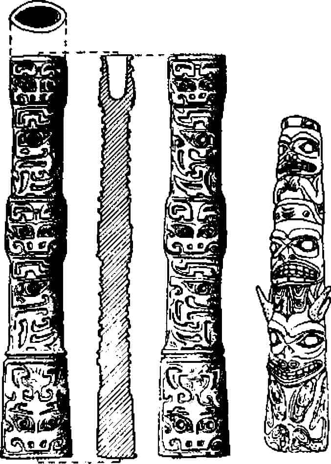
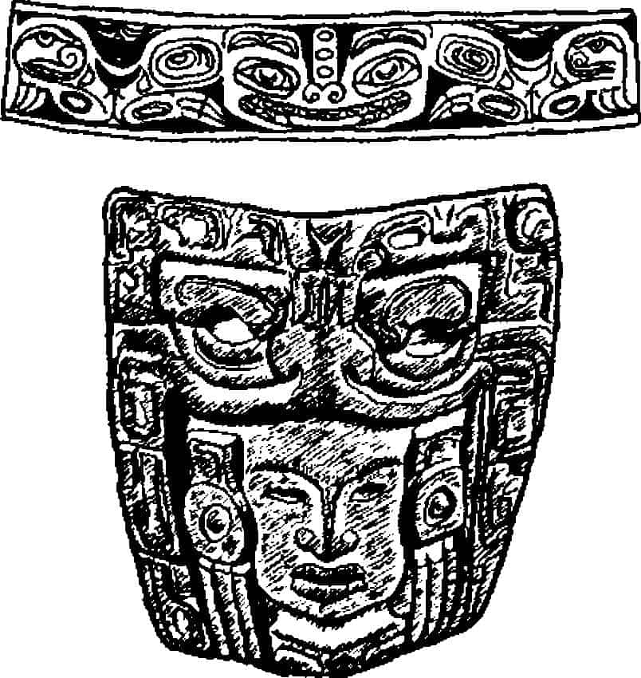
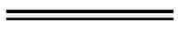
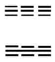

Ulusal Taivan Üniversitesi’nden Dr. Li Çi, Çin Uygarlığının Başlangıcı adlı araştırmasının girişine, “Tarihi 5000 yıla uzanan bir ülkede doğmuş olduğumu bilmekten kendimi çok mutlu hisse-derdim” diye yazıyor:
“5000 yıl eliyorum, çünkü bu benim kuşağımın genç zihnine verilen sayıdır. Sümer ve Mısır uygarlıklarının daha eski olduğu söyleniyor, fakat onlar öleli de çok oldu. Hinduların da çok eski bir gelenekleri var, fakat bilgeleri, son zamanlara kadar geleneklerini yazıya geçirme gereksinimi duymadılar. Bütün bunlar dikkate alındığında Çin, açıkçası dünyada mevcut en eski ülkedir ve -burası önemli- bütün uluslar içinde en uzun yazılı tarihe sahip olandır. Çin Devrimi’nden önce [1912] Çin’in tarihinden anladığım buydu.
Devrimden sonra işler değişmeye başladı. Çin reformcularının eskiden yazılmış her şeye, tarih de dahil kuşkuyla baktıkları bir zaman geldi. Yirminci yüzyıl başındaki Rönesans hareketi özünde rasyonalist bir hareketti, aşağı yukarı on yedinci yüzyıl klasikçilerinin ruhuna yakındı. “Kanıtını göster” sloganları yıkıcı bir nitelik taşımakla birlikte, eski Çin araştırmalarına daha eleştirel bir yaklaşımla bakılmasını sağladı. Böylece, eğer biri Yao ve Şun Altın Çağıyla ilgili aşırıya kaçan bir saygı ifade ederse kanıtını göster; eğer biri MÖ 3. binde Büyük Yü döneminin mühendislik mucizelerinden konuşmak isterse, kanıtlarını göstermelidir. Bu noktada önemli olan, artık yazılı metinlerin de geçerli kanıt olarak görülmemeye başlanmasıydı.
Bu kanıt arayıcı hareket, geleneksel öğrenimi neredeyse harabeye çevirdi ve klasik çağ araştırmalarında yöntem devrimi yaptı. Çin’de modern arkeoloji bu atmosferde doğdu.”{559}
Çin’in geçmişinde mitsel olanın değil gerçeğin konu edildiği arkeolojik araştırmalar, Çinlilerin değil İsveç Kralı Gustaf Adolf’un (prensken) sağladığı destekle Batılı bilim adamlarının yapıtlarıyla görünmeye başladı; Avusturyalı, Kanadalı, Fransız, İsveçli ve Amerikalı bilim adamları yanında genç Çinlilerin de olağanüstü kavrayış ve bilgileriyle ve elbette Rockefeller Kurumu’nun müşfik bağışlarıyla gelişti.
Dr. Li Çi gönülden kabul ediyor ki, “Çin’de tarih öncesi araştırmaları İsveçli jeolog Dr. J. G. Anderson’la başlamıştır. Çou-kou-tien’in yerini ve Pekin Adamı’nın ilk izini bulan o olduğu gibi, Kuzey Çin’de geniş bir alana yayılmış bulunan tarih öncesi son dönem Neolitik kültürün varlığını ilk keşfeden bilim adamı da odur.”{560}
Çalışmalar Dr. Anderson’un Pekin’den fazla uzak olmayan Çou-kou-tien tepelerinde tarih öncesi memelilere ait kalıntıları toplamaya başlamasıyla 1918’de açıldı. Anderson 1921’de işlenmiş aletlere benzer parçalar buldu ve 1923’te Avusturyalı arkadaşı ve yardımcısı Dr. Otto Zdansky birkaç yarı insan dişine benzer dişe rastladı. Veliaht 1926’da gelerek konuya ilgi gösterdi. 1927’de Çin bilimsel kurumları, İsveç ve Amerika fon oluşturdu ve 1928’de şimdi önemli bir girişim olduğu anlaşılan projeye bütün desteği -1939’a kadar- Rockefeller Kurumu vermeye başladı.{561}
Dr. Anderson’un sonuçlar hakkındaki kendi özeti, Uzakdoğu’nun en eski tarihine ilişkin temel tarihöncesi dönemler olarak şu şemayı sunmaktadır:
1.000.000 yıl önce: Çok belirsiz insanımsı izleri
500.000 yıldan daha eski: Güzel çakmaktaşı alet (Çou-kou- tien’den)
500.000 yıl: Sinanthropos pekinensis (Çou-kou-tien’de)
500.000 yıldan yeni: insanımsı alt çene kemiği ve büyük, iyi işlenmiş çakmak taşları (Çou-kou-tien’de)
50.000 yıl: Paleolitik Adam (Ordos Çölü buluntuları arasında bol)
25.000 yıl: Mongoloid olmayan Homo sapiens (Çou-kou-tien)
25.000-4.000 yıl: Açıklanamayan boşluk
MÖ y. 2000: Yangşao kültürü: Güzel boyanmış, iyi işlenmiş seramik eşya: Gelişmiş Neolitik: Proto-Çin.{562}
Pekin Adamı (Sinanthropos pekinensis, yaklaşık 500.000 yıl yaşında) İlkel Mitoloji cildinde tartışılmıştı.{563} Kabaca Cava Adamı (Pithekantropos erektus) ve Avrupa’da Heidelberg Adamı’yla (Homo heidelbergensis) çağdaştır; kabaca yontulmuş taş aletleri yukarıda Hindistan Soan Kültürü’yle ilgili olarak anlatılan “kesme” tipini andırmaktadır.{564} Yemek âdetleri içinde yamyamlık da yer almaktadır{565} ve gene Dr. Anderson’dan alıntıyla, beyin kapasitesi “aşırı güçlü göz deliği üstü çizgileriyle çok düşük”tür.{566} Çene “İnsanımsılarınki gibi eğridir”, alın yapısıyla birlikte değerlendirildiğinde biraz umutsuz profil vermektedir. Gene de bu kaba adam -kanıtlar yanıltmıyorsa- dünyada ilk ateş kullanan yara-tıktır.
Ordos Çölü buluntuları daha fazla bilgilendiricidir. Dr. Anderson “tip olarak buluntuların çoğu Avrupa’da “Musteryen” diye adlandırılan kültür çağıyla yakından bağıntılıdır” diyor. “Peşinden gelen Orinyasiyen dönemiyle de benzerlik gösteren birçok parça vardır, istisnai olarak çok daha sonraki Fransızların “Magdaleniyan” adını verdikleri kültürü çağrıştıran mükemmel örnekler de bulduk. Doğu Asya’nın taş devrine ilişkin çok sınırlı bilgimizle karşılaştırmalara girişmek için çok erken olur, şu an için Ordos buluntularının Batı Avrupa’daki Musteryen-Orinyasiyen uygarlıklarıyla, yani Eski taş devrinin orta dönemleriyle çok benzeştiğini söylemekle yetinmeliyiz.”{567}
Uzakdoğu’nun tam insan türüne ait (Homo sapiens), Mongoloid olmayan kalıntıları yalnız antropoloji açısından ilginç olmakla kalmıyor, mitoloji sorunları açısından da çok değer taşıyor. Çünkü belki Kuzey Amerikalı Kızılderililerle en eski Çin mitos ve sanatları arasındaki bazı (yalnızca bazı diyorum) koşutlukları açıklamakla yardımcı olabilir (yalnızca olabilir diyorum). Bu konuda Amerika Doğal Tarih Müzesi’nden Dr. Walter A. Fairservis Jr.’dan alıntı yapayım:
“Kanıtlar... Pleistosen’in kapanış döneminde [Buzul Çağının bitişi], Kuzey Asya’da, Kuzey Çin de dahil, muhtemelen fiziksel olarak Japonya’daki Aynulara çok benzeyen paleo-kafkasoid insanların yaşadığını gösteriyor. Gene kanıtların gösterdiğine göre çok sonrasına kadar Güneydoğu Asya’da Mongoloidler yoktu. Bu dönemde Batı Asya’da Mongoloid tip bulunmadığına göre, kökenlerinin kuzeyli olduğunu varsaymak durumundayız...
[Mongoloid] fiziksel özelliklerin aşırı soğukla belirlenmiş çevrenin sonucu olduğu iddia edilmektedir.{568} Bu tür iklimin Dördüncü Buzul Çağında, buz olmayan bölgelerin dağ buzulları ve Sibirya buz tabakaları arasında cepler oluşturduğu, Sibirya ve Orta Asya’da bulunmuş olması gerekir. Bu bölgeler aşırı soğuktu (çoğunlukla -35° C) ve rüzgârlıydı. İnsan ve hayvanların yaşayabilmek için büyük mücadele vermiş olmaları gerekir. İnsanlardan birçoğu öldü ve kalanlar, az sayıda, kültürlerini çevreye uydurdular: Koruyucu elbise olarak kürk ve deri diktiler (ilk dikilmiş elbise?). Sağlanan uyumlardan biri buydu, ama bir başkası çok daha ilgi çekici, insanların zorunlu yüz uzantıları, öncelikle burnu, ağzı ve gözleri, bu duyarlı bölgelerin korunabilmesi için fiziksel değişim gerektiriyordu. Yalıtılmış, sayıları az proto-Mongoloid gruplarda (tanımlanmış değil) doğal seçimin işleyişi optimum bir durum olarak gerçekleşmiş olmalı. Durum buysa, yaşayabilmek için gerekli anatomik değişiklikler ortaya çıkmış olmalıdır...
Son buzul döneminden sonra yurtlarının ısınmaya başlamasıyla olasılıkla 8.000-10.000 yıl önce klasik Mongoloidler Buzul Çağı koşullarından kurtulmaya başladılar. Öteki ırklarla karışarak zaman içinde bugün dünyada görülen Mongoloid insanları oluşturdular. MÖ 2. binde Kuzey Çin ve Batı Çin’in en azından bazı bölümlerinde Mongoloidler çoğunluktaydı...
Güneybatı Sibirya’da Mongoloid tip Minusinsk Kurgan kültürü (olasılıkla MÖ 500 sonrası) dönemine kadar arkeolojik zamanlama içinde görünmüyor. Bundan anlaşıldığı kadarıyla Mongoloid kültürler Yenisey’in doğusundaydılar ve bu ırkın en önemli hareketi kuzey-güney yönünde olmuştu; çok eski dönemlerde Çin’e ve belki de Yeni Dünya’ya yayılmalarını bu durum açıklayabilir.”{569}
Çin mitolojik sisteminin oluşumunda, dolayısıyla dört ayrı tarih öncesi altyapı akla geliyor;
1. Eski Paleolitik, MÖ y. 500.000, önde gelen yayılım yeri tropikler (olasılıkla Güneydoğu Asya merkezli: Cava Adamı). Ağır kesme taşlar kullanan, kaba yontulmuş aletlerle kaba yamyam maymunumsular ve Çou-kou-tien’de ateşin kullanılışı.
2. Orta ve (olasılıkla) Gelişmiş Paleolitik, MÖ y. 50.000-25.000, Avrupa’nın iyi bilinen kesme taşlarını andıran üstün aletler: Musteryen (Neandertal Adam), Orinyasiyen ve Magdaleniyan (Cro-Magnon Adam): Burada kuzeyli kültürün Büyük Av dünyasının rit, mitos ve geleneklerinin geçerli olması beklenir; İlkel Mitoloji cildinde Amerika ve Avrasya için bunu tartışmıştık.
3. Yalıtılmış, çok özelleşmiş, kutuplu, öneri niteliğinde proto-Mongoloidler, MÖ 8000-6000’de yalıtılmış, donmuş herhalde Yenisey’in kuzeydoğusunda bulunan ülkelerinden kurtulduklarında, bir yandan çivi gibi Moğolistan ve Çin’e doğru güneye inip Endonezya’ya kadar, öte yandan Kuzey ve Güney Amerika’ya kadar ulaşmış olmalılar: Bu kutup çevresi-proto-Mongoloid yapının mitsel formülleri hakkında bize bir şeyler anlatabilecek olan işaretleri kollayacağız.
4. İleri Paleolitik dönemin gelişmiş çömlek kültürü. Dr. Anderson Kansu, Şansi ve Honan’da zengin örneklerini bulan ilk kişi oldu; sanki yoktan var olmuş gibi aniden ortaya çıkıyorlar.
Dr. Anderson’un anlatımı şöyle; “Bu çok eskide kalmış zamanların içine, daha derine daldıkça, yolumuza çıkan anlaşılmaz bilmecelerle daha çok şaşırıyoruz. Bunlardan biri de ‘Neolitik boşluk’, bilebildiğimiz özetle şöyle:
Lös (Paleolitik) döneminde de Kuzey Çin’in iklimi çok kuruydu ve birkaç göl bölgesi dışında nüfusun çok az olduğu düşünülebilir.
Lös döneminden sonra dikey ırmak erozyonunun yaşandığı P’an Çiao dönemi geldi; lös tabakası geniş oranda parçalandı ve yekpare kayalarla çevrili yerel, küçük kanyonlar oluştu. Mezolitik ve İlk Neolitik çağa tekabül edebilecek olan bu dönem bol yağmur dönemi oldu; dünyanın bu bölgesi için bu uygun bir iklim sayılabilir. Başka deyişle bölge, olasılıkla hayvanla doldu ve ilkel insan için elverişli bir alan oluşturdu. Fakat bildiğim kadarıyla... Kuzey Çin’de tartışmasız Mezolitik veya Neolitik olduğu söylenebilecek hiçbir yer bulunamamıştır...
Sonra aniden, tam Neolitiğin sonunda, bizimkinden yalnızca dört bin yıl kadar önce [yaklaşık MÖ 2000] o zamana kadar boş görünen alan çok işlek bir yer haline geliyor. Binlerce demeyelim yüzlerce köy, vadilerin tabanlarına bakan teraslarda yükseliyor. Bu köylerin çoğunluğu oldukça büyük ve önemli sayıda nüfus barındırmış olmalı. Halk avcı ve hayvancı olduğu kadar tarımcı da; aletleri ve Yang Şao Tsun’da bulunan kırık çömlek parçası içindeki pirinç kabukları bunu kanıtlıyor. Erkekler yetenekli marangoz ve kadınları dokumacılık ve iğne işlerinde usta. Zamanında eşi olmayan mükemmel seramikleri Honan ve Kansu’nun o zamanki insanlarının gelişmiş bir uygarlık oluşturduklarını gösteriyor. Şu ya da bu biçimde -icatlar veya dışarıdan gelmiş yeni fikirlerin girişiyle- hızlı nüfus artışını beslemiş ani bir etki olması gerekir.”{570}
Aynı dönem için, İlkel Mitoloji’de bu, şöyle gösterilmişti:
1. Kaba, cilalanmamış, çömlekçilik: Önerilene göre bu kaba işçilik elle veya bobinle yapılıyor, aletlerle (“şerit veya hasır izi”) veya yapıştırılan çamur parçaları ve şeritleriyle pişirilmeden önce süsleniyordu; ilk neolitik tabaka MÖ y. 2500 olarak düşünülmektedir (henüz kanıtlanmış değil): Bu tür seramiğin Çin dışında İngiltere’den Amerika’ya kadar yaygın bir dağılımı var ve ana merkezi veya kökeni Çekirdek Yakındoğu olarak görünüyor, MÖ y. 4500.
2. Usta işi boyalı çömlekçilik (Yangşao), MÖ y. 2200-1900: Bir yandan Güneydoğu Avrupa’nın Tuna-Dinyester bölgesi (Aryan merkezi), bir yandan Kuzey İran’la reddedilemez yakınlıklar göstermektedir; göze çarpan motifler çifte balta, sarmal ve svastika, menderes ve çokgenler, iç içe geçmiş daireler, dama deseni, yılan kıvrımları, köşeli zikzaklar ve bantlar. Sanırım Çin ve Kolomb öncesi Meksika’nın ortak motifi çok daha ilgi çekici; Üçayaklı Li denilen çömlek, asılı üç göğüsten oluşuyor, içleri boş ve uçları ayak gibi.
3. Usta işi siyah boyalı çömlekçilik(Lungşan): Honan’dan çok Şantung’da (“Çin’in Kutsal Ülkesi”) yaygın; görüldüğü kadarıyla MÖ y. 1900-1523’e ait.
4. Usta işi beyaz çömlekçilik (Şang): Tunçla, iki tekerlekli atla çekilen arabayla, yazıyla ve hiyeratik şehir devletiyle bağıntılı; Şang klasik Çin hanedanlarının en eskisi ve tarihlemesi MÖ 1523-1027 arasında yapılıyor.
Gelişmiş uygarlıkların mitolojilerini karşılaştırmakta kullandığım tabloya bakarak Çin eserlerinin en eski değil, gerçekte en yeniler olduğu görülüyor. Çekirdek Yakındoğu tarihlerimiz anımsanacaktır:
I. İlk Neolitik: MÖ y. 7500-5500
II. Temel Neolitik: MÖ y. 5500-4500
III. İleri Neolitik: MÖ y. 4500-3500
IV. Hiyeratik Şehir Devleti: MÖ y. 3500-2500
V. İleri Tunç Çağı: MÖ y. 2500-1500
VI. Kahraman Demir Çağı: MÖ y. 1500-500
VII. Büyük Klasikler Dönemi: MÖ y. 500-MS y. 500
VIII. Büyük İnançlar Dönemi: MS y. 500-1500.
Hindistan, gördüğümüz gibi, öyküye V. dönemde dahil oldu. Çin anlaşılıyor ki, VI. dönemde dahil olmuş. Fakat kullanılabilir Çin metinlerini bulmak için, VII. döneme kadar beklememiz gerekecek. Ama o zamana kadar Batı’yla en azından uzaktan uzağa ilişkilerin başlamış olduğunu kanıtlayan sayısız işaret var. Roma-Çin ipek Yolu ticarete MÖ 100’de açıldı. İskender Hindistan’a MÖ 327’de ulaştı. İran bundan iki yüzyıl önce Hindistan’a girdi ve gördüğümüz gibi demir Hindistan’a İran yoluyla MÖ y. 500’de geldi. Demirin Çine ulaşması da yaklaşık aynı zamanlarda.
Çalışmamızda aklımızda tutmamız gereken ana tarihler şöyle:
Şang (Temel Çin İleri Tunç Çağı), MÖ 1523-1027
İlk Çou (gelişen feodalizm dönemi), MÖ 1027-772
Orta Çou (dağılan feodalizm donemi), MÖ 772-480
KONFÜÇYUS, MÖ 551-478
Son Çou (savaşan devletler dönemi), MÖ 480-221
Ç’in (Kitapların yakılması: Çin duvarı), MÖ 221-206
Han (Konfüçyusçu bürokrasinin kurumlaşması), MÖ 206- MS 220
Altı Hanedan (dağılma: Buddhizmin kurumlaşması), MS 220-589
BODHİDHARMA, MS 520{571}
Sui (İmparatorluğun birleşmesi: Büyük Kanal), MS 590-617
T’ang (Çin uygarlığının doruğu), MS 618-906
Sung (Yeni-konfüçyusçuluk: resmin doruğu), MS 960-1279
Yüan (Moğol Hanedanı: Cengiz Han), MS 1280-1367
Ming (Yeni-Konfüçyusculuğun restorasyonu), MS 1368-1643
Ç’ing (Mançu Hanedanı: Dağılma), MS 1644-1911.
Şang ve ilk ve Orta Çou Hanedanları karakter ve zaman olarak, genelde Aryanların Hindistan’a girişiyle Buddha zamanına kadar olan döneme karşılık geliyor. MÖ sekizinci yüzyıl ve sonrakiler Hindistan’da olduğu gibi Çin’de de geniş bir alanda prenslerin egemenliğindeki büyük kentlerin ortaya çıkışına ve daha eski feodal yaşam biçiminin dağılışına tanık oluyorlar. Konfüçyüs zamanında en az 770 birbiriyle çarpışan prenslik olduğu söyleniyor. Fakat Çin düşüncesi, savaştan vazgeçip dünya dağılmaya başladığında ormana çekilmek yerine, tamir sorununu yükleniyor. Dolayısıyla, terk ediş yollarının yüksek tarihi yerine, Çin felsefesi mevcut dünyaya uyum sorunuyla uğraşan çatışan sistemlerle belirleniyor -sonucun ne olduğunu da şimdi göreceğiz-.
Edgar Allan Poe, bir zamanlar “Sapığın Şeytanı” diye küçük bir parça yazmıştı. İnanıyorum ki, bütün dünyada dindarca benimsenen inançları tasarlayanlarda yazarın orada tanımladığı cinsten yetenek ve dürtünün istisnai güçte bir biçimi olmalı. Yoksa ne yaptıklarını bilmiyor olamazlar. Kendilerini yalancı olarak görmeleri de olanaksızdır. Kendi apokrifal{572} fantezileri olduğunu bildikleri insan soyunun ahlaki beslenmesini sağlamak için küçük bir bira mayalamayla tatmin oldukları da enderdir. Sarhoşlukları ancak kendi ruh durumunda olanların girme hakkı edindikleri bir gerçek kuyusunun ambrosiasıyla inceden inceye hazırlanmış azametli bir hava olmak zorundadır. Tam yazarım Poe’nun dediği gibi. Bu tür çabayı “metafizikçilik” olarak adlandırır, “hepsi a prioiri hazırlanmaktadır” der. “Entelektüel veya mantıklı insan, anlayışlı veya gözlemci olan değil, kendini tasarılar oluşturmaya verir. Tanrının amaçlarını bildirmeye koyulur. Kendince uygun biçimde Yehova’nın isteklerini böyle hayalleyip bu isteklerden sayısız zihinsel sistem inşa eder.”{573} Ve bilgelerin sistemlerini öğrettikleri aynı sapıklığın garip gücüyle halk da, aydınlar da her yerde ona göre yaşadıkları, rüyalar gördükleri ve yaşamlarını düzenledikleri kötülüklerin gerçek yapısını kendilerine bildirecek olan olguların aydınlatılmasını görmeye isteksiz olmuşlardır. Bizim Kitabı Mukaddes’le ilişkimiz, biliyoruz ki böyle olmuştur. Uzakdoğu’da da, Yao ve Şun’un altın çağlarında, Büyük Yü’nün mühendislik mucizelerinde ve hepsinden önemlisi beş bin yıllık yazılı Çin tarihinde olanlar da aynısıdır.
Konfüçyus (MÖ 551-478) öncesi Çin’e ait yazılar hakkında bu kadar az şey bilmemiz de şaşırtıcıdır. Ve bazılarına belki daha da şaşırtıcı gelecek olan, Konfüçyus’tan sonraki dönemde metinlerle öyle oynanmıştır ki, Avrupalı, Japon veya Çinli olsun, en büyük uzmanlar dahi Konfüçyus’un kendi metinlerini bile ayıklayıp bir araya getirme işinde şimdiye kadar çaresiz kalmışlardır. Daha önceki bilgelik, felsefe veya mitoslardan hiç söz edilemez. Sonuç olarak, Çin’in altın çağına ait bütün mitoslar (veya denildiği gibi ahlaki anekdotlar), “eski toprak” veya “birinci sınıf orman” değil Konfüçyusçu kalemler ormanının ürünü olarak kabul edilmek durumundadır. Eğer aralarında Yangşao, Lungşan, Şang, hatta Çou mitolojilerine ait gerçek bir şey bulunacaksa (yani Şih Huang Ti’nin MÖ 213’te kitapları yakmasından daha eskiye ait bir şey) ilk hallerinin bozulmuş olduğunu, daha sonraki bir dönemde, yaşlı bir Mısırlı bokböceğinin boş bir hanımın elinde yüzük olması gibi, incelikle hazırlanmış olduğunu aklımızda tutmamız gerekir.
İsveçli Sinolog Dr. Bernhard Karlgren büyük bilgi birikimine dayanan çalışmasıyla, Han döneminden önce yaşayan Çinli müfessirlerin, en azından bazı Çinlilerin, kendi kalıtımsal eğitimleriyle kaleme almış oldukları mitsel söylemi yeniden kurma işine girişmiştir. Onun yapıtında bulunan malzemenin, çoğunlukla Çou döneminin aristokrat çevrelerinde üretilmiş olan ataların metinlerine dayandığı kabul edildiğinden ben de onu izleyeceğim.
Göze çarpan ilk nokta, ne Çou döneminden ne daha sonraki Konfüçyusçu klasikler döneminden kalma yaratılış öyküsü yoktur. Daha sonraki Han döneminde birkaç öykü vardır, ama klasik döneme ait değildir ve genelde daha sonraki Taocu düşünceyi yansıtır. Dört komşu imparatorluğun. Roma, Arsaklıların İran’ı, Kuşhanların Hindistan’ı ve Han Çin’i zamanında tüm dünyaya yayılan temaların Çin’deki durumu hakkında bize fazla bir şey iletmiyorlar. Buradaki dünya Hint kozmik hayaline göre çok daha katı olmuş olmalı. Sonuç olarak, yaşama isteğine Büyük Tersine Dönüş’le ilgili bir ibaret de görünmüyor. Çinliler kendilerine ve basit üretim, zenginlik ve uzun yılların verdiği ürünlere karşı olağandışı, hiç umutsuzluğa yer vermeyen yoğun ve hafif (ikisi birden) bir güven duyuyorlardı.
Hindistan’da içine düştüğümüz zengin çorbadan sonra Çin mutfağı korkarım başlangıçta biraz zayıf görünecek. Fakat göreceksiniz, yollar sürekli açılıyor ve çok geçmeden ortalık şölene dönüşecek. Çinlilerin yemek âdetleri gibi, düşünme biçimleri de biraz dolambaçlı; başka türlü anlatabilmek için gösterdiğim tüm gayretlere karşın dolambaçlı yollar karşımıza çıktı. Böylece, garip yolun başına gelmiş olduk: Çin’in mitolojik geçmişi İlk ve Orta Çou dönemlerinden bize kalan tamamen harap olmuş enkazın gösterdiği gibi, Konfüçyus sonrası dönemde yazılmış parça parça metinler, dağılmış parçalardan ibarettir. Okuyucu burada kozmogoni, dünyanın başlangıcının bulunmadığını görecektir. Dünya zaten ayaklar altında somut bir yerdir ve başlamak üzere olan iş, Çin’i inşa etme işidir.
1. Kuş yuvalarının Efendileri. İnsanlar o günlerde ağaçlardaki kuş yuvalarında yaşarlardı; kendilerini yeryüzünde bekleyen tehlikelerden böyle sakınırlardı.
2. Ateş kullanmayı bulan efendiler. İnsanlar çiğ yemek yiyorlardı ve midelerine zarar veriyorlardı; bazı bilgeler ateş kullanmayı icat ettiler ve onlara pişirmeyi öğrettiler.
3. Kung Kung Tufanı. “Ateş kullananlar döneminden sonra, Kung Kung kralken, sular dünyanın onda yedisini ve karalar onda üçünü kaplıyordu. Kral doğal koşullardan yararlandı ve imparatorluğunu sınırlı mekânda yönetti.”{574}
İmparatorluğun çoktan kurulmuş olduğu görülüyor. Tufanımız da var. Ve temel Çin temalarından biri son cümlede ifadesini buluyor, Kung Kung “doğal koşullardan yararlandı.” Erdem bu koşulları dikkate almaktadır, yetenek onları kullanmaktadır.
Klasik Çin düşüncesinin temel metinlerinden biri olan daha sonraki döneme ait Klasik Tarih’te (Şu Çing) en eski insanlar dönemi atlanmıştır ve bütün iyi şeyler Yao ve Şun’un altın çağından başlatılır (aşağıda sayfa 366); Kung Kung da o döneme aktarılmış ve yeteneksiz bir soylu olarak sürgüne yollanmıştır.
Bu dönemin adı eski mitolojide çok önemli olduğunu düşündürtüyor. Günümüze kalan metinlerde bir düzine kadar kral adından başka bir şey yok. Fakat bunlardan biri, Jung Ç’eng takvimin yaratıcısı olarak adlandırılır ve bir başkası, Çu Jung ateş tanrısının adını taşımaktadır. Dr. Karlgren’in kral adlarının bize “bu gölgede kalan dönem” hakkında bir şey söylemediğini belirtmesine karşın, “Çu zamanı Çin’inde önde gelen kahramanlarla ilgili birçok mitos olması gerektiğini” de ortaya koymaktadırlar.{575}
Tufanla sona eren bu önemli dönemde eski Çou mitolojisine ait on kral ortaya çıkmaktadır. Fakat belki de burada söz konusu olan eski Sümer kral listelerinin yerel biçimidir.{576} Bu on mitsel hükümdarla efsanelerinden kısa parçalar vereceğim, bunlar bana göre Mezopotamya kaynağı fikrini kuvvetlendiriyorlar; fakat karakteristik Çin etkilerini de taşıyorlar:
1. Fu Hsi; 2. Şen Nung. Çou dönemi efsanelerinde bu iki imparatorun mütevazı rolleri vardır. Fakat daha sonraki “Değişimler Kitabı”nda (I Çing) ikisi de büyük önem kazanmışlardır. Fu Hsi bu eserin kullandığı simgelerin yaratıcısı olmakla (sayfa 391) ve insanlara av ve balıkçılıkta ağ kullanmayı öğretmekle övülmektedir. Şen Nung ise, “on dört kuşak boyunca dünyayı yönetmiştir”; sabanı icat eden ve pazarları kurumlaştıran da odur.{577}*
3. Yen Ti. Şen Nung’un uzun iktidarından sonra Yen Ti’nin kısa iktidarı gelmiştir. Muhteşem kardeşi Huang Ti tarafından devrilmiştir.
4. Huang Ti. Sarı İmparator denilen bu önemli mitsel kişiliğin yirmi dört oğlu olduğu varsayılmaktadır; Çou döneminin en az on iki feodal ailesi onların soyundan geldiğini iddia etmektedir. Karlgren “Huang Ti’ye verilen kurbanlar feodal çevrelerde yaygın ve kral eviyle de sınırlı kalmamış olmalıdır” gözleminde bulunur.{578} Huang Ti ateşi kullanmayı bulmuştur (Ateş Kullanmayı bulan efendilerin zaten keşfettikleri), tepelerdeki ormanları yakmış, çalıları temizlemiş, bataklıkları yakmış ve vahşi hayvanları uzaklaştırmıştır. Böylece, sığır yetiştiriciliğini mümkün kılmıştır. Erdemleri dört yöndeki barbarların ona bağlanmasını sağlamıştır. Barbarların bazılarının göğüslerinde delikler vardır, bazıları uzun kolludur ve bazılarının derinde gözleri vardır. Parlak Teras’ta düşünürken bilgelere danışmış, “beş sese uyum vermek için” akort düdükleri ve on iki zilli kutu yapılmasını emretmiştir. Ve ruhları kutsal T’ai-şan dağına toplamaya altı ejderha tarafından çekilen fildişi arabayla gitmiştir. Önden rüzgâr tanrısı gidip dağı süpürmüş, yağmur tanrısı yollara su serpmiştir; önden kaplan ve kurtlar dört nala gitmekte, arkada ruhlar koşturmakta, yılanlar yerde kaymakta, anka kuşları yukarıda uçmaktadır.{579}
Burada mitsel etnoloji adını verdiğim düşünce biçimine dikkat etmeli; bu yalnız Çin’e özgü değil, tüm eski sistemlerde var.{580} Orta Krallığın sınırları dışındakiler yalnızca barbar değil, pek insan da sayılmıyorlar. Bunun örneğini Çin’in büyük Mançu İmparatoru’nun 1795’te Büyük Britanya Kralı III. George’a gönderdiği aşağıdaki öğüt dolu mektupta da görüyoruz.
“Koca dünyaya emrederken yalnızca tek amacım var, kısaca mükemmel bir idare oluşturmak ve devletin görevlerini yerine getirmek. Garip ve maliyetli hedefler beni ilgilendirmiyor... Ülkenizin ürettiklerine gereksinmem yok... Ey Kral, benim duygularıma saygı göstermeniz ve gelecekte daha büyük bağlılık ve sadakat duymanız, tahtımıza ebedi bağlılık içinde olmanız, ülkenizin bundan sonra barış ve güvenliğini güvence altına almanız için iyi olacaktır... Bizim Göksel İmparatorluğumuz bereketli bir bolluk içindedir ve sınırlarımız içinde hiçbir ürünün eksikliği çekilmemektedir. Dolayısıyla, dışarıdaki barbarlardan kendi ürünlerimizle değiştirerek bir şey almaya gereksinimimiz yoktur... Adanızın dünyayla bağı kesilmiş, denizlerin araya girmesiyle tek başına kalmış uzaklığını unutmuyorum, bizim Göksel İmparatorluğumuzun âdetleri hakkındaki affedilebilir cahilliğinizi çok görmüyorum... Titreyerek itaat et ve ihmal gösterme.”{581}
Vay vay!
5. Şao Hao. Bugüne kalan metinlerde bu hükümdar hakkınkında söylenenler yedi yıl iktidarda kaldığından fazla değil (kral öldürme ritüeli). Büyük Onlar dizisi, artık Yao ve Şun’un klasik altın çağına yaklaşırken metinler, daha çok bilgi vermeye başlıyor ve kişiler ete kemiğe bürünüyor.
6. Çuan Hsü; Kao Yang olarak da bilinir. Bu kralın sekiz yetenekli oğlu vardı ve bunlardan Kun (Büyük Balık) Büyük Yü’nün ve Tufana karşı başarısız olan halefinin babasıydı (8. krala bkz.).{582}
7. K’u. Bu kralın iki karısı vardı, Çiang Yüan ve Çien Ti, ikisi de mucizevi biçimde hamile kaldılar. Birincisi, Tanrı’nın koca ayak başparmağı izi üstünde yürürken hamile kaldı. Hou Çi’yi, “parçalamadan, dağıtmadan” doğurdu, oğlu daha sonra, Şun iktidarı zamanında tarım bakanı oldu. “Onu dar bir geçite yatırdılar, sığır ve koyunlar bacakları arasında onu besledi. Onu soğuk buza yatırdılar, kuşlar onu örtüp korudu.”{583} (Bakire doğum, çocuk sürgünü, hayvanın analık etmesi motifleri: Tarımcı ilahlaştırma. İsa’nın doğumu ve ağılıyla karşılaştırın.) İkinci doğum, iki genç hanım dokuz katli sefa kulelerinde şarap, et ve müzikle eğlenirken oldu. Tanrı onlara şarkı söyleyen kırlangıç gönderdi; onu yakalamak için birbirleriyle yarıştılar. Üstüne sepet atıp kuşu yakaladılar, bir süre sonra sepeti kaldırdıklarında kuş uçup gitti, geride iki yumurta bırakmıştı. İkisi de birer yumurta yuttu; Çien Ti gebe kaldı ve yüzyıllar sonra Şang Hanedanı’nın babası olacak olan çocuğu doğurdu.{584} (Burada dokuz rakamı önemli, Dante’de Beatrice’nin mistik rakamı;{585} Tanrıya ilahiler söyleyen melek korosunda, Angelus zilinin çalışında, Meryem’in İsa’ya hamile kalışını kutsayan Kumrularda rakam hep dokuzdur. Ayrıca, Leda ve Kuğu öyküsüne de bakın.)
8. Yao. Ti Yao veya Kutsal Yao Çin altın çağının en ünlü hükümdarıdır; bütün zamanların bilge modelidir. Büyük Klasik Tarih (Şu Çing) onun kişilik ve iktidarının övgüsüyle başlar:
“Eski çağları incelediğimizde Kutsal Yao’yu görüyoruz; doğal olarak hiçbir çaba göstermeden saygı dolu, zeki, hünerli, düşünceli, içtenlikle kibar ve yardımseverdi. Dahası, bu niteliklerin parlak etkisi dört yönde hissediliyordu, aşağı ve yukarı ulaşmıştı. Yetenek ve erdemleriyle belirginleşti ve tüm soyunun dokuz sınıfı arasında da sevgiyle dolu bir aşamaya ulaşıp aralarında uyum yarattı. Halkı düzenleyip aydınlattı, hepsi parlak zekâya sahip oldular. Birçok devleti birleştirip onlara uyum kazandırdı. Ve kara kafalı halk böylece dönüştürüldü. Sonuçta evrensel uyum oldu.”{586}
Fakat büyük erdemlerine ve bilge kişiliğinin kozmik etkisine karşın, Yao zamanında her şey mükemmel değildi. Kimsenin çare bulamadığı büyük seller oluyordu. Birçok sözler veren Bayındırlık Bakanı’nın yapabildiği çok az şey vardı.
“Ti Yao: “Zamana uygun olan, rütbe verip çalıştıracağım birini bana kim bulacak?” dedi.
Fang Çi yanıtladı: “Kendi veliahttınız ve oğlunuz olağanüstü zeki”.
Ti Yao dedi: “Heyhat! O yalancı, münakaşacı. İşe yarar mı?”
Ti Yao gene dedi: “işlerimin zorluğuyla uğraşabilecek adamı bana kim bulabilir?”
Ve kötü danışmanı Huan Tou yanıtladı: “Bayındırlık Bakanı’nın yetenekleri son zamanlarda büyük ölçüde görülmüştür.”
Ti Yao: “Heyhat! Hiçbir şey yokken konuşuyor, fakat iş başına geldiğinde işler tersine dönüyor. Yalnızca görünüşüyle saygın biri. Bak! Seller gökleri tehdit ediyor!”
Ti Yao Başbakanı’na döndü: “Sayın Dört Dağın Efendisi, sellerin akışı çok korkunç. Tepeleri sarıyor, en büyük yükseklikleri aşıyor, gökleri tehdit ediyor; düzlerde oturanlar homurdanıp şikâyet ediyorlar. Bu felaketin durdurulması işini verebileceğim yeterli biri yok mu?”
Ve bütün maiyetindekiler: “Kun var ya” dediler.
Kun, gördüğümüz gibi, ileride Büyük Yü olacak olanın babası ve kendisi de eski hükümdar Çuan Hsü’nün sekiz yetenekli oğlundan biriydi (6. kral).
Ti Yao dedi: “Heyhat! Bu adam ne kadar aksi! Emirlere itaat etmiyor, kendi haklarını çiğnemek istiyor.”
Dört Dağın Efendisi şu fikri ileri sürdü: “Gene de, denemesi için ona izin vermek iyi olur; başaramadığını görmeye yarar.”
Böylece Kun işbaşına getirildi. Ti Yao ona: “Git ve saygın ol” dedi. Kun dokuz yıl çalıştı. Fakat iş becerilemedi.
O zaman Ti Yao Başbakan’ına dedi; “Şimdi, Sayın Dört Dağın Efendisi, 70 yıldır tahttayım. Benim işlerimi sen yürütebilirsin, yerimi sana vereceğim.”
Fakat öteki: “Ben bu erdeme sahip değilim. Sizin yerinizde utanç verici duruma düşerim” dedi.
Ti Yao ona: “O zaman bana şerefliler arasından veya yoksullar ve orta halliler arasından birini göster” dedi.
O zaman bütün hazır bulunanlar: “Aşağı tabakadan bekâr biri var, adı Şun” dediler.
Ti Yao dedi: “Evet, duydum. Onun hakkında ne diyorsunuz?”
Dört Dağın Efendisi yanıtladı: “Kör birinin oğlu. Babası inatçı bir ahlaksız, üvey annesi yalancıydı. Üvey kardeşi Hsiang küstahtı. Fakat o sevgi dolu dindarlığıyla onlarla uyum içinde yaşamayı becerdi ve yavaş yavaş onları kendi başlarına durmaya alıştırdı; artık büyük kötülükler yapma eğilimi göstermiyorlar.”
Ti Yao dedi: “Onu deneyeceğim. Onu evlendireceğim ve iki kızımla davranışlarının nasıl olduğunu gözleyeceğim.”
Ve Ti Yao dediği gibi yaptı; iki kızını Kvei ırmağının kuzeyine, Şun ailesine gelin olarak gönderdi. Ve Ti onlara “Saygın olun!” dedi.”{587}
Böylece yeni Ti, yeni tanrı-kral seçme ve tahta çıkarma zamanı gelmiş oluyor; layık olma ve değerin soydan gelme değil ahlaki olduğu kabul edilmiş bulunuyor; bu da tamamen Konfüçyusçu bir görüş. Ayrıca, imparatorun oğluna ve genç Şun’un anne babasına kötü karakterler verilerek bu nokta daha da vurgulanmış oluyor. Oysa Şun’un insan sever dindarlığı evrenin kutbu olmaya uygunluğu için, ana ve hatta anahtar niteliklerden biri olarak konulmuş olunuyor. Hindistan’da vurgu hep doğum üstünde olmuştur ve benzer bir mitoloji bildiğim kadarıyla yoktur.
Hükümdarın tahta soyuyla bağıntısız biçimde halkın en değerlisi olması nedeniyle çıkması belirgin Çin motiflerinden biridir ve daha eski anaerkil dönemin kalıntısı olmalıdır; Frazer’in Altın Dal’da tartıştığı eski kralın öldürülmesi teması gibi vahşi bir iz de taşımaktadır. Çünkü Yao, biraz da aceleyle, iki kızını da Şun’a vermektedir. Eski kitaplardan birinde böyle ölümcül bir tonu ifade eden “Şun Yao’yu zorladı. Yü Şun’u zorladı” cümlesi okunmaktadır.{588} Fakat bu daha sonraki, klasik zaman içindeki bağlamda eski motif -eğer öyleyse- Çinlilerin iyi kral ülküsünün, bilge kral, bilge insan çekirdeğini oluşturan ahlaki bir temele çekilmiştir.
Yao Şun’u çeşitli yollarla denedi. Onu, örnek olarak, vahşi tepelerin eteklerindeki ormana yolladı. Fakat sert rüzgârlar, fırtınalar ve yağmur Şun’u yolundan saptırmadı.{589} Burada da ilkel temalardan biri var: Örnek olarak Kuzey Amerika’da çok yaygın olan bir tema, insan yiyen dev olan kayınpederin sınavları. Ama ahlak gene Konfüçyusçu. Veya Şun’un ormanda, sert rüzgârlar ve yağmurla sınanması Caynacı kurtarıcı Parşvanatha’nın durumuna benzetilebilir;{590} fakat Hintli mutlak terk ediş düşüncesi ile Konfüçyusçu yapıcı katılım becerisi düşüncelerindeki zıtlık böylece daha da canlı olmaktadır.
“Li-şan çiftçileri birbirlerinin sınırlarına tecavüz ediyorlardı. Şun oraya gidip çiftçilik yaptı ve bir yıl sonra sınırlar düzeldi. Ho kıyısı balıkçıları sığ yerler için kavga ediyorlardı. Şun oraya gitti, balıkçılık yaptı ve bir yıl sonra büyüklere saygı göstermeye başladılar. Doğulu barbarların çömlekçileri çok kaba ve kötü çömlekler yapıyorlardı. Şun oraya gidip çömlekçilik yaptı. Bir yıl sonra çömlekleri güzel oldu.”{591}
Ti Yao tahtında ancak üç yıl daha kaldı, Şun’u tahtına çıkmaya davet etti ve iyi genç elbette reddetti. Klasik Tarih, “Gene de ilk ayın ilk gününde Şun, Ti Yao’nun Becerikli Ata tapınağında emekliye çekilişini gördü” diye anlatıyor.{592} (Firavunun yılın bitişine göre ayarlanan Sed Şölenini anımsayalım!) Şun’un iktidarının 28. yılında, 101 yaşındaki Yao eski barbar kabileye eğitim vermek için gittiği kuzeyde öldü ve Kuzey’deki kutsal dağın kuzeyinde, höyük yapılmadan, basit biçimde gömüldü.{593}
9. Şun. İmparatorun başvekili olarak Şun 28 yıl boyunca bütün büyük kurbanları çoktan yerine getirmişti. Beş yılda bir dört yöne denetleme gezilerine çıkmış, oralarda dağlara kurbanlar sunmuştu; dört yılda bir feodal prensleri başkentinde kabul etmiş, işlerini denetlemiş, hilatler giydirmiş, ölçü standartlarını düzeltmişti; ülkeyi on iki eyalete ayırmış, ceza kanunu çıkarmış, cezayı hak edenleri cezalandırmıştı.{594} Ödül açısından da çok cömertti. Örnek olarak Ejderha Bekçisi, Tung Fu sevdikleri yemekleri vererek ejderhaları ağılına topladığını kanıtlayınca, Şun o kadar memnun oldu ki, ona kabile ve aile adı verdi, onu tımar sahibi yapıp büyük bir evin atası durumuna gelmesini sağladı.{595}
Fakat esas sorun hâlâ daha sellerdi. Kun onları denetim altına alma işini başaramamıştı, çünkü Klasik Tarihe göre yaptığı işte doğayı bozmak gibi bir hatası vardı. “Taşan suların önünü duvarlarla kesip beş öğenin düzenlenişinde karışıklığa neden oldu. Sonuçta Göklerin Efendisi kızdı ve ona dokuz bölümlü planı vermedi. Böylece, Göklerin yönteminin değişmez ilkelerinin heba olmasına neden oldu. Kun ölene kadar hapsedildi ve oğlu Yü yetişip onun görevini üstlendi.”{596}
10. Yü. Metin şöyle devam ediyor: “Gök dokuz bölümlü planı Büyük Yü’ye verdi; yönteminin değişmez ilkeleri doğru biçimde uygulandı.”{597} Bu yöntem Yü’nün babasının uyguladığının tam tersiydi. Mencius’tan öğreniyoruz: “Yü toprağı kazdı ve suyu denize akıttı; yılan ve ejderhaları çıkartıp bataklıklara sürdü.
O zaman sular toprakların ortasından yollarını buldu: Hsiang, Huai, Ho ve Han ırmakları. Ve engeller kaldırıldığında insanlara rahatsızlık veren kuşlar ve yabani hayvanlar sürüldü, toplanan halk toprağa egemen oldu ve yerleşti.”{598}
Yü’nün uzun bir boynu vardı; ağzı kuzgun gagası gibiydi, yüzü de çirkindi. Fakat onu bilge kabul ederek, öğrenmeye gösterdiği bağlılığı görerek dünya peşinden gitti.{599} İmparatorun hizmetçilerinden bir kadın, mükemmel bir şarap yaptı ve getirdi. İmparator şarabı tattı ve hoşuna gidince kadını uzaklaştırdı, “Gelecekte” dedi, “içki yüzünden yerini kaybeden çok insan olacak.” Ve bundan sonra şaraptan elini çekti. Bütün yaşamı, o yıllarda işiyle doluydu ve bunu doğa kurallarına uyarak yerine getiriyordu. Çıplaklar ülkesine girdiğinde, yerel kurallara uyarak soyundu. Ve çalışmalarında dünyanın sınırlarına yolculuk etti. En doğuda on güneşin yıkandığı, tünediği ve uçup havalandığı ağacın olduğu yere kadar gitti, en güneyde vernik ağaçlarının, kırmızı tahılın, kaynayan gözelerin, dokuz parlak dağın, kanatlı insanların, çıplak insanların ve ölümsüzlerin ülkesine ulaştı. Batı’da çiğ içip havayla beslenen insanların ülkesini, büyücünün dağını, işlenmiş altın dağını, üç yüzlü ve tek kollu insanların ülkesini, kuzeyde çeşitli barbarların ülkelerini, koca suları, Kuzeyin kutsal dağını ve yığılı taştan dağı gördü.{600} İşini bitirince Şun’un önüne çıktı. Klasik Tarih anlatıyor:
Şun dedi: “Anlatacak harika deneyimlerin olmalı.”
Yü dedi: “Yalnızca o günkü işimi düşünüyordum. Ne diyebilirim?”
Adalet Bakanı dedi: “Hadi, bize hiçbir şey anlatmayacak mısın?”
Yü dedi: “Taşan sular göklere çıkmış gibiydi. Büyüklükleriyle koca tepeleri sarmıştı, güçlü dağları aşmıştı; insanlar şaşkınlık içindeydiler, çaresizdiler. Dört arabamı [karada araba, suda gemi, buzda kızak ve tepeleri çıkarken çivili ayakkabı] yükledim ve tepeler arasındaki ormanları kesip devirdim. Aynı zamanda, Tarım Bakanıyla [7. başlığa bakın] birlikte insanlara yemek için nasıl et bulacaklarını öğrettim [balık, kuş ve yabani hayvan yakalamak]. Dokuz eyalette ırmaklar için yollar açtım ve hepsini denize bağladım, aynı zamanda tohum ekerek, Tarım Bakanıyla birlikte insanlara et yanında yiyecek için nasıl çalışacaklarını gösterdim. Ayrıca, onları sahip olduklarıyla sahip olmadıklarını değiştirmeye ve birikmiş stoklarını satmaya teşvik ettim. Bu yolla bütün insanlar yiyecek tahıla kavuştular ve birçok eyalet iyi bir düzene girdi...
Evlendiğimde karımla yalnızca dört gün birlikte kaldım. Ve oğlum ağlayıp feryat ettiğinde, aldırmayıp bütün gücümle planları düşündüm.”{601}
Bir başka metin, “On yıl Yü evini görmedi” diyor. “Ellerinde tırnak büyümedi. Baldırlarında tüy bitmedi. Ayrıca, gövdesinin yarısını kurutan bir hastalığa yakalandı, yürürken bir bacağını ötekinin yanına taşıyamıyordu. İnsanlar bu yürüyüşe ‘Yü yürüyüşü’ adını takmışlardı.”{602} MÖ 541 yılında Liu prenslerinden biri, “Yü olmasaydı hepimiz balık olmayacak mıydık?” demiştir.{603}
Daha elli küsur yıl önce Batılı bilim adamlarınca bile, Çin’in eskiliğinin kanıtı olarak ciddiye alınan büyük Çin altın çağının masalı kısaca böyle.
Birkaç gerçeğe göz atmak için kısaca duralım.
Öncelikle, daha önce belirtildiği gibi, Tufan’ın sonuncusu tarafından alt edildiği ortak öğesiyle, Çin’in on hükümdarıyla Sümer kralları ve Kitabı Mukaddes kişileri arasında açık bir benzeşme vardır. Çin kral sayısının on olmasının yalnızca rastlantı olduğu söylenebilir, fakat diğer bazı noktalar rastlantı iddiasını savunmayı zorlaştırıyor. Örnek olarak, hem Nuh’un hem Büyük Yü’nün Tufan sırasındaki gayretlerinde aksamaya başlamaları dikkat çekici değil mi? Ünlü bir Yahudi efsanesine göre Kitabı Mukaddes kahramanı koca teknesinde aslan (güneş hayvanı) tarafından yaralanmıştır. “Bir gün Nuh, aslana günlük payını vermeyi unuttu ve aç hayvan pençesiyle ona öyle vurdu ki, topal kaldı ve gövdesinde aksaklık olduğundan rahiplik görevini yapmasına izin verilmedi” diye anlatılır.{604} Karaya kavuşmalarından sonra aile rahibi olarak sığır, koyun, keçi, iki kumru ve iki güvercin kurban edilen ayinde rahipliği Nuh’un değil Şem’in yapması da bundandır.
Robert Graves, Beyaz Tanrıça kitabında eski Levant, Girit, Yunan, Kelt ve Germen mitos ve efsanelerindeki topal kral kişiliğine bir bölüm ayırmış. İlgisi nedeniyle okumakta yarar var. Yakup’un ırmakta melekle güreştikten sonra topallaması (Tekvin 32: 24-32); tanrı Dionysos’un boğa ayakları; topal demirci Hephaistos; Wieland da gene topal demirciye işaret eder. Çarmıh taşıyan İsa’nın defalarca düşüşünü de bize anımsatır. Ve eğer görüşünü doğru anlıyorsak, daha eskiden öldürülen kralın daha sonraki ritüellerde yalnızca topal bırakılmaya veya sakatlanmaya başlandığını ileri sürmektedir.{605}
Benim görüşüme göre, sakatlanmış kral imgesi ayla ilgili olmalıdır ve doğal olarak -bulmuş olduğumuz gibi- kurban edilen ve yeniden dirilen boğa-kralın göksel karşılığıdır. Ay önce bir tarafından, sonra öteki tarafından topal olur; dolunay olduğunda bile karanlık lekelerle biçimi bozulmuştur. İlkel Mitoloji cildinde bir tarafı güzel öteki tarafı çürümüş tanrı ve ağaç imgeleriyle ilgili bir dizi aktarmıştım.{606} Devrinin 15. gününde tam biçimini alan ay batan güneşin yörüngesine dik bakar. Güneşin direk ışıkları o anda ayı yaralar ve ay bundan sonra küçülmeye başlar. Aslan Nuh’u böyle yaralamıştır; bu da, kuşkusuz Tufan’ın en yüksek noktasında olmuştur; dolunayın gelgitlerde suyun kabarmasını en yüksek düzeye çıkarması gibi. Ay, ayrıca, tanrıların ambrosia likörlerinin göksel kabıdır ve hem Nuh (Tekvin 9: 21) hem de Yü sarhoş olmaktadırlar.
Ne olursa olsun, şu anda elimizde mitsel çağın onuncu hükümdarının alt etmeyi başardığı Tufan öyküsünün, yapı ve anlamları birbirinden çok farklı üç ayrı anlatımı var. Birincisi, Sümerlerin kozmik eon devresine ait, matematik olarak kaçınılmaz, kozmik yok oluşla sona ereni. İkincisi, Tanrı’nın özgür iradesiyle meydana gelen kozmik felaket ve gördüğümüz gibi bu suç ve kutsallık karşıtlığını barındıran semitik tutumun tepkisini taşıyor gibi. (Bununla, tanrıların insanın yanında yer aldığı, Tufan’ın bir cin tarafından yaratıldığı, Aryanların Vedik kuraklık formülünü karşılaştırmıştık.) Ve son olarak Çin anlatımında, felaketin kozmik nitelikten çıkıp coğrafi bir hal aldığını görüyoruz; selin oluşumunda ne suçun ne de matematiğin etkisi vardır. “Her şeyden önce bir kahramanlık efsanesinden ibaret” diyor Dr. Karlgren, “baskın gelen tema, sel felaketinden çok onunla baş eden kahraman.”{607} Ve doğru eyleme ilişkin temel Çin anlayışı -ilk Çou döneminde belki, ama Konfüçyus döneminde kesinlikle- erdemin doğanın yapısına uyumda olduğunu savunmaktadır. Sonuç olarak kahraman göklerin Büyük Planı’nın kendisini açık etmesiyle ve onu uygulayarak başarıya ulaşmıştır.
Nuh’un Tufan’dan kurtulması, dolayısıyla hem eski dönemin sonunu hem yeninin başlangıcını temsil etmesi gibi, Yü de aynı durumdadır. Ve Tufan sonrası dönemde hem Sümer hem Kitabı Mukaddes kral listelerinde yavaş yavaş tarihsel alana yaklaşıldığı gibi, Yü döneminden sonra Çin’de de aynısı olmaktadır. Yü’nün efsanevi Hsia hanedanının kurucusu olduğu varsayılmaktadır; birçok ciddi bilim adamı halen bunu kanıtlayacak belgelerin bulunacağına inanmaktadırlar. Fakat henüz ortaya çıkmış belge olmadığına göre, efsanevi kabul edilmesi gerekecek. Kuruluş tarihinin MÖ 2205 olduğu varsayılmaktadır ve Yü’nün ölüm tarihi de MÖ y. 2197’dir.{608} 471 veya 600 yıl içinde on yedi kral geçtiği düşünülmektedir (anlatımlarda çok fark var). Bu hanedanın yıkılışından sonra arkeolojik bakımdan kanıtlanabilen Şang hanedanı gelmektedir. Ve Çin yazınında Yao, Şun ve Yü’nün iyi kral karakterine model oluşu gibi, Hsia hanedanının son efsanevi kralı Çieh de kötünün modeli olmuştur.
Çieh’in günah örneği olduğu anlatılmaktadır. Kışın köprü yapmamış, yazın sal yapmamış, insanların donmasını ve boğulmasını seyretmiştir, insanların kaçışını seyretmek için dişi kaplanları pazara salmıştır. Bütün gece bağırıp şarkı söyleyen otuz bin kadın müzisyeni vardı, sesleri sokaklardan duyulurdu; hepsi süslü ipekler giyerdi.{609}
Özellikle kadınlara karşı çok zayıftı. Yu Şih ülkesine saldırmış, kendine Mo Hsi adlı kadın gönderilince hemen kabul etmişti. Sonra Yu Min ülkesine saldırdı, burada ona Yüan ve Yen adlı iki kadın verdiler. Bunların adlarını ünlü bir yeşim taşına kazdırdı; Mo Hsi itiraz edince, onu Lo ırmağına sürdü. Kadın burada intikam beslemeye başladı.
Efsane, adını vermediği, tek başına olan bir başka kadından daha söz ediyor, bu kadın Yi ırmağı kıyısında yaşıyordu. Hamile olduğunu anladığının gecesi rüyasında bir ruh gördü. Ruh ona “harçlardan su gelmeye başlayınca doğuya doğru koşmaya başla ve arkana bakma” dedi. Ertesi sabah harçtan su sızdığını gördü ve komşularını uyarıp doğuya doğru kaçmaya başladı. Fakat durup geri baktı. Kent su altındaydı. Ve orada dut ağacına döndü.
Bu olay Lut’un karısı öyküsünü çağrıştırıyor. Melekler Lut’a, karısına ve iki kızına “canın için kaç; arkana bakma” demişlerdi. Fakat kadın arkasına bakmak için durdu ve Sodom ile Gomorra kentlerinin kükürt ve ateş altında kaldığını gördü. Şimdi bu kentler Ölü Deniz’in altındadır. Kadın da tuz direği oldu (Tekvin 19: 17-26).
Kötü hükümdar Çieh’in düşüşü efsanesinde ortaya, tek başına olan üçüncü bir kadın daha çıkıyor. Bu kadın küçük bir eyalet prensinin kızıydı, tek başına dut yaprağı toplarken bir dut ağacının kovuğunda bebek buldu. Bebeği eve götürüp babasına verdi; baba da bebeği saray aşçısına verdi. Bebeğe Yi ırmağının adından Yi Yin adını verdiler. Çok zeki bir delikanlı oldu. Ünü T’ang’ın, Şang evinin yükselen efendisinin kulaklarına kadar gitti; efendi, delikanlıyı istemek için elçi yolladı. Fakat küçük eyaletin efendisi, delikanlıyı keşfeden kızın babası, bu mucizevi insanı vermek istemedi. O zaman Şang evlenmek için kadın istedi ve kıza eşlik etmek üzere Yi Yin de birlikte gönderildi. Vardığında T’ang delikanlıyı yakaladı, tapınakta arındırdı, kutsal ateşle üstüne ışık saldı, kurban edilen domuz kanıyla sıvadı ve ertesi gün onu maiyetinin üyesi olarak yanına kabul etti.{610}
Şang prensi T’ang, Hsia kralı Çieh’in tersine, kralca erdemin modeliydi. Açlık çekenler için tahıl depo eder, üşüyenlere elbise verirdi. Çaresiz ana babaların sattığı çocukların kurtulmalığını ödemek için para kestiriyordu.{611} Ve korkunç kuraklık geldiğinde tek başına kutsal dut korusuna gider, Yüce Tanrı’ya dua eder, kurban olarak kendi gövdesini sunardı.{612}
Şang soyunun yükselmesi ve Hsia soyunun düşmesiyle ilgili bu efsanede sık sık tekrarlanan dut ağacı teması alttan alta çok güçlü bitki mitosu bulunduğunu düşündürtüyor. Dr. Karlgren Büyük On dizisinden iki kralın da -5 Şao Hao ve 6 Çuan Hsü- “Dut Ağacı (sang) Kovuğu (k’ung)” denilen yerde yaşadıklarına dikkat çekiyor. Karlgren’e göre burası adını “eski ünlü bir dut ağacından, çağdaş Çin’de bile yaygın bir görüntü olan bir kült merkezinden” almış olmalı.{613} Erdemli kral T’ang’ın, özellikle yağmur yağması için kendi gövdesini böyle bir yerde teklif etmesi efsaneyi Frazer’in Altın Dal’daki konusuna, dünyayı kurtaran kral öldürme ritüeline bağlıyor (17. şekildeki İndus Vadisi mührüyle karşılaştırın). Dut korusu ve kovuğu Roma Nemi korusu ve Diana’nın kutsal meşe ağacının tam karşılıkları.{614} Ve simgesel (tamamlanmamış) biçimde kendisini sunan dut korusundaki T’ang’ın yanına bir de k’ung sang’dan bakire doğumuyla doğan Yi Yin’i ekledik mi, kutsal ağacın ölüm ve yeniden doğumuyla ilgili (Kutsal haçtaki İsa’yı düşünün) mitosun bütün öğeleri tamamlanmış oluyor.
Nil ırmağına atılıp (Yi ırmağı gibi) bakire kızkardeşi gelini tanrıça İsis tarafından ılgın ağacının gövdesinde bulunan Osiris’i anımsayalım. Osiris ve Tammuz’un Greko-Suriyeli eşdeğeri Adonis de, kızken adı Myrrha olan bir ağaçtan doğmuştu. Babasını
arzulayan Myrrha, onu baştan çıkardı ve gebe kaldı, sonra da mür ağacına dönüştü. Ovidus’un öyküsünü anlattığı gibi: “Ağaç çatladı, kabuğu yarılıp ayrıldı ve canlı yükünü, ağlayan bir bebeği ortaya çıkardı.” Bebeği doğurtan doğum tanrıçası Lucina’ydı.{615} Peri Daphne de güneş tanrısı Apollon peşine düştüğünde ağaca dönüşmüştü. Ve gene karısı arkasına bakıp tuz direğine dönüşen Lut’a dönersek, kızları onu sarhoş edip baştan çıkarıyorlar ve ondan gebe kalıyorlar; çünkü iki kentin yıkılmasıyla canlı kalanların yalnızca kendileri ve yasaklanmış babaları olduklarını sanmışlardı -sanki Tufan ve dünyanın yeniden başlaması söz konusuydu-.
Dr. Karlgren “Ağaca dönen kadın temasında eski Helenist etkinin varlığını (Philemon ve Baküs, Daphne) düşünmemek zor” diyor.{616}
Çok daha zor olan eonun başlangıcı ve sonuyla ilgili uygarlık mirasının parçası ve belli bir bölümünü oluşturan temel mitosu düşünmemek. İlk biçimiyle Osiris ve Tammuz ritleri bu mitostan üretilmiştir; daha sonra Helenistik yazınsal mitoslar, Daphne, Myrrha, vb. Kitabı Mukaddes ve Çin yarı tarihsel kroniklerinde Nuh, Lut ve 5.000 mil ötede Büyük Yü ve mucizevi Yi Yin efsaneleri ortaya çıkmıştır.
Bu efsanenin bitiş bölümündeki olaylarda görülen kahramanların tunç taşıyan Şanglıların, Yangşao ve Lungşan neolitik kasaba ve şehir devletlerine karşı kazandığı zaferlerin, gerçek tarihöncesi sahnelerden alınmış olmaları ihtimali vardır. Erdemli efendi T’ang’ın veziri Yi Yin’i casusluk yapması için gönderdiğini ve onun da, yalnızca halkın Çieh yönetiminde sefil olduğunu öğrendiğini ve Lo ırmağı kıyısındaki hanımı kıskandığını okuyoruz. Ve saldırı zamanı geldiğinde Gökler kendi iradelerini gösterdiler. Ay ve güneş normal zamanlarını kaçırdılar. Soğuk ve sıcak karmakarışık oldu. Beş tür tahıl kavrulup öldü. Cinler uludu, kargalar on geceden fazla öttü ve kutsal desteğin nişanı olan dokuz üç ayaklı kazan Hsiadan yok oldu, Şang’ta ortaya çıktı. Lo ırmağı kıyısındaki hanım Mo Hsi, vezir Yi Yin’i bütün kehanetlerden ve saraydaki olaylardan haberdar etti ve sonunda imparator Çieh’in rüyasında biri doğuda, biri batıda iki çekişen güneş gördüğünü ve batıdakinin kazandığını söylemesiyle T’ang gününün geldiğini anladı. Bir ses ona: “Saldır! Sana gereksinmen olan gücü vereceğim; çünkü senin için Göklerin egemenliğini aldım” dedi. Ve Şang’ın erdemli efendisi yabankazı dizilişinde doksan savaş arabası ve ölümüne kadar bağlı altı bin savaşçı yolladı.
Kötü Çieh’in canlı gergedanı veya kaplanı parçalayacak veya parmağının dokunuşuyla bir insanı öldürebilecek sayısız devi vardı. Fakat tanrıların cezasından kurtulamadı. Ateş tanrısı Çu Jung kentinin kuzeybatısını ateşe verdi. T’ang’ın arabaları saldırdı, askerleri peşlerinden geldi. Çieh beş yüz kişiyle kaçtı ve sürgün edildi. Ve erdemin büyük modeli T’ang, tahtı kim kendini değer buluyorsa ona teklif etti. Kimse buna kalkışmadı. Ve büyük tarihsel Şang hanedanını kurmak üzere tahta kendisi geçti.{617}
Çin’in ilk gerçek hanedanına ait kral mezarları, J. G. Anderson’un Şang başkenti Anyang’ı bulmasından sonra 1928-1937 arasında yapılan bir dizi kazıyla ortaya çıkarıldı, 1.500 yıl önceki Mısır’ın ilk hanedanı Abydos mezarları gibi, felsefi düşüncenin mitsel altın çağından çok farklı bir ruhsal anlayışı gösteriyorlar. Normal Şang mezarı on beş metre uzunluğunda, on iki metre genişliğinde ve dört buçuk metre derinliğinde büyük bir çukurdur. Ortasında 4.5 metreye kadar daha inen başka bir çukur ve bunun ortasında da 2.5 metreye inen bir çukur vardır. Bu sonuncunun dibine zırhlı bir savaşçının tüm malzemesiyle sığacağı, krala layık biçimde donatılmış, kütüklerle desteklenmiş son bir oyuk kazılmıştır. Elbette bütün mezarlar yağmalanmıştır. Gene de gömme törenini anlamamıza yetecek kadar malzeme vardır. En altta baltasıyla savaşçı, hemen üstünde ahşap tabut, büyük odada ritüel tunç, yeşim, kemikten silahlar, vb.; yanlarda ve girişte sayısız at, arabacı takımı, köpek ve insan gömülüdür ve ana çukurda, Mısır’daki gibi, saraydan erkek ve kadınların iskeletleri bulunur. Hepsi dövülmüş toprakla doldurulmuş ve Mısır’dan fazla olarak burada hayvan iskeletleriyle -köpek, geyik, maymun vb.- yüz kadar insan kafatası da birlikle atılmıştır.{618} Konfüçyus’un döneminde bile bu kral mezarlarındaki eski mitsel uygulamaların unutulmadığı bilinmektedir. MÖ 420 kadar geç bir tarihte, ahlakçı Mo Tzu, gününün kral gömme ritlerinden şikâyet etmektedir.
Evrensel sevgi felsefecisi şöyle yazmaktadır: “Sıradan ve tanınmamış biri öldüğünde bile cenaze masrafları aileyi dilenmek zorunda bırakacak kadar ağır; bir de yönetici öldü mü, altın ve yeşim, inci ve değerli taşlar üstüne gövde yatırılıyor, çevresine hoş eşya dolduruluyor, arabalar atlar birlikle gömülüyor ve örtü ve tenteler altında sehpa ve davullar, masalarda kap kacak, baltalar, kılıçlar, kuş tüyü perde ve sancaklar, fildişi ve deriden nesneler diziliyor... İmparator söz konusu olduğundaysa bazen yüzlerce, hiçbir zaman yirmi, otuzun altına düşmeyen sayıda hizmetçi kesiliyor; bir general veya bakan için kesilenler yirmi, otuzu buluyor, hiçbir zaman dört, beşin altına düşmüyor.”{619}
Açıklamaya gerek yok. Çin arkeolojisi yukarıda özetlenen 1. İlk neolitik kaba çömlekçilik, 2. Yangşao usta işi boyalı çömlekçilik, 3. Lungşan usta işi siyah boyalı çömlekçilik ve 4. Şang, usta işi çömlek, tunç ve mezar eşyalarını art arta ortaya koyar. Bu bulgular, Yakındoğu’da çoktan yaşanmış kültürel değişimlerin Uzakdoğu’ya geç ulaştığının reddedilemez kanıtlarıdır. Bize kadar gelen eski Çin mitolojisi kalıntıları, daha sonraki Çin bilim adamlarınca ne kadar yüceltilmiş ve ahlakileştirilmişse de, Batı-Doğu kültürel akışının önemini açık biçimde sergilemektedirler.
Ama gene de, Çin’de, Şang mezarlarının ortaya koyduğu kültürel bütün dışında ve belki ondan da eski bir yapıya işaret eden bir dizi bulgu görünmektedir. Hindistan’da olduğu gibi burada da alttan alta varlığını gösteren bir kültür vardır -bu durumda yukarıda önerilen Mongoloid kutup çevresinden gelmiş olabilir-.{620} Birçok Şang tuncu, örnek olarak, seramik eşya taklit edilerek küp benzeri biçimde değil, ahşap eşyaya benzetilerek kutu gibi yapılmıştır. Ve bu eşyaların süslemeleri, Batı’da bilinenlerin yabancısıdır. Dr. Li Çi şöyle açıklar: “Köşeli tunç eşyalar ahşap ilk örneklerine benzetilmiş olduğu gibi, ahşap eşya oymacılığının da süsleme yöntem ve biçimlerini devralmıştır. Oysa tunçtan yuvarlak biçimde yapılan eşya seramik geleneği devam ettirir ve çok daha sonra da onların süslemeleriyle süslenmiştir.”{621}
Şang dönemi süsleme biçimleriyle Kuzey ve Güney Amerika kabilelerinin sanatları arasındaki biçem benzerliği de dikkat çekmektedir. Özellikle kuzeybatı kıyısının balıkçı halklarının totem direği ve Maya-Aztek çevresinin anıtlarındaki sanatlarla benzeşme fazladır (Bkz. Şekil 22 ve 23). Pasifik çevresinde ortak yönleri gözlenen bu sanatın en çarpıcı belirleyicileri şunlardır: Dikey diziler halinde benzer biçimlerin sıralanması (totem direği ilkesi), önden veya arkadan hayvan biçiminin yarılarak kitap gibi açılması, eklem ve ellere göz ve yüz çizilmesi ve dik açılı sarmalların ve mendereslerin çok özel biçimi.
Profesör Robert Heine-Geldern, bu yapıyı tanımlamak için “Eski Pasifik Biçemi” terimini kullanmıştır. Şimdi tez olarak, bu biçemin Mongoloid kutup halkının göçleriyle bir bakıma ilgili olduğunu düşünebiliriz. Profesör Joseph Needham ve Wang Ling, Çin’de Bilim ve Uygarlık adlı ansiklopedik yapıtlarında, bu bağlamda “Kutup Dairesi’nin kuzey paralellerinin altında, yani Kuzey Asya ve Kuzey Amerika’da geniş bir kültür ortaklığına işaret eden birçok iz bulunmuştur” demekte ve bütün bölgeye “Şamanizm bölgesi denmesi uygun olabilir” diye önermektedirler:
“Bütün bu bölgede ortak olan tipik bir alet, dikdörtgen veya yarım ay biçimindeki bıçaktır. Avrupa veya Ortadoğu’da pek rastlanmayan bu biçime Eskimolar ve Kızılderililer arasında ve Çinlilerle Sibiryalılar arasında rastlanır... Bu bıçaklar Şang hanedanı döneminde de yaygındı ve Çin’de son zamanlara kadar (demirden) yapımı devam etti. Kuzey kültür çevresinin bir başka karakteristiği çukur evler veya toprak kulübelerdir; Tunhuang fresklerinde görüldüğü gibi belki T’ang döneminin köylü evlerine kadar bu kovan biçimli evler götürülebilir. Arkası kirişli veya bileşik yaylar da bu bölgenin icadı olarak görünmektedir. Eğer Amerika’ya insanlar Neolitik dönemin başlarında Bering Boğazı’nı aşarak gelmişlerse, Kızılderililerle Doğu Asya uygarlıkları arasındaki bu garip benzerliklerin bir bölümüne açıklama bulmuş olabiliriz; fakat bu çok zor bir konudur...”{622}
Böylece, şimdi çok daha iyi belgelenmiş olan Şang dönemi kral mezarlarında, bir yandan Batı’dan kaynaklanan, tunç çağına kök salıp önce neolitik biçimli çömleklerle (Yangşao, Lungşan) ve sonra Homeros-Aryan bağları olduğu açık olan araba kullanan savaşçılarla gelen kültürel dalgalarla, bir yandan da ikinci, “Şaman” özellikler taşıyan kutup bölgesinden gene dalgalar halinde güneye akan Mongoloid soyların karşılıklı etkileşimini buluyoruz.
Şamanizm Japon Buddhizmi ve Şintoculuğunda çok belirgin bir özellik olduğu gibi, Çin ve Tibet dinsel yaşamında da kendisini gösterir. Ve Şang döneminde de gücü olduğunun işareti t’ao-t’ieh adı verilen dev-hayvan-maskesi motifidir; özellikle tunç eşyada görülür. 22. şekildeki kemiğe oyulmuş beş birimin üçünde t’ao-t’ieh maskeleri görülmektedir; öteki iki birimde ise aynı canavarın çömelmiş görünümü vardır. M. René Grousset, canlı kitabı Çin Sanatı ve Kültürü’nde, “T’ao-t’ieh’in alt çenesinin öteki hayvan biçimli canavarlarda olduğu gibi bulunmayışı, belki de büyücüler tarafından bazı büyü danslarında kullanılan hayvan derilerinden gelmeleridir. Şamanın başına geçebilmesi için derinin kafa kısmının yalnız üst bölümü bırakılmalıdır” demektedir.{623} “Bazen pençeler hayvanın başının alı tarafının iki yanında bulunur, hayvana her an fırlamaya hazır, çömelmiş bir görünüm kazandırır. Yani, gerçekten başlangıçta oldukça gerçekçi olan bir hayvandır. Şang tunçlarımızın birçoğunda t’ao-t’ieh açıkça boğa, koç, kaplan veya baykuş (ender olarak da geyik) yüzüdür.”{624} Marcel Granet, Eski Çin Dans ve Efsaneleri adlı çalışmasında “adı baykuş da olsa, kaplan dişli, insan tırnaklı, koltuk altında gözleri olan, insan başlı bir koça benziyor” demektedir.{625} Ayrıca, bunlarla birlikte, bazı Şang tunç eşyalarında, Yukatan ve Meksika sanat eserlerinde başı hayvan postuyla kaplı Şamanistik insan motifine (büyücü veya savaşçı) rastlanmıştır.{626}
Fakat Yunan tanrıçası Athene de güzel başına uzun maske benzeri miğfer takmaktadır, kalkanında da Medusa’nın Gorgon maskesi vardır. Böylece, Şamanizm’in Mongoloid çevrede kutup yöresinde özel bir biçimde geliştirilmiş olmasına karşın, paleolitik zamanlara giden uzun ve geniş bir tarihi olduğunu da anımsıyoruz.{627} Öyle ki, Şang süsleme biçeminin belirgin özelliklerinden bu dönemin belgelenmemiş Doğu Asya veya Pasifik kültür etkileri de çıkartılabilir; bu sanatta görünen mitsel motiflerin Batı’dan getirilmediklerine de emin olamayız; çünkü yılan, kaplan, geyik, ejderha veya t’ao-t’ieh Şang motifleri -Şang biçemi değilse de- çok geniş bölgede yaygın olarak bilinir.

Şekil 22
Eski Pasifik Biçemi: Solda Kemik Sap, Çin (Şang), MÖ y. 1200;
sağda Totem Direği, Kuzey Amerika (Kuzeybatı kıyısı),
yakın zamanlar
Aynısı kâhinlik sanatı için de söylenebilir. Önemli sayıda Şang kehanet kemiği yazısı buna tanıklık eder, örneğin biri şöyledir:
Wu-wu gününde kehanette bulunup
Ku araştırdı:
“Çiu’ya ava gidiyoruz; bir şey yakalanıyor mu?”

Şekil 23
Eski Pasifik Biçemi: Yukarda Kuzey Amerika
(Kuzeybatı kıyısı), yakın zamanlar; aşağıda Meksika
(Tajin biçemi), MS y. 200-1000
O gün avlanıp gerçekten şunları yakaladık:
1 kaplan
40 geyik
164 tilki
159 boynuzsuz geyik...{628}
Profesör Needham, “Kehanet kemikleri bir kehanet yöntemi olarak kullanılıyordu” diyor; “kürek kemiği falı” bu kültür bölgesinin özelliğiymiş gibi görünüyor ve Şang döneminden az önce ortaya çıkmış olabilir. Memeli hayvanların kürekkemiklerinin veya kaplumbağa kabuklarının kızgın kömürde veya kor olmuş tunç kasede ısıtılıp oluşan kırıkların yönü veya şekillerin biçimlerine göre tanrıların yanıtları okunmaya çalışılır... Sorulan soruların sınıflandırılması yapılmıştır; en önemlileri şunlardır: a) belirli kurbanların hangi ruhlara verileceği, b) seyahat talimatları, nerede durulacağı, süresi, c) avcılık ve balıkçılık, ç) hasat, d) hava durumu, e) hastalık ve sağalma, vb.”{629}
Ve gene çok önce Yakındoğu’da geliştirilmiş bulunan özel bir Çin sanatıyla daha karşılaşıyoruz. Mezopotamya’da kehanet tutku durumundaydı. Ve mitos biçimlerinde olduğu gibi, göklerin iradesini kehanetle anlamaya çalışma çabası da eski Çin’in, özellikle Sümer bağlantılarının bulunduğunun işaretlerinden biridir.
Şang hanedanının yıkılıp Çou hanedanının kurulması efsaneleri Hsia hanedanının yıkılıp Şang hanedanının kuruluşunu anlatanlarda bulunan tanıdık motifleri tekrarlar. Klasik Tarih (Şu Çing), devam ederek Çou hanedanının erdemli kurucusu Kral Wu’nun zaferinden iki yıl sonra ciddi bir hastalığa yakalandığını anlatır. Kardeşi Çou Dükü onun yerine ölmeyi düşünür. Böylece, bu soyun atalarına bağlanmış olan ritüel çok dikkat çekicidir:
“Çou Dükü temizlenmiş bir alanda üç sunak yaptırdı, bunların güneyinde, kuzeye bakan dördüncü bir sunak daha yaptırdı, kendisi onun başına geçti, ilk üçüne daire biçiminde yeşimden bir simge koydu, ellerinde derecesine uygun uzun bir yeşim simge tutarak soyunun üç büyük atasına seslendi. Büyük tarihçi duasını tablete geçirdi; aşağıdaki gibidir:
‘Majesteleri, büyük torununuz ciddi ve şiddetli bir hastalık geçiriyor. Eğer siz göklerdeki üç kral onu, Gök’ün büyük Oğlunu gözlüyorsanız, ben Tan onun yerini alayım. Babama karşı sevgiyle itaat ederim; birçok yeteneğim ve sanatım var, bunlarla ruhsal varlıklara hizmet edebilirim. Büyük torununuz, öte yandan, benim kadar yetenek ve sanata sahip değil, ruhsal varlıklara hizmet edemez. Göklerin Efendisi’nin salonunda o iyiliğini tüm krallığa yaymakla görevlendirilmişti, böylece sizin torunlarınızı bu alçak dünyada bir yerlere yerleştirecekti. Dört yönün de insanları ona huşu içinde saygı gösteriyorlar. Ah! Bu değerli, Göklerin kararlaştırdığı atama yerde kalmasın; eski krallarımızın koca soyu daima kurbanlarımıza dayanabilecekleri bir soy olacak.
Şimdi büyük kaplumbağa kabuğundan bu konuyla ilgili kararınıza bakacağım. Eğer isteğimi kabul ederseniz, bu simgeleri ve bu yeşimi alıp döneceğim ve emirlerinizi bekleyeceğim. Eğer kabul etmezseniz onları bir yana bırakacağım.’
Sonra dük üç kaplumbağa kabuğuyla kehanette bulundu, üçü de uygundu. Anahtarla kehanet yanıtlarının saklandığı yeri açtı ve onlara baktı, onların da hepsi uygundu. ‘Belirtilere göre kral hiç yara almayacak’ dedi. ‘Ben, küçük çocuk, üç kraldan da onun atanmasını yenilemeyi sağladım; uzun bir gelecek öngörülüyor. Şimdi beklemem gerek. Bizim tek adamımızı desteklerler.’
Dük dönünce dua tabletlerini metal bağları olan bir kutuya yerleştirdi ve ertesi gün kral iyileşti.”{630}
Klasik Şarkılar Kitabı’nda (Şih Çing) ritüel söyleme ve feodal dönem şiirine ait üç yüz beş metin bulunmaktadır. Bunların çoğu, zaman ve anlam olarak Vedaların Çin karşılığıdır. Beşi Şang hanedanına adanmıştır, kalanlar Çou hanedanına aittir. Sonuncusu, Çoulardan Kral Ting’in dönemine atfedilmektedir (MÖ 606-586).
Nasıl Hayranlık Verici! Nasıl da Mükemmel!
Şang dizisinin ilk satırı böyle başlar;
İşte ellerimiz trampet ve davullarımızda: Davullar çalıyor, uyum içinde yüksek sesle; yüce atamız Efendi T’ang’ı memnun etmek için.
Bu müzikle torunları davet ediyor onu, düşüncelerimizin gerçekleşmesiyle rahatlayalım diye, ona sesleniyoruz.
Davul ve trampetlerimizin sesi derin, flütler tiz sesli; hepsi uyum içinde birbirine geçiyor.
Ah! T’ang’ın torunları şahane: Müziği ne kadar hayranlık verici.
Koca ziller ve davullar kulağı dolduruyor: Çeşitli danslar ihtişamla yapılıyor. Yao, Şun ve Hsia soylarından gelen saygın konuklarımız var. Memnunlar. Neşeliler.
Eski zamanlardan, bizden önce, zamanın insanları bize örnek olmuşlar: Sabahtan geceye kadar nasıl yumuşak ve alçakgönüllü olunur, hizmet yerine getirilirken nasıl saygı gösterilir.
T’ang’ın torunlarınca böyle verilen mevsim kurbanlarımızı kabul etsin!{631}
İnsan vurulan davulların, tiz sesli flütlerin, koca zillerin sesini duyuyor, ihtişam içinde oynanan bugünün Japonya’sında da Şinto tapınaklarında Şaman özellikler barındıran şaşaalı dansları görür gibi oluyor. Ve bu eski ilahi, insanın kulağına bu çağdaş seslerle söylendiğinde, yüzyılların ötesinden gelen büyük gücünü hissettiriyor; daha sonranın ahlakçı Konfüçyusçu şarkıların aynı derinden gelen gücü yansıtması olanaksız. Değerleri de kıyaslanamayacak olan muhteşem kurban eşyası bize o zamanların kaybolmuş şaşaasını anlatıyor.
Şang döneminden kalma bir başka ilahide, “Temiz ruhlar bizim eşyamızda, düşüncelerimizin gerçek olacağı konusunda bize güvence veriyorlar” deniyor.
“Önceden hazırlanmış, oranları doğru ayarlanmış, terbiyeli çorbalar da var.
Bunları sunarak söz etmeden onun varlığını bekliyoruz.
Bizi uzun yaşamın kaşları, beyaz saçları ve buruşmuş yüzüyle, sınırsız derecede kutsayacak.
Deriyle bağlanmış tekerlek dingilleri ve oymalı boyundurukları; atlarının sekiz çanı çınlayıp duruyor: Feodal prensler sunaklara yardıma geliyor.
Egemenliği onun büyüklüğünden aldık, refahımız Göklerden gönderiliyor: Bereket dolu verimli yıllar.
Atamız gelecek. Sunaklarımızdan memnun kalacak ve bize sonsuz mutluluk verecek.”{632}
Çou şarkılarından da bir demet:
Temiz ve parlak ipek elbiseleriyle,
Başlığı başında, çok saygın görünüyor,
Salondan merdivenlerin başına gidiyor,
Koyunlardan sığırlara:
Subay büyük, küçük sehpaları inceliyor,
Gergedan boynuzundan kıvrık kadehleri.
İyi ruhlar yumuşak olur, ne bir ses var ne arsızlık:
Uzun yaşamışlığın ihtişamı.{633}
Ot ve çalıları temizliyorlar;
Sabanlarıyla otlar açılıyor.
Binlerce çift kökleri söküyorlar.
Bazıları aşağıda ıslak toprakların içinde, bazıları
hendek boyunca.
Efendi ve en büyük oğlu orada;
Küçük oğulları ve onların çocukları;
Güçlü yardımcıları ve kiralık hizmetçileri.
Getirilen yemekleri yiyişleri nasıl da sesli!
Kocalar sevgiyle karılarını düşünüyorlar;
Karılar kocalarının yanından ayrılmıyorlar.
Sonra keskin saban demirleriyle
Güneye uzanan tarlalarda işe koyuluyorlar.
Çeşitli tahıllar ekiyorlar,
Her tohum içinde yaşam saklıyor.
Düzgün sıralar halinde yapraklar yükseliyor
İyi beslenmiş saplar uzuyor.
Taze başaklar nefis görünüyor.
Ve içinde binlerce zararlı ot temizleyicisi dolanıyor.
Sonra kalabalık orakçılar geliyorlar,
Ekin tarlalara yığılıyor,
Binlerce, milyonlarca sap;
Ruhlar ve tatlı ruhlar için,
Erkek kadın atalarımıza sunmak için.
Bütün ayinlerde kullanmak için.
Kokuları güzel, devletin ihtişamını çoğaltıyor.
Kokuları biber gibi: Yaşlıları rahatlatıyor.
Bu bolluk yalnız burada değil;
Böyle bir zaman yalnız şimdiye ait değil:
Eskiden beri böyle bu.{634}
Ağaçlarda çang-çang darbe sesleri
Kaşlar ötüşüyor ying-ying.
Biri karanlık vadiden havalanıp
Koca ağaca uçuyor; ötüp sesleniyor
Sesiyle eşini arayarak.
Şu kuşa bak: Kuşken
Sesiyle eşini arıyor!
İnsan arkadaşlarını aramasın mı?
Ruhsal varlıklar o zaman onu duyacaktır:
Uyum ve barışa kavuşacaktır.{635}
Vedaların tersine, bu örneklerde hayvancılığın değil tarımın başat olduğunu görüyoruz. Doğal dünyanın tanrılarına ve güçlerine değil atalara tapınılıyor; ritlerin yerine getirilmesinde önderlik rahiplerin değil kralların: Seslenilen ataların torunları olan kralların.
Spengler Batı’nın Çöküşü adlı yapıtında, gelişen kaderle ilgili olanı “zamana bağlı düşünce” ve zamana bağlı olmayan doğal yasalarla ilgili olanı “mekâna bağlı düşünce” diye adlandırıyor. Birincisi, öncelikle siyasal davranış içindeki, olanakları kullanan, kendisi kader olabilecek insanı temsil ederken, ikincisi rahiplik veya bilimsel bilgi peşinde, sonsuza kadar geçerli doğa yasalarını kullanarak etki yaratabilecek olan insan. Çin ve Hindistan’ın düşünce ve eylemlerindeki ana zıtlığa uygulandığında çok aydınlatıcı bir zıtlık olduğu görülüyor. Uygarlığa damgasını basan Çin’de devlet adamı, Hindistan’da rahiptir ve gerçekten bir yanda değişen kaderin, tao, araştırılması üstünde siyasal bir kazanım amacıyla kehanete ne kadar önem verildiğini görürken, öbür yanda değişmeyen yasalar sistemi, dharma, sonsuz gerçek olarak kavranan bilgi formüllerinde özetlenmiştir: Bir yanda tarih duygusu varken, ötekinde yoktur; Çin’de ata tapımı (zamanda yön) egemenken, Hindistan’da yer, hava, gök tanrıları (mekân) başattır: Bir yanda belirgin bağlanma anlayışı ve öte yanda en büyük insan amacı olarak bağlanmama.
Bu iki kültür dünyasının neredeyse aynı zamanda benzer değişimlerden geçerek, Aryanların Hindistan’a ve Şang arabalarının Çin’e girişiyle geliştiklerini gözlemlemek çok ilginç. Feodal Vedacı dönem, MÖ kabaca sekizinci yüzyılda prensliklerin kurulmasıyla son buldu ve Çin’de de aynı dönemde, özünde aynı türde derin bir değişimle karşı karşıya geliyoruz.
MÖ 776, 29 Ağustosta Çin’de, kehanette bulunmak için gökleri gözlemleyenler güneş tutulması gördüler ve zaten başlamış olan kötü zamanları saptadılar -Şarkılar Kitabı’nın (Şih Çing) sonraki sayfaları Çin için yeni bir tutum, kötümser bir acınma şiiri sunar-:{636}
Onuncu ayda, ayın ilk gününde, ayla güneşin buluşmasında güneş tutuldu, çok uğursuz bir belirti.
Eskiden ay küçülürken bu kez güneş küçüldü;
Bundan böyle basit insanlar çok acınacak halde olacak
Güneş ve ay normal yollarını bırakarak kötülüğü bildiriyorlar.
Bütün imparatorlukta uygun bir hükümet yok, çünkü iyilere iş verilmiyor.
Ay tutulması olağan bir olaydır.
Fakat şimdi güneş tutuldu: Çok kötü!{637}
Adil olmayan Büyük Gök bize bu yok edici düzensizliği gönderiyor.
İyilik bilmeyen Büyük Gök bize bu sefaleti gönderiyor.
Büyük insanlar iş başına gelse bu insanların yüreklerini ferahlatır.
Büyük insanlar adalet uygulasa, kin ve kızgınlıklar yok olur.
Dört atımı, dört uzun boyunlu atımı arabaya koşuyorum.
Dört yöne bakıyorum: Her yerde huzursuzluk; gidebileceğim bir yer yok.
Şimdi sizin kötülüğünüz başıboş kalmış, mızraklarınızı görebiliyorum.
Şimdi birbirinize antlar veriyorsunuz, şimdi suskun ve dostmuş gibi.
Adaletsizlik Büyük Gök’ten geliyor, kralımızın emniyeti yok.
Fakat kalbini düzeltmiyor, onu ıslah etmek için yapılanlara güceniyor.
Ben, Çia Fu, kralın düzensizliğini ortaya koymak için bu şiiri yazdım.
Kalbinizi bir değiştirebilseniz, o zaman bütün bölgeler refaha kavuşur.{638}
Çin’de dağılma ve birbiriyle savaşan prensliklerin ortaya çıkış dönemi abartmalı şiir diliyle Büyük Koruyucular dönemi olarak adlandırılmıştır (MÖ 771-480). Mo Tzu’nun daha önce alıntıladığımız cenaze törenlerinin anlatımı, dindarlıklarına ilişkin veriler sunuyor. Dönem geleneksel olarak imparator Yü’nün batılı vasallarından biri tarafından öldürülmesiyle başlatılır. Halefi P’ing başkenti Loyang’a taşıdı ve bundan sonra batıda kalan tek büyük güç Çin’in barbar devleti oldu. Konfüçyus döneminden sonra bu devlet, bütün Çin’e egemen oldu. İlk Çin askeri imparatorluğunu kurdu, Büyük Seddi inşa etti, felsefe kitaplarını yaktı ve Orta imparatorluk döneminden beri Göklerin Egemenliği’nin aracı olan despotizm siyasetinde, sırasıyla açıktan açığa veya maskeli biçimleriyle zengin bir biçem geliştirdi.
İlerideki sayfalarda bu devletin şu veya bu yönüne ilişkin erdemleri öven hoş şiirler okuyacağız, fakat Çin tarih gerçekliği içinde tersi bir felsefenin temel kurucu güç olduğunu aklımızda tutmalıyız. Siyaset sanatına ilişkin büyük Çin klasiği, Efendi Şang’ın Kitabı’ndaki (Şang Tzu) akla gelmez insafsızlık, ancak Hintli eşdeğeri Arthaşastra ile karşılaştırılabilir. İkincisi, çağdaş Hint siyaset adamı ve filozofu K. M. Pannikar’dan övücü sözlerini alıntılarsak: “Machiavell’nin sınırlı hayallerinin çok ötesine” geçmektedir ve böylece, “Hintli düşünürlere iktidarın tek temeli olarak laik bir siyaset kuramı geliştirmeleri olanağını vermektedir.”{639} Fakat Çin de, aşağıdaki kısa örneğin göstermeye yeteceği gibi, kendi geçmişinde güç siyasetinin altyapısına sahiptir.
Söz konusu klasik yapıt büyük Çou hanedanının son yıllarına ait vasiyetnamedir:
“Eğer bir ülke güçlüyse ve savaş yapmıyorsa, içeride kargaşa çıkar ve Altı Kurt, yani rit ve müzik, şiir ve tarih, iyiliğin ekilmesi, insan sevgisi ve yaşlılara saygı; içtenlik ve doğruluk; saflık ve birlik, iyilikseverlik ve ahlak; savaşın kötülenmesi ve katılmaktan duyulan utanç değerini yitirir. Bu ikisinin olduğu bir ülkede yönetici, insanları sert ve dövüşken yapamayacaktır; sonuçta zayıf düşecek ve toprakları azalacaktır.”{640}
“Dolayısıyla, insanlara söylemek isterim ki, eğer kazanç istiyorlarsa bunu, ancak sabanla elde edebilirler; eğer zarar görmekten korkuyorlarsa, ancak dövüşerek zarardan kaçabilirler. O zaman ülke sınırları içindeki herkes saban ve savaş işlerini öğrenmeden mutlu olamayacağını anlar. Ülke küçük olabilir, fakat elde edilen tohum büyük olacaktır; nüfus az olabilir fakat askerlik güçleri büyük olacaktır. Kendisini bu iki amaca veren ülke egemenliğini kurmak, hatta bütün öteki ülkeler üstünde egemenlik sağlamak için çok beklemeyecektir.”{641}
“Erdemlilerin kötüler üstünde egemenlik kurduğu bir ülke düzensizlikten zarar görecek ve dağılacaktır; oysa kötülerin erdemlileri yönettiği ülke düzen sahibi olacak ve güçlenecektir...”
Ve onur gibi bir saçmalık üstüne yazılanlar: “Eğer düşmanların yapmaktan utanacağı şeyler yapılırsa, avantaj elde edilmiş demektir.”{642}
Klasik Çin düşüncesinin en önemli konusu Hindistan’ın toplumsal ve kozmik kopuş düşüncesine karşın, siyasal düzenlemedir; böyle bir bağlamda merkezi sorun dünya iktidarının ve etkisinin doğru aracıdır. Yukarıda alıntılanan acı şiiri gökleri suçlarken sonuçta imparatora döner; çünkü Çin mitsel görüşüne göre gök, yeryüzü ve insan arasında karşılıklı etkileşim vardır. Ve insan için merkezi etki ve iktidar odağı imparatordur. Mitsel bağlılık içinde imparator kendini göğün oğlu olarak görür. Fakat imparatorlar egemenliklerini yitirebilirler ve böylece nihai toplumsal sorun, imparatorun göksel egemenliğini sürdürebileceği erdemleri bilmektir.
Sorun karmaşıktır, ama ana yönleriyle birkaç açıdan değerlendirilebilir: 1. Zamanın makrokozmik düzeni açısından: Mevsimlerin doğası, saatin istek ve olanakları, uğur ve uğursuzlukla belirlenebilir; 2. insanın mikrokozmik düzeni: Bireyin elindeki yeteneklerden, dünyadaki yaşamla uyum sağlayabilmek için en yetkin olanının öğrenilip kullanılması. Arthur Waley, Tao Te Çing için yazdığı harika girişte, “Bütün Çin felsefesi özünde insanın uyum ve iyi düzen içinde nasıl yaşayabileceğine yardımcı olmakla ilgilidir” diyor. “Hiçbir Çin felsefesi soyut kuram değildir, yönetme sanatının formülleştirilmesidir.”{643} Ve her okulun gerçek diye kabul edip yorumladığı bu düzenin modeli Yao, Şun ve Büyük Yü’nün mitsel altın çağıdır.
Sorunun birinci, makrokozmik yönüyle ilgili temel Çin metni Değişimler Kitabı’dır (i Çing). Pratik yönüyle bu kitap, kehanetler ansiklopedisidir; bütün Çin düşüncesinin temelinde bulunan evrenin mitsel kavranışı üstüne kurulmuştur. Kökenine ilişkin efsaneye göre, kitabın temel öğeleri efsanevi ilk On İmparatorun birincisi Fu Hsi tarafından keşfedilmiştir (bkz. sayfa 364,1). Bu öğeler iki tanedir: Eril ilke yang’la bağıntılı olan kesintisiz çizgi ( ), gökseldir (aydınlık, kuru, sıcak, etkin); dişil yin’le bağıntılı olan kesikli çizgi ( - - - - ), dünyevidir (karanlık, nemli, soğuk ve edilgen). Yang ve yin terimleri öncelikle bir ırmağın, dağın veya sokağın gölgeli ve güneşli taraflarını anlatır. Bir gölgelik açıp altına girildiğinde dünyanın yin ( - - - - ) nitelikleri yaşanacaktır, dışına çıkıldığında güneşli göklerin yang ( ) nitelikleri hissedilecektir. Her şeyde, her zaman yang ve yin birlikte bulunur; yalnızca dereceleri farklıdır. Ve Değişimler Kitabı’nın amacı, bunların birbirlerine göre biçimlerine ilişkin ansiklopedik bilgi vermektir.
En basit dereceden dört ilişki saptanabilir:  ,
= = =, = = =, = = = . Bunlar, dört Temsilci Simge olarak bilinir. Fu Hsi’nin üç çizgiden oluşan diziler oluşturduğu varsayılmaktadır: Adları, düzenleri ve yorumlarıyla sekiz üçlü şunlardır:
| Ad |
Nitelikler |
Görüntü |
Aile benzerlikleri |
| 1. Ç’ien, yaratıcı |
güçlü |
gök |
baba |
| 2. K’un, alıcı |
bağlı, teslim olan |
toprak |
anne |
| 3. Çen, canlandırıcı |
hareket yaratan |
gökgürültüsü |
ilk oğul |
| 4. K’an, dipsiz |
tehlikeli |
su |
ikinci oğul |
| 5. Ken, hareketsiz |
kıpırdamayan |
dağ |
üçüncü oğul |
| 6. Sun, yumuşak |
içe sızan |
rüzgâr, orman |
ilk kız |
| 7. Li. değişen |
ışık veren |
ateş |
ikinci kız |
| 8. Tui, neşeli |
neşeli |
göl |
üçüncü kız |
Bu diziler hakkında görüşlerini yazan Richard Wilhelm, “Oğullar değişik aşamalarındaki hareketi temsil etmektedirler” diyor; “hareketin başlangıcı, tehlikeli hareket, dinlenme ve hareketin tamamlanması. Kızlar değişik aşamalarıyla bağlılığı temsil ediyorlar; yumuşakça sızma, açıklık, uyumluluk ve neşeli durgunluk.”{644}
İşaretlerin geliştirilmesi ve içeriklerinin zenginleştirilmesi Kral Wen’e (Çou hanedanının kurucusu Kral Wu’nun babası) atfedilmektedir. Üçlüleri altmış dört altılıya çıkaran odur. Küçük Oğlu Çou Dükü ise (kardeşinin yerine kendisini sunduğunu gördüğümüz genç) her bileşimdeki her çizginin gücünü çözümleyen kişi olarak bilinir. Konfüçyus’un ek hazırladığı söylenmektedir. Zaman içinde başka eklemeler yapılmıştır. MÖ 213’te kitap yakımı felaketinde sevdaya ilişkin değil, pratik bir yapıt olduğundan bu kitap kurtulmuştur; yani okulların görüşlerini gerçekten birbirine bağlamaktadır.
Kehanette bulunma işlemi, altı kez civanperçemi sapı atarak bir şekil oluşturmak ve en alttan üste doğru, sapların düşüş biçimine göre çizgilere ansiklopediye başvurarak anlam vererek yapılmaktadır. Örnek olarak yalnızca bir atışa bakarsak:
7. Şih: Ordu

Yukarıda: K’un, alıcı, toprak (ikinci üçlü)
Aşağıda: Kan, dipsiz, su (dördüncü üçlü)
Bu altılı K’an, su ve K’un toprak üçlülerinden oluşmuştur; toprakta biriken yeraltı sularına işaret eder. Aynı biçimde askeri güç de insanların çokluğu içinde gizlenmiştir. Barış zamanında görülmez, fakat daima hazır bir iktidar kaynağıdır. İki üçlünün nitelikleri içeride tehlike ve dışarıda itaattir. Bu, ordunun doğasına işaret eder, özü tehlikelidir, dışında disiplin ve itaat geçerli olmalıdır...
Vargı: Ordunun sebat ve güçlü bir adama gereksinmesi var. Kusursuz iyi talih...
Görüntü: Toprağın içinde su var: ordunun görünüşü. Üstün kişi halka gösterdiği iyilikle kitlelerini büyütür...{645}
Kehanette bulunan bütün bunlarla kendi durumu arasında bağıntı kuracaktır; yöntem, düşüncelerin serbestçe sıçratılarak aralarında bağlantılar kurulmasıdır. Her simgenin birbiriyle bağıntılı temalar kozmosu içinde bulunduğu hissedilerek gizler açığa çıkarılacaktır. Ve hepsini belirleyen iki gücün, yang ve yinin diyalektik ilişkisidir. -Bu temel ilke bir bakıma Hint lingam ve yoni’sini anımsatmaktadır. Fakat Hindistan’da ikilinin cinsel yönü vurgulanmaktayken Çin’de eğilim soyut matematik (geometrik) simgeleştirme biçemine doğrudur-. Ve bu zıt eğilimler, iki mitolojinin her parçasına kendi rengini vermiştir: Hintli gösterişli, şehvetli veya tepki olarak şiddetli biçimde sofudur; Çinli, ya pratik veya mizahi biçimde simgecidir; hiçbir zaman aşırılığa gitmez.
Gene de, iki sistem temelde benzerlik gösterir. Örnek olarak, Hintli kendini bölen özün anlatıldığı mitsel imgeyle, aşağıya alıntılanan Değişimler Kitabı’nın “Büyük Eki”ndeki cümleleri ve 30. sayfadaki Tao simgesini karşılaştırın:
“Büyük Aşırılık iki Temel Biçimi üretmiştir. İki Temel Biçim dört Temsilci Simgeyi üretmiştir ve bunlar da sekiz Üçlüyü üretmiştir. Sekiz Üçlü olaylardaki iyilik veya kötülüğü belirlemeye yarar ve bu belirlemeden büyük yaşam işinin sorgulanması çıkmıştır.”{646}
Değişimler Kitabı, tek sözcükle, bir tür mitoloji geometrisidir, somut halden söz eder, sapların atıldığı andan. Zamanın hazırlığını, onun gelgitleriyle hareket etme, dalgalarıyla salınma sanatını anlatır ve bize kalan en önemli cümlesi, eski Çin düşüncesinin bireyi dış dünyanın düzeniyle ilişkilendiren yönünü anlatmasıdır.
Şimdi iç dünyanın düzenine bakalım: Dünya yaşamıyla uyum kurabilmek için, bireyin sahip olduğu yeteneğin en etkin biçimde kullanılması sorunu. Daha önce alıntılanmış olan Efendi Şang’ın Kitabı’yla birlikte üç görüş açısından söz etmek gerekiyor; Konfüçyus, Mo Tzu ve Taocular. Her birinde farklı, fakat tipik biçimde Çinli -kozmolojiye karşı çıkan- mitos psikolojisi görülüyor.
Konfüçyus, MÖ 551-478. Konfüçyus’un hakkında bilgi arttıkça kişiliği daha çok hayaletleşiyor. Bütün büyük klasiklerin onun tarafından yazıldığı kabul edilirdi. Fakat Dr. Fung Yu-lan’ın dediği gibi, “Konfüçyus klasiklerin ne yazarıydı ne yorumcusu, hatta yayımcısı bile değildi.”{647} Onun elinden çıkma bazı yazmalar olduğunu düşünüyorduk, ama Fung Yu-lan bu kez de, “Kitapların resmi değil özel ellerle yazılması, ancak Konfüçyus döneminden sonra ortaya çıkmış, o zamana kadar duyulmamış bir uygulamaydı”{648} der. Bilgenin günümüze kalan en eski yaşamöyküsü, Şih Çi’nin (Tarihsel Kayıtlar) 47. bölümünde görünür. Bu kitap Çin’in ilk hanedan kroniğidir ve MÖ y. 86’da tamamlanmıştır,{649} yani yaşamıyla (MÖ 551-478) bilinen en eski yaşamöyküsü arasında geçen zaman süresi, Buddha’nın gerçek yaşamıyla (MÖ 563-483) Pali Kitabı’ndaki (MÖ y. 80) öğretilerinin bilinen ilk kayıtlarına kadar geçen zamanla aynıdır.
Efsaneye göre Konfüçyus, önemsiz Lu devleti sınırları içinde Şang imparatorluk ailesinden gelen soylu bir ailenin oğlu olarak doğmuştur (yani Çou öncesi; Buddha’nın kalıtımının Aryan öncesi oluşu gibi). Asker olan babası o üç yaşındayken öldüğünden, annesi tarafından yetiştirilmiştir (dulun oğlu motifi: Bakire doğumun gerçeğe yaklaştırılan folklorik anlatımı).{650} On dokuzundayken evlendi, Lu hükümetinde ilerledi ve elli yaşında başbakan oldu. Ancak, prensinin devlet işlerini ihmal etmeye, zamanını komşu prensin armağan olarak gönderdiği kadın müzikçiler ve dansçıları düşünerek veya onların arkadaşlığıyla harcamaya başladığını görünce cesareti ve hayalleri yıkılan Konfüçyus istifa etti (mezarlık hayali, büyük kopuş). Öğrencilerinin eşliğinde bir feodal devletten ötekine gezmeye başladı (Gezgin Bilge). Yazın çalışmaları için Lu’ya dönüp ömrünün son üç yılını burada geçirdi ve anlaşıldığına göre başarısız olarak öldü. Çünkü onun amacı, Buddha gibi, dünyanın bekçiliğini başkalarına bırakmak değildi;{651} o, Yao, Şun ve Büyük Yü’nün altın çağındaki gibi doğru yönetimi kurmak için bir prense, danışman olmak amacındaydı.
Konfüçyus kendini yaratıcı olarak değil, iletici olarak adlandırmaktadır.{652} Gerçekten adına bağlanan öğretiler, en azından tohum olarak klasiklerde bulunmaktadır. Fakat bunlar geniş oranda daha sonraki Konfüçyusçular tarafından öğretildiklerinden, Konfüçyusculuğun mu, Konfüçyus’un mu önce geldiğini belirlemek zordur. Yaşlı Lao Tzu’yla yaptığı hep yinelenen konuşma, şimdi genellikle gerçek kabul edilmiyor. Çünkü Lao Tzu, gerçekten hayali bir kişiliktir ve felsefesi altıncı değil, dört ve üçüncü yüzyıllara aittir. Konfüçyus’a atfedilen Seçmeler’deki, eğer yaşına birkaç yıl daha eklense ellisine geleceği ve Değişimler Kitabı’nı inceleyip büyük hatalara düşmekten kaçınabileceği cümlesi de reddedilmiştir;{653} parça daha sonraya ait bir eklemedir.{654} Düşüncesinin ne olduğu konusunda bilgimizin ana kaynağını oluşturan Seçmeler (Lun Yu), elinden çıkmış tek satır barındırmaz.{655} Ve söylemine ilişkin değerlendirmemiz açısından ilgilendiğimizin Konfüçyus değil, fakat Konfüçyusçuluk olduğunu kabul etmemiz gerekmektedir.
Konfüçyusçuluk dünyadaki yaşamla uyum sağlamanın en etkin yolu olarak “iyilikseverlik”i (jen) görmektedir ve böylece rit ve müziğin, şiir ve tarihin, iyilik etmenin, insan severliğin ve ötekilerin bir devletin canlılığını çürüten kurtlar olarak görüldüğü savaş ve tarım felsefesine karşı çıkmaktadır. Çincenin jen ideogramı iki öğeden oluşur: “İnsan” anlamına gelen işaret ve “iki” anlamına gelen işaret; kabaca “iyilikseverlik” veya “insani duygu” olarak çevrilmektedir. Anlam ilişkide yatmaktadır: insanlar arasındaki yardımsever, cömert, içten, karşılıklı saygıya dayanan ilişki. Konfüçyus metinlerinde bu tür beş ilişki tanımlanmıştır: Prens ve bakan arasındaki, baba ile oğul arasındaki, karı ile koca arasındaki, büyük ve küçük kardeş arasındaki ve arkadaşlar arasındaki.
Seçmeler’den okuyalım: “Çung Kung mükemmel erdemi sordu ve usta dedi: ‘Gurbete gidip büyük bir konuk kabul ediyormuş gibi davranman, insanları büyük bir kurbana yardım ediyormuşsun gibi çalıştırman, kendine yapılmasını istemediğini başkasına yapmaman, ülkede senden hiç şikâyet olmaması, aileden de şikâyet gelmemesidir.”{656}
Konfüçyus sistemine göre, ilişki düzenlerinde ilk önemli nokta iyilikseverliktir. Ve tanımlanan ilişkilere göre, ikinci noktaya adların düzeltilmesi adı verilmiştir:
“Usta” dedi; “Adları düzeltmek için ne yapmalıdır?.. Eğer adlar doğru değilse, dil nesnelerle ilişkisinde doğruya tekabül etmiyordur; işler başarıyla sonuçlandırılmaz. İşler başarıya erdirilemediğinde rit ve müzik gelişmez. Rit ve müzik gelişmediğinde cezalar doğru verilemez. Cezalar doğru verilemediğinde insanlar el ve ayaklarını nasıl hareket ettireceklerini bilemezler. Dolayısıyla, üstün kişi kullandığı adların doğru söylenmesini ve kendi söylediklerinin yerine getirilmesini gerekli görür. Üstün kişinin gereksindiği, sözlerinde hiçbir şeyin doğrunun dışında olmamasıdır.”{657}
“Ç’i dükü Çing Konfüçyus’a hükümeti sordu.
Konfüçyus, ‘Yönetici yöneticiliğini, bakan bakanlığını, baba babalığını ve oğul oğulluğunu bilsin’ dedi.”{658}
Dr. Fung Yu-lan’ın değerlendirişi şöyle: “Yani her adın belirli etkileri vardır ve bunlar adın ait olduğu şeyin özünü oluşturur. Dolayısıyla, bu nesneler bu ülküsel özle uyum içinde olmalıdır.”{659}
Fakat bu düşünce, Hint sat (“varlık”) satya (“gerçek”) görüşüyle ve bunların dünyayı ayakta tutan sonsuz dharma ilişkisiyle tamamen aynıdır. Heinrich Zimmer’in, Hindistan Felsefeleri adlı yapıtında belirttiği gibi: “Kişi ya vardır (sat) veya yoktur (a-sat) ve kişinin dharması kişinin o zaman içinde ne olduğunun ifade ediliş biçimidir. Kast ve meslek kuralları doğa düzeninin yasalarının insan dünyasına yansıması olarak görülür. Bu kurallara uyulduğunda, görünüşte çatışma olsa bile, çeşitli sınıflar gerçekte işbirliği yapmaktadır. Her ırk veya konum kendine uygun yolu izlediğinde, hepsi birlikte kozmosun işini yerine getiriyor olur. İnsanın kendi kişisel özelliklerinin ötesine geçip kozmik gücün yaşayan kanallarından biri haline gelmesine hizmet eden budur... Temiz olan ve olmayan meslekler vardır, fakat Kutsal İktidar içinde hepsi yer alır. Yani “erdem” kişiye verilen rolde mükemmellik elde edilmesiyle orantılıdır.”{660}
Anlam Öğretisi (Çung Yung) olarak bilinen ve Konfüçyus’un torunu Tzu Ssu’ya atfedilen, gerçekte Ç’in veya Han hanedanına ait olması gereken{661} Konfüçyusçu klasikten okuyoruz: “Göklerin bildirdiğine (ming) yaradılıştan doğa (hsing) denir. Bu doğanın izlenmesine Yol (tao) denir. Bu Yolun geliştirilmesi eğitimdir.”{662}
Şimdi bir adım daha atalım: “İçtenlik (ç’eng) Gök Yoludur. İçtenliğin elde edilmesi insanların Yoludur.”{663}
“Ancak en mükemmel içtenliğe sahip olan gök altında var olabilir; yaradılıştan doğasının tam gelişimini sağlayabilir. Doğasının tam gelişimini sağlayabilen başka insanların doğalarına da aynısını yapabilir. Başka insanların doğasının tam gelişimini sağlayabilen hayvanların ve şeylerin de doğalarının tam gelişimini sağlayabilir. Yaratıkların ve şeylerin doğalarının tam gelişimini sağlayabilen, Gök ve Yer’in değiştirici ve destekleyici güçlerine yardım edebilir. Gök ve Yer’in değiştirici ve destekleyici güçlerine yardımcı olan Gök ve Yer’le birlikte üçlü oluşturur.”{664}
Karakter yaratıcı Çin düşünce sisteminde, yani dört önemli nokta bulunmaktadır: iyilikseverlik; ilişki düzenine önem vermek; adların düzeltilmesi, böylece ilişkilerin gerçekleşmesi; ve içtenlik, içyapıya mükemmel biçimde egemen olmak, bu da düzeltme yoluyla öğrenilir.
Üç önemli sonuç doğuyor:
1. “Üstün kişi, içinde bulunduğu konuma uygun olanı doğru biçimde yapar; bunun ötesine geçmeyi arzulamaz. Refah ve onur konumunda refah ve onurun gerektirdiğini yapar. Yoksul ve aşağı konumda, yoksul ve aşağı konuma uygun olanı yapar. Barbar kabileler arasında bulunduğunda, barbar kabileler arasında bulunmaya uygun olanları yapar. Acı ve engellerle karşı karşıya olduğunda acı ve engellerle karşı karşıya olunan durumda uygun olanları yapar. Üstün kişi kendini kendi olmadığı konumda bulamaz.”{665}
2. “Usta dedi: ‘Zihin şiirle uyarılır. Uygunluk (ritüeller, törenler, uygun işlem kuralları) kurallarıyla karakter oluşur. Müzikle sonuca varılır.”{666}
“Gök düzenini tanımadan üstün kişi olmak olanaksızdır. Uygunluk kurallarına uymadan karakterin oluşması olanaksızdır. Sözcüklerin gücünü bilmeden insanı bilmek olanaksızdır.”{667} Ve nihayet:
3. “Üstün kişi doğruluğu (i: bir durumun gerekliliğini) kavrar; küçük insan kazancı (li: kâr) kavrar.”{668}
Kişinin meyvesi için istek duymadan görevini yerine getirmesi (Sanskritçe karma-yoga); toplum düzeninin kişinin yaradılıştan gelen doğasının gerçekleşmesine yanılmaz biçimde kılavuzluk ettiği kavramı (Sanskritçe dharma); ve bu gerçekleşme erdeminin kozmik düzen gerçekliğinin erdemine katılma olduğu inancı (Sanskritçe satya): Bunlar özünde ilk hiyeratik şehir devletinin öğretisidir. Manu ile Konfüçyus, Hindistan’la Çin arasındaki temel fark, erdemlilerin önem verdiği görevlerdeki yerel tanımlamalarda kalmaktadır. Hindistan’da kastın geçerliliği, Konfüçyus için beş ilişkinin uygunluğu önemlidir, iki sistemin de metafiziği aynıdır.
Mo Tzu, gelişimi MÖ y. 480-400. Konfüçyus sistemine ilk ciddi felsefi rekabet daha önce de zamanının prens cenazelerindeki harcamalardan şikâyetlerini alıntıladığımız evrensel sevgi öğretisinin vaazından geldi. Mo Tzu anlaşıldığına göre Konfüçyus’un ölümüne yakın doğmuştu, görüşünün kabaca MÖ 480- 400’lerde yaygınlaşıp geliştiğini söylemek olanaklıdır.
Bu rakip, “Uzun yaşayanların ömrü bile Konfüçyus öğretisini öğrenip bitirmeye yetmez” diyor. “Gençliğin canlılığıyla dolu olanlar bile bütün törensel gereklerini yerine getiremezler. Ve refah içinde olanlar bile müziğin bedelini ödeyemezler. Konfüçyuslar kötülük dolu sanatları da güzel buluyorlar ve egemenlikleri yoldan çıkmaya götürüyor. Öğretileri çağın gereklerini yerine getirip karşılayamıyor, öğretileri insanları eğitemiyor.” {669}
“Mo Tzu bir Konfüçyusçuya, ‘Müzik yapmanın nedeni ne?’ diye sordu. Yanıt ‘müziğin amacı müziktir’ oldu [müzik anlamında lo sözcüğü aynı zamanda ‘zevk’ anlamına gelir; burada Mo Tzu’nun kaçırdığı bir sözcük oyunu var]. Mo Tzu: ‘Henüz yanıt vermedin. Şöyle sordum diyelim: Niye ev yapalım? Senin yanıtın da kışın soğuktan yazın sıcaktan korunmak, erkek ve kadınları birbirinden ayırmak için olur. O zaman bana ev yapmanın nedenini anlatmış olursun. Şimdi soruyorum: Müzik yapmanın nedeni ne? Senin yanıtın da müzik müzik içindir. Bu niye ev yapıyoruz, yanıt ev yapmanın amacı ev yapmaktır demek gibi.’”{670}
Dr. Fung Yu-lan Mo Tzu’nun düşüncesini açıklarken: “Müziğin pratik yararı olmadığına ve elenmesi gerektiğine göre, bütün öteki sanatlar da doğal olarak elenmek durumundadır. Duygu ürünü olarak yalnızca bu duyguları tatmin etmeye yarar... Bu olumlu yararcılığa göre insanın sayısız duygusunun pratik bir yararı olmadığı gibi, önemi de bulunmaz. İnsan etkinliğini engellediklerine göre elenip terk edilmeleri gerekir.”{671}
“Konfüçyusçular doğruluğu doğru yakalamaya çalıştılar, bundan kâr çıkar mı düşünmediler, ilkelerinde saf olmaya çalıştılar, bunun maddi karşılığı olur mu düşünmediler. Mohist okul ise ‘kârlılık’ (li) ve ‘elde edilebilme’ (kung) üstünde öncelikle durur.”{672} “Bir şeyin değeri olması için ülkeye ve insanlara kârı olmalıdır; bir ülkenin zenginliği ve nüfusu Mo Tzu’nun inancına göre en büyük kârdır.”{673}
Toplum düzeni sorunu ve bunun üstüne kurulacağı güç Konfüçyusçular için olduğu gibi, onun için de temel sorundur. Fakat yaradılıştan gelen doğayı harekete geçirip geliştirmek için terbiye, sanat ve ritlerin gücüne olan inanç yitmiştir. Yaradılıştan gelen doğanın kendine olan inanç yitmiştir. Konfüçyusçular için yaradılış doğası herkesin içine gök tarafından verilip mühürlenmiştir. Şiir, ritler, terbiye vb. ile uyarılıp canlandırılarak doğal olarak taoyla uyum içinde dışarı çıkar. Mo Tzu için böyle bir umut yoktur.
“İnsan yaşamının başlangıcında henüz yasa ve hükümet yokken gelenek ‘herkesin kendine uygun gelen’den ibaretti. Bir insan varken bir düşünce vardı, iki insan olduğunda iki düşünce ve on kişi olduğunda on düşünce, insanlar çoğaldıkça daha çok farklı kavramlar söz konusu olur. Herkes kendi aklını beğendiğinden ve başkalarınınkini beğenmediğinden, insanlar arasında anlaşmazlık doğdu. Sonuç olarak baba ile oğul, büyük kardeşle küçük kardeş düşman oldular ve birbirlerinden uzaklaştılar; anlaşmaya varmaları olanağı bulunamadı. Dünyanın insanları suyla, ateşle, zehirle birbirlerine karşı çalıştılar. Artık enerji birbirlerinin iyiliği için kullanılmadı; artık ürünler paylaşılmadan çürütüldü; mükemmel öğretiler gizli tutuldu ve ötekilere öğretilmedi. İnsan dünyasındaki düzensizlik kuşlar ve hayvanlar dünyasındaki gibiydi. Fakat bu düzensizliğin bir yönetici gerekliliğini doğurduğu açıktı.
Dolayısıyla, dünyada erdemli ve yetenekli biri seçildi ve Göğün Oğlu olarak kabul edildi... Kurallar konulduğunda Göğün Oğlu insanlar üstünde egemenlik kurup ‘İyilik ve kötülük görüldüğünde bu üsttekine bildirilecek. Üsttekinin doğru bulduğunu herkes doğru bulacak. Üsttekinin yanlış bulduğunu herkes yanlış kabul edecek’ dedi.”{674}
İç doğaya olan inanç yitirildiğinde ruh despotluğa başvuruyor, göğün egemenliği üstünde duruluyor ve güç veren kaynak olarak müzik değil casusluk, ceza korkusu ve ödül isteği görülüyor:
“Hükümdar yasa koysun ve kabilesine bildirsin: ‘Kabileye yararı olan birini gören hemen bildirsin, kabileye zararı olan birini gören hemen bildirsin.’ Kabileye yararı olan birini görüp haber veren kimse, kabileye yararı olanla aynı olacaktır. Bunu gören
üstün kişi onu ödüllendirecektir. Kabileye zararı olanı haber vermeyen kişi, kabileye zarar veren kişiyle aynı demektir. Bunu gören üstün kişi onu cezalandıracaktır; bunu duyan grup onu mahkûm edecektir. Kabilenin bütün üyeleri ödül ve onur kazanmak isteyip üstün kişinin ceza ve suçlamalarından kaçınmak isteyeceklerdir... İyilerin ödüllendirilmesi ve kötülerin cezalandırılmasıyla kabile elbette düzene kavuşacaktır. Şimdi, kabile nasıl düzene kavuşuyor? Yalnızca yönetimin Üstün olanla Uyuşma ilkesi üstüne kurulduğu için (şang t’ung).”{675}
Ve bütün bunların ortasında Mo Tzu’nun ün kazandığı evrensel sevgi ilkesi nerede?
“İnsan kalbi taşıyan kişinin görevi dünya için yararlı olmak ve felaketleri yok etmektir. Şimdi, dünyada mevcut bunca felaket içinde en büyüğü hangisidir? Bence büyük devletlerin küçük devletlere saldırısı; küçük ailelerin büyüklerce rahatsız edilmesi, güçlülerin zayıfları ezmesi, azınlığın çoğunlukça hor görülmesi, basit olanların kurnazlarca aldatılması, sıradan insanların seçkinlerce küçük görülmesi, dünyanın felaketleri bunlar... Bu felaketlerin nedenlerini düşündüğümüzde, nasıl ortaya çıkıyorlar? Başkalarına duyulan sevgi ve yapılan iyilikle mi ortaya çıkıyorlar? Hayır diye yanıtlamalıyız. Başkalarına duyulan nefretle ve başkalarına zarar vermekle ortaya çıktıklarını söylememiz gerekir. Eğer başkalarından nefret edenleri ve başkalarına zarar verenleri sınıflandıracak olsak, onlara ‘ayrımcı’ mı demeliyiz, ‘kucaklayıcı’ mı? ‘Ayrımcı’ olduklarını söylemek zorundayız. O zaman, dünyadaki büyük kötülüklerin nedeni ‘karşılıklı ayrımcılık’ değil mi? Demek ki ayrımcılık ilkesi yanlıştır. Fakat başkalarını eleştiren herkes eleştirdiğinin yerine bir şey koymuş olmalıdır. Dolayısıyla, ben ‘ayrımcılık yerine kucaklayıcılık’ diyorum.”{676}
Fakat her şeyi kucaklayan sevgi ilkesi adına savaş, kuşkusuz kabul edilmektedir:
“Yöneticileri tarafından zulme ve baskıya uğrayan bir ülke düşünelim. Bir bilge yönetici dünyayı bu beladan kurtarmak için ordu kuruyor ve kötülük yapanları cezalandırmak için işe koyuluyor. Eğer zafer kazandığında Konfüçyusçuların öğretisine bağlı kalırsa birliklerine şöyle bir emir yayımlayacaktır: ‘Kaçanları izlemeyin, miğferini yitiren düşmana ateş edilmeyecektir, eğer ters dönen araba varsa sahiplerine çevirmesi için yardım edin.’ Eğer bunlar yapılırsa şiddet ve kötülüğe başvuranlar canlarını kurtaracaklar ve dünya beladan kurtulamayacaktır. Bu insanlar erkek ve kadınları katletmişler ve zamanlarında büyük zararlar vermişlerdir. Kaçmalarına izin vermekten büyük adaletsizlik olmaz.”{677}
Mohistler kendi hesaplarına askeri yetenekleri yüksek, katı disiplinli bir örgüt kurdular. Önderlerine, “Büyük Usta” (Çu Tzu) deniyordu. Mo Tzu’nun kendisi ilk Büyük Usta’ydı. Ve “Ateşe girmelerini veya kılıçların üstüne yürümelerini emredebileceği ve ölümün bile sırt çevirmelerine neden olamayacağı yüz seksen öğrencisi” vardı.{678}
Taoculuk, MÖ y. 400’den itibaren. Bir yandan kötü yönetilen “aşağı” yığınların sömürüldüğü, bir yandan hükmetme yeteneği bulunmayan seçkin despotların kargaşası bulunan toplumsal düzen karşısında -kendilerini hoş görmeleri konusunda ıslah kabul etmezlikleriyle Konfüçyus’u bile bıktıran veya kendini doğru kabul eden acımasız yararcı Mohistler türünden insanlar- çok sayıda duyarlı Çinlinin MÖ dördüncü ve üçüncü yüzyıllarda ormanlara çekildiğini görmek şaşırtıcı mı? Durum, Hindistan’da üç, dört yüzyıl önceki, oradaki feodal dönemin çöküş halindeki orman filozoflarını çağrıştırıyor ya da ona benziyor. Bu, işbirliği yapmayan dağ bilgelerinin en ünlülerinden biri hakkında yazarken, Konfüçyusçu filozof Mencius şöyle diyor: “Yang Çu’nun ilkesi herkes kendi içindir. Tek kıl koparmakla bütün imparatorluğa yararı dokunacağını bilse bunu yapmaz.”{679} Üçüncü yüzyıl yapıtı Han Fei Tzu’nun adı bilinmeyen yazarı, bu barışçıl insanları “kalabalıktan ayrı yürürler, başkalarından farklı olmakla övünürler” diye anlatıyor.
Yazara göre, “Eylemsizlik öğretisini savunurlar, fakat bunu sergileyişleri şaşırtmacalı ve gizemli ifadelerledir... insanın yaşamındaki görevinin prensine hizmet etmek ve babasına bakmak olduğunu kabul ediyorum ve bunların hiçbiri sakinlikle başarılamaz. İnsanın bütün öğrettikleriyle sadakat, iyi niyet ve Yasal Yapı taraftarı olmasının görevi olduğunu da düşünüyorum. Eylemsizlik öğretisi yanlıştır ve halkı sapıklığa götürüyor.”{680}
Elbette ormanlardaki insanların yolu da insanlığa karşı aynı biçimde sorumluluk duyuyordu ve kendi bütüncül akıllarının fermanıyla yönetime karşı çıkan veya ondan kaçmaya çalışanların, büyük tasfiyecilerin, özellikle insancıl terbiye düzeni kadar ülkücüdür.
Katı, Yasacı adı verilen okulun bir başka filozofu “Bir yönetici, halkın kendi seçim hakkı ve bireyin önemi vardır diyenleri dinlememeli” diye yazıyor. “Bu tür öğretiler insanların ıssız yerlere kaçmalarına ve mağaralarda, dağlarda saklanmalarına yol açıyor; orada mevcut hükümete sövüp sayıyorlar, yönetimdekilerle alay ediyorlar, rütbe ve mevkilerin önemini küçültüyorlar ve resmi görevi olan herkesi aşağılıyorlar.”{681}
Gerçekte, Bay Waley’in çok iyi gösterdiği gibi: “Bu insanların resmi kurumlardan maaş almayı reddedip kendi emeklerinin meyvesiyle yaşamlarını kazanmakta ısrar etmelerinin nedeni, toplumun her biri kendine yeterli insanlardan oluşmasını istemeleriydi. Geniş anlamda toplumun başından yolunan ‘kıl’larla geçinmek, bilinçlerine göre yanlıştı. Ç’en Çung adlı biri bu sınıftan titiz bir münzeviydi. Ç’i ülkesinde (bugün Şantung’un parçası) önemli bir aileden geliyordu. Ataları kuşaklar boyu önemli görevlerde bulunmuşlardı ve ağabeyi 10.000 çung{682} elde ettiği bir tımarın yöneticisiydi. Haksız kabul ettiği kazançla geçinmek Ç’en Çung’un ilkelerine uymadığından kardeşinin evini terk etti ve Vu-ling denilen ıssız bir bölgeye gitti. Orada sandaletler yaparak geçindi, karısı da kenevir eğiriyordu. Yaşamlarını gündelik sürdürmek zorundaydılar ve bir keresinde Ç’en üç gün yiyecek bulamamıştı.”{683}
Dahası, inzivalarında içsel gerçekleşmenin disiplinlerini çeşitli derecelerde uygulamaya çalışırken, bu sürü dışına çıkmışlar, içlerinde, insanlığa Mohistlerin erdem için temel olduğunu düşündükleri, fakat dağa çekilenlerin bir dereceye kadar reddettikleri veya asker ve polis gücüyle herkese sağlanmasını düşündükleri yiyecek, giyecek ve barınaktan daha yararlı bir gücü keşfettiler. Bu, Tao’nun derinden hissedilen gerçekleşmesi ve yaşanmasının verdiği güçtü, onların deneyimlerine göre her şeyin, her varlığın ve kişinin gerçek insanlığının temeli buydu.
Bay Waley, “İsa’dan önce dört ve üçüncü yüzyılda Çin’de birçok Eylemsizlik okulunun bulunduğunu biliyoruz” diye yazıyor, “yazınlarının ancak küçük bir bölümü bugüne kalabilmiş.”{684} Waley’e göre kanıtlanamasa da, bu akımın oluşum döneminde, MÖ dördüncü yüzyılda dış etkilerin bulunması büyük olasılık. Fakat izleyen yüzyılda, “bu tür etkiler büyük önem kazanmaya başlıyordu.”{685} Demirin kullanımı, savaşta atlıların kullanılmaya başlanması ve bununla bağıntılı olarak Çinli olmayan giyimin kabulü, ölülere başka biçimlerde davranılmasıyla karşı karşıya gelme{686} ve Çin yazılarında Hint motiflerinin görünmeye başlaması, dönemin birçok dış etkiye açık olduğunu gösteren kanıtlardır. Waley “Sanırım bütün bilim adamları üçüncü yüzyılın Hindistan’dan türetilen birçok coğrafi ve mitolojik öğeyle dolu olduğunda artık uyuşuyorlar” diyor, “Lieh Tzu’nun anlattığı kutsal dağ adamlarının (şeng-hsien) Hintli rişiler olduğundan kuşkulanmak için bir neden görmüyorum. Çuang Tzu’da bazı Taocuların Hindu yogasının asanalarına çok benzer hareketler yaptıklarını okuduğumuzda en azından bu rişilerin kullandıkları bazı yoga tekniklerinin Çin’e sızmış olma olasılığını düşünmeliyiz.”{687}
Fakat Çin, Eylemsizlik hareketinin nihai güç ve yönünde, Hindistan’la karşılaştırıldığında, dikkat edilmesi gereken büyük fark vardır. Hindistan’da, gördüğümüz gibi, yoga zahite, kendisinde bazı “güçler” (siddhi) geliştirme olanağı veriyordu ve bu güçlerle her türlü büyüsel sonuçlar elde edilebiliyordu. Hint uygulamasının gerçek amacı ise, bu güçlerin elde edilmesinin ötesindeydi. Hint yazınında siddhi örneklerinin bol olmasına karşılık, egemen ruhsal geleneğe göre bütün ilginin burada toplanması yanlıştı. Örnek olarak Vedantik okulun standart metinlerinden biri olan on beşinci yüzyıl kitabı Vedantasara’da, yoga aydınlanmasını isteyen kişinin öğreniminin başlangıcında dört gerekliliğe uyması yazılıdır: 1. geçici ve kalıcı şeyler arasındaki ayrım, 2. bu dünyada ve öteki dünyada eylemin meyvelerinin reddi, 3. altı ruhsal hazine: Çekici isteklerin denetlenmesi, dış organlardan çekinme, sürekli bir işte bulunmama, sıcak ve soğuğa, övgü ve yergiye ve bütün bu tür çiftlere karşı kayıtsızlık, zihnin,
inancın ruhsal öğreti ve görev üstünde yoğunlaşması ve 4. dünyadan kopuşa büyük özlem duyma.{688} Çin’de ise ilgi özellikle bu güçler (té) üstünde yoğunlaşıyordu. Waley, ‘Té gizil güç demektir, birinde kalıtımsal olarak bulunan ‘erdem’dir” diyor.{689} Tao té demek ki, “Yolun, düzenin, evrenin (tao) gizil gücüdür (té)”, Eylemsizlik yolunda giden onu içinde bulur, aynı zamanda dışında bulur, çünkü o “her şeyin Anası’dır”.
Vadinin Ruhu asla ölmez.
Ona Gizemli Dişi derler
Ve Gizemli Dişi’nin Eşiği
Gök ve Yer’in fışkırdığı temeldir.
Her zaman bizim içimizdedir;
Üstünden istediğin gibi sür, asla kurumaz.{690}
Çin Tao felsefesinin klasik metni Tao Te Çing’e “Güç (té) Kitabı (çing)” göre, Taonun tefekkürü, “Hintlilerin siddhi, Çinlilerin té dedikleri gücü verir; bu, halen onun tutsağıyken maddeye karşı çıkana, dış dünya üstünde hayal edilemeyen bir güç sağlar.”{691} Taocu yazarların katı inancına göre altın çağın hükümdarları, ancak kendi içe dönük Tao deneyimleriyle elde ettikleri güçle (té) topluma -ve dünyaya- düzen verebilmiş olabilirler.
Sarayın en iyi subayları olanların hepsinin
İç doğaları ince, muğlak, gizemli, sızıcı,
Anlatılamayacak kadar derindi
Ve böyle insanlar anlaşılamadığı için
Onları ancak dünyada göründükleri gibi anlatabilirim:
Kışın ırmak geçen biri gibi dikkatli görünüyorlardı,
Her yanda tehlikeye uğrayabilecek gibi tetik,
Ziyaretçi gibi resmi;
Fakat erimeye başlayan buz gibi verimli.
Dokunulmamış ahşap parçası gibi boş;
Fakat tepelerdeki boşluk gibi alıcı.
Dalgalı ırmak gibi bulanık.
Kim sonunda böyle durgun ve berrak olmasını
umabilir bu bulanıklığın?
Sonunda yaşam dolu ve hareketli olmak için
hanginiz kendini hareketsiz kılabilir?
Bu Tao’ya sahip olanlar kendilerini ağzına kadar
doldurmaya çalışmazlar,
Ve kendilerini ağzına kadar doldurmaya çalışmadıklarından
Bütün elbiseleri eskitip hiç tamir istemeyen elbise gibidirler.{692}
Boşluğa kadar yeterince ilerle,
Eylemsizliğe varana kadar git,
Ve on binlerce şeyden hiçbirini işleyemezsin.
Nereye gitseler onları görürüm.
Bak her şey nasıl fışkırıp geliyor
Büyüdüğü köke geri dönüyor.
Bu köke dönüşe Eylemsizlik denir;
Eylemsizlik Kadere feslim olmak’tır;
Kadere teslim olan daima olanın parçası olur.
Daima olanı bilmek Aydınlanmaktır;
Bilmemek körce felakete gitmektir.
Daima olanı bilenin her şeye yeri vardır,
Her şeye yeri olan önyargı bilmez,
Önyargısız olmak kral gibi olmaktır;
Kral gibi olmak göksel olmaktır;
Göksel olmak Tao’da olmaktır.
Tao sonsuzdur ve ona sahip olan,
Gövdesi yok olsa da yok olmaz.{693}
Taocu bilge Çuang Tzu (MÖ y. 300’ler) hakkında anlatılan bir anekdot vardır. Karısı öldüğünde mantıkçı Hui Tzu yas törenlerine katılmak için bilgenin evine gelir fakat onu yere oturmuş, dizleri arasına koyduğu bir tası çalıp şarkı söylerken bulur. Hui Tzu şaşkınlıkla, “Ne olsa seninle yaşadı, çocuklarını yetiştirdi, seninle birlikte kocadı. Onun yasını tutmaman yeterince kötü, ama arkadaşlarının seni davul çalıp şarkı söylerken bulması; bu gerçekten aşırı gitmek!” dedi.
Çuang Tzu yanıtladı: “Yanlış değerlendiriyorsun. Öldüğünde çaresiz kaldım; her erkeğe olacağı gibi. Fakat çok geçmeden, olanı düşündükçe, kendi kendime ölümle başımıza gelenin garip, yeni bir kader olmadığını söyledim. Başlangıçta yaşamımız da biçimimiz de yoktur, yalnız biçim değil ruhumuz da. Büyük bir biçimsizlik, tanımlanamayan yığından harman oluyoruz. Sonra yığının ruh, ruhun biçim ve biçimin yaşam kazandığı zaman geliyor. Ve şimdi yaşamdan ölüm çıktı. Yalnız doğanın değil insanın varlığının da mevsimleri var; bahar, sonbahar, yaz, kış birbirini izliyor. Eğer biri yorulup yatmaya gitse bağırıp haykırarak onu aramıyoruz. Benim kaybettiğim de Büyük İçoda’da bir süre uyumaya gitti. Feryatlarla gürültü çıkarıp uykusunu bölmek doğanın Egemen Yasası hakkında bir şey bilmediğimi göstermekten ibarettir.” {694}
Bay Waley olayı değerlendirişinde: “Ölüme karşı bu yaklaşım Çuang Tzu’da defalarca örneğini gösterir, fakat doğanın evrensel yasalarına karşı tutumun bir parçasıdır. Bu el çekme, hatta rıza tavrı değil, lirik, neredeyse vecd halinde kabullenmedir; Taocu yazının en etkileyici parçalarına esin olmuştur. Doğanın yaptığını ve yapmadığını yargılamak, doğanın vermediği bir rolün özlemini duymak boşuna olduğu, Taoculuğun özü olan “ruh”un sükûnetini bozduğu gibi, açık çaresizliğimiz karşısında gülünç ve onursuz bir akılsızlık da içermektedir.”{695}
Özünde Konfüçyus ve Taocuların dünyayı biçimlendiren gücü insanın kendinde görmekte uyuştukları söylenebilir. Bu gücün derinliği ve uyarılma biçimleri konusunda farklıdırlar.
Taocular içedönük tefekkürü yöntem olarak benimsiyorlardı; adlandırılan, biçimlendirilen, onurlandırılan ve reddedilen zıtlıklar arasında daha derinde olanı bulmak için “boş zihinle oturmak”, “işlenmemiş blok haline gelmek”. Parolaları Wu Wei “iddia etmemek, zorlamamak”, öğretileri çelişki (fan-yen) yoluydu;
“Kırılmamak için bükül”
Düz olmak için eğril.
Dolmak için boşal,
Parçalan ki yenilen.
Az şeye sahip olanlar çoğa kavuşabilirler,
Çok şeyi olanların zihni karışır.
Dolayısıyla Bilge
Temel Birliğe yapışır,
Gök altındaki her şeyle onu sınar.
Kendini göstermez, dolayısıyla her yerde görülür.
Kendini tanımlamaz, dolayısıyla her şeyden farklıdır.
Yapacaklarıyla övünmez, dolayısıyla başarır.
İşiyle gurur duymaz, işi kalıcı olur.
Çatışmaz,
Ve bu nedenle gök altındaki hiç kimse onunla çatışamaz
Dolayısıyla, eski “kırılmamak için bükül” sözünün
saçma olmadığını görüyoruz; çünkü gerçek bütünlük
ancak geri dönmekle elde edilebilir.{696}
Oysa Konfüçyus insanların karşılıklı ilişkisiyle elde edilebilecek -ve şeref dolu- cömertlik, yardımseverlik veya iyilik (jen) yolunun müzik, şiir, ritüel söylem ve terbiye gibi sanatlara içten ve saygılı bir ilgi duyarak dışadönük biçimde uyandırılabileceğini öğretiyordu.
İster kozmik yanıyla ister insanın içinde olsun, doğaya gösterdikleri güvenle bu sistemlerin ikisi de Efendi Şang’ın Kitabı’nda temsil edilen ve Yasacılar veya Gerçekçiler diye adlandırılanlarla Mo Tzu yolunun iki ayrı köşesinde durmaktadır. Yasacılar ve Mohistler için etkin iktidar tek güçtür ve elde edilmesi istenecek olanlar da yiyecek, barınak ve dünya yönetimidir. Taocu deyiş, “Birliğe Yapış” metafizik özünden sıyrılmış ve siyasal bir deyiş halini almıştır.{697} İşlenmemiş blok ilkesi de kılıçla kare biçimine sokulmuş blok olmuştur.
Konfüçyus’un ahlak ve cömertlik öğretisi, küçük Lu devletindeki gibi hiçbir yerde genel kabul görmedi. Fakat MÖ 249’da Lu işgal edilip yıkıldı.{698} MÖ 318 yılına gelindiğinde, hâlâ insan kurbanının uygulandığı felsefeden uzak Ç’in devleti komşularının konfederasyonunu yendi; 312’de güneydeki Taocu Çou krallığı kesin yenilgiye uğratıldı; 292’de Han ve Vei çöktü ve 260’ta onları Çao izledi. MÖ 256’da Çou hanedanının elindeki yerler tamamen sarıldı. MÖ 246’da Kral Çing Ç’in tahtına geçti ve 230’da Han’ı kendine kattı; 228’de Çao, 226’da Ç’i, 225’te Vei, 222’de Ç’u ona bağlandı ve 221’de Çin’in ilk imparatoru olarak Ç’in Şih Huang Ti adını aldı.{699} Hemen imparatorluğun kendi gibi barbarların akınlarına karşı korunması için Büyük Seddin yapımını başlattı ve 213’te kitapların yakılması fermanını yayınladı.
Klasikleri okumak veya tartışmak için toplanmış bulunan bilginlerin hükmü ölümdü; yasaktan otuz gün sonra kitapla bulunanlar dağlanacak ve Büyük Sedde çalışmaya gönderileceklerdi. Yüzlercesi de canlı canlı gömüldü.{700} Fakat 210’da Şih Huang Ti öldü; ve 207’de hanedan dağıldı (Kariyeri çağdaşı Aşoka’nın tam tersi). 206’da başkent yağmalandı, saraylar üç ay süreyle yandı. Şih Huang Ti’nin komiserlerinin bulamadığı kitapları Ateş Tanrısı Çu Jung yok etti.
Helenist Baktriya, Buddhist Hindistan, Zerdüştçü Partya ve Roma’ya giden Eski ipek Yolu MÖ 100 yılında açılmıştı ve o zamandan sonra Avrupa, Levant, Hindistan ve Uzakdoğu arasında düşünce akımlarının iki yönlü hareketi artan kuvvetle devam etti. Bütün Avrasya’da ortak mitos söz haznesinin oluşumuna yol açtı -elbette bu her bölgede sui generis düşünce ve duygu biçemiyle, iletilemeyen ve yok edilemeyen bir biçemle kullanıldı-. Koşullar çağımızda gözlemlediğimiz sahneye benziyordu. Batıda oluşturulmuş bulunan kurumlar, sözcükler ve ülküler Afrika ve Asya’ya yayılmıştır, yabancı geleneklerin etki alanında birçok durumda tam tersi siyasal uygulamalar, düşünce kipleri ve toplumsal amaçlar için kullanılmaktadırlar veya bu terim ve kurumların özgün çıkış noktalarıyla tamamen bağıntısız bir ortamdadırlar. Roma, Partya dönemi İran’ı, Kanişka’nın Hindistan’ı ve Han Çin’i zamanında da durum aynıdır: Kültürler arası mitolojik motif dizini temel temaların aynı olduğunu gösterebilir fakat o zamanki dört bölgede biçem, duygu ve düşünce, şimdi de olduğu gibi, yerli biçimlere bağlıdır.
Sartre’ın No Exit oyunu akla geliyor. Cehennemde bir oda. Oda boş. Görevli çocuk bir adamı odaya alıyor. Sonra bir kadını, sonra başka bir kadını daha. Hepsi bu: Sonsuza kadar oradalar. Cehennem şu ki, hiçbiri değişemiyor. Erkeğin sevgiyle, anlaşılmaya gereksinimi var. Yaşlı kadın bunu ona verebilir, fakat lezbiyen ve erkeği hor görüyor, genç kadından bir şeyler bekliyor. Onun gözleri ise erkekten başka bir şey görmüyor, fakat onu anlayamıyor ve kendi içine düşmekten kurtaramıyor. Oyunun sonralarında kapı bir süre için açılıyor ve kendilerinin yarattıkları cehennemden kaçış özgürlüğüne kavuşuyorlar. Ama dışarıda boşluktan başka bir şey görünmüyor; hepsi o kadar kendini koruma çabası içinde ki, kimse bilinmeyene bir adım atmak istemiyor. Kapı kapanıyor ve oradalar -bizim burada, bu gezegende oluşumuz gibi; Avrupa (şimdi Kuzey Amerika ve Avusturalya’yı da kapsıyor), Levant (şimdiki haliyle Rusya’yı da kapsıyor), Hindistan ve Uzakdoğu- ve şimdi. Güney Amerika ve Afrika. Herkes geldi. Oda dolu. Herkes Avrupalı elbisesi giyiniyor; fakat içeride ne antropolojik çeşitlilik var!
Hiç kimse mitolojideki beş öğe kavramının kökeni konusuna el süremedi. Benim tahminime göre, dağılım biçiminden çıkardığım kadarıyla, bir gün Sümer ve Akad tabletlerinden kanıtlar bulunacak. Bilinen en eski Yunan sistemi Anaksimander’den kalan parçalar (İ.Ö. y. 611-547); ateş, toprak, su ve sınırsız olanı sayıyor. Hint sisteminin tarihi elbette belirlenemedi, fakat Taittiriya Upanişad’da görünüyor (MÖ y. 600?):
Atmandan uzay çıktı;
Uzaydan rüzgâr;
Rüzgârdan ateş;
Ateşten su;
Sudan toprak;
Ve topraktan otlar, giyecekler...{701}
Kapila’nın Sankhya sisteminde beş öğe beş duyuyla ilişkilendiriliyor: Uzay veya eter işitmeyle, rüzgâr veya hava dokunmayla, ateş görme, su tat ve toprak kokuyla.
Çinin eşdeğer sistemi ilk kez Han bilimi döneminde ortaya çıkıyor ve ilişkisi varsa da karakter olarak farklı. En eski otantik kanıt Klasik Tarih’in (Şu Çing) “Büyük Plan veya Yasa” (Huang Fan) bölümünde. Bölüm Çou hanedanının kurucusu Kral Wu’ya Büyük Usta Çi tarafından devrilen Şang hanedanıyla ilgili -elbette o öyküyü Büyük Yü’ye atfediyor- eski bir öykünün anlatılmasını konu ediniyor. Dr. Fung Yu-lan, “Büyük Plan’ın tarihini çağdaş bilim MÖ dört veya üçüncü yüzyıl olarak saptama eğiliminde” diyor.{702}
Çin’in beş öğesi su, ateş, ahşap, metal ve toprak. “Suyun yapısı ıslatmak ve inmektir; ateşin parlamak ve çıkmaktır; ahşabın eğilmek ve doğrulmaktır; metalin erimek ve değişmektir; toprağınki ise tohum büyütmek ve ekin vermektir. Islatan ve inen tuz olur; parlayan ve çıkan acı olur; eğilen ve doğrulan ekşi olur; eriyen ve değişen keskin olur; tohum büyüten ve yetiştiren tatlı olur.”{703}
Han dönemi filozofları beş öğenin sistemleştirilmesiyle çok uğraşarak üstüne fikirler pagodası inşa ettiler. Hepsi beş benzerliği üstüne kurulmuş kökler sisteminin bir örneği verilebilir:
| ÖĞELER |
ahşap |
ateş |
metal |
su |
toprak |
| YÖNLER |
doğu |
güney |
batı |
kuzey |
merkez |
| MEVSİMLER |
bahar |
yaz |
sonbahar |
kış |
hepsi |
| RENKLER |
yeşil |
kırmızı |
beyaz |
kara |
sarı |
| ERDEMLER |
iyilik |
uygunluk |
adalet |
iyi niyet |
akıl |
| NOTALAR |
çiao |
cih |
şang |
yu |
kung{704} |
| TANRILAR |
Kou Mang |
Çu Jung |
Ju Şou |
Hsüan |
|
|
|
|
|
|
Mıng |
Hou Tu |
| İMPARATORLAR |
T’ai Hao |
Yen Ti |
Şao Hao |
Çuan Hsu |
Huang Ti{705} |
Bu noktada Çin mitsel düşüncesinin yaratıcı döneminin geçmişte kalmış olduğu ve şimdi yapılan işin şairlerin veya rahiplerin değil geçmişin parçalarını -kırık yeşimleri, dağılmış mücevherleri- düzene sokan sistemleştirici bilginlerin işi olduğunu görüyoruz. Temel ilkeleri benzetme yoluyla bağıntı kurmaktı. Belirleyici kuramları aynı kategoriden şeylerin birbirlerine enerji verdiğiydi. Hindistan’daki gibi burada da oluşumun arkasında bir yaratıcı aramaya gerek yoktu. Organik bir görüş vardı; her şeyin içinde kendi yaşamı, enerji veren taosu vardır. Ve titreşim sağlıyormuş gibi karşılıklı ilişkiler her şeydeki yaşam ilkelerini işlevli hale getiriyor, tüm evrende harika bir uyum ortaya çıkıyordu. Bu uyumun yasaları, müzik gibi sükûnet içinde öğrenilip yaşanabilirdi. Dahası, bu yasalar bilginler, bir imparatorluğun yöneticisi, kılıç yapımcısı, şair, âşık, usta atlet veya inşaatçı tarafından yetenekle kullanılabilir, öyle canlandırılabilir ki, istenen iş kendiliğindenmiş gibi gelişebilir. Ve o zaman onun kendi biçimleri bu yasaların ifadesi olur. Öyle ki doğa ve Çin sanatı, mimarisi, bahçeciliği ve hükümeti ruh olarak tektir.
Gerçekte şiddetle kurulmuş olan imparatorluk şimdi öğrenimle bütün özellikleri Tao düzeniyle uyum gösterecek biçimde düzenlenecektir. Bu düzenin ilkeleri çok eskiden bulunmuştur. Şimdi formüle dökülüp uygulanabilir. Böylece zengin, şahane askeri Han imparatorluğunda (kurucusu savaş lordu Liu Pang’ın baş düşmanı Hsiang Çi ile tutsak babası ve karısının geri verilmesi için anlaşma yapıp, güvenle geri gelir gelmez anlaşmayı bozması ve şaşırtma yoluyla egemenliği ele geçirmesiyle şimşek gibi kurulmuştu) birçok saygın elin özeni, paylaşılan uyum anlayışıyla öyle uyumlu bir yönetim kurma çabasına girişmişlerdir ki, inanılmaz acımasızlık ve kuvvet kullanımı gösterilmesine karşın, egemenliği evrenin sallanmaz direği, bütün zamanların Orta Krallığı olmuştur.
Dr. Karlgren’in görkemli paragrafında zamanın tüm çatısı ortaya konmaktadır:
“Dönüm noktası olan MÖ 200 yılını geçtikten sonra bütün koşullar kökünden değişti. Bin yıldır sahneyi kaplamış olan feodal beylikler sistemi çöktü. Farklı kültür merkezleri arasındaki siyasal ve ekonomik engeller kalktı, Çin’in değişik bölgeleri geniş yollarla birbirine bağlandı. Plepler, çiftçiler ve tüccarlar feodal dönemden çok farklı yaşam koşullarına kavuştular. Kısacası, az çok bağımsız küçük devletlerin oluşturduğu konfederasyonun yerini güçlü, merkezi bir imparatorluk aldı. Hızlı bir yenilenme yaşandı, eyaletler arasındaki farklılıklar ortadan kaldırıldı, yerel inanç ve gelenekler yıkıldı. Feodal lordların ata tapınakları artık ritüel ve kültürel merkezler olmaktan çıkmış, yazın adamları feodal lordların himayesinden bağımsız bir sınıf olarak kurtulmuştu. Çou döneminin yazını MÖ 213’te kitap yakma kararıyla ciddi darbe yemişti ve feodal krallıkların gelenekleri ve kültleri artık canlı bir gerçeklik değil yalnızca anıydı; küçük bir yazın tabakası tarafından sevilmelerine karşın, iktidardaki güçlü adamlar, pleplerin başkente yolladıkları temsilciler tarafından unutulmuştu ve küçük görülüyordu. MÖ 250’de yazarlar kültleri halen tanık oldukları gerçeklikler olarak anlatabiliyorlardı, fakat MÖ 100’de ancak 221-211 felaketinden önceki hallerinden söz edebilirlerdi. (Kendi zamanlarının kültleri yeniliklerle dolu yığın, çoğu imparatorluk kararıyla oluşturulmuş yeni kurumlardı.) Aynı zamanda dış etki de artıyordu. Batı Asya bilgileri hızla yayılıyor, hepsinden önemlisi bütün Han Çinlileri Kuzey ve Kuzeybatının göçebeleri ve Güney Çin’in kültürleriyle yakın ilişkiye geçmiş ve düşünce ve gelenek alışverişi canlanmıştı. Yang-çe’nin güneylerine Çin kültürünün sızması ve bu bölgelerin Çin kolonisi olması birkaç yüzyılda gerçekleşmişti. Han döneminin söylemi, böylece Çou döneminden çok daha az uyumlu ve Çinli olan karışım dönemi olmuştu.
Fakat ilk Han dönemiyle MS ikinci yüzyıl arasında ikinci bir farklılık gerçekleşmiştir. Han iktidarının Çin yaşam ve düşüncesinde yarattığı devrim dışında önemli bir değişiklik daha yaşanmıştır. İlk Han yüzyılında öğrenciler henüz feodal dönemden o kadar uzak değillerdi. Ustalarının ustaları o çağda yaşamışlardı. Gelenek ve kültlerin güçlü bir sarsıntı içinde olmasına karşın o döneme ilişkin bilgiler bir dereceye kadar ilk Han bilgin çevrelerinde bulunabiliyordu. Ama birkaç yüzyıl sonra büyük bilginler, Çeng Çung, Fu K’ien, Hsu Sen, Kia K’uei, Ma Jung, Çing Hsuan, Kao Yu ve birçoğunun zamanında aradan o kadar kuşak geçmişti ki, artık anılara dayanmıyordu, ancak eski zamanların söylemiydi.”{706}
Buddhizm Çin’e Han döneminde girdi; belki MS 67’de. Fakat mitsel düşünce ve dolayısıyla imparatorluk uygarlığı üstünde etkisi, ancak Han hanedanının devrilmesinden sonraki büyük karışıklık döneminde arttı. Yaklaşık dört yüzyıl sonra yıkım ve savaşlar ülkeyi uzun tarihinin önemli bir bölümünde Çin gerçekler gerçeğinin ve içerideki daha derin Gerçeğin sorgulanmasının, feodal düzenin yıkılması döneminde sona eren koşulların, yeniden oluşması sonucunu verdi. Profesör Junjiro Takakusu’nun, Buddhist Felsefenin Temelleri kitabında adını verdiği her on Buddhist mezhepten birinin, yazdığı gibi “metinleri çevirip tanıtan yetenekli adamlarca” bu zamanda kurulmuş olması dikkat çekicidir.{707} Fa-hsien’in, MS 399-414’te Hindistan’a hacılığından söz etmiş ve Yunkang kayaya-oyma mağara tapınaklarının yurda döndüğünde tamamlandığını anlatmıştık.
Fakat Taocu düşünce dünyasında da bu zamanda büyük canlanma oldu. Düzenli devletin bürokratik sisteminin çöküşüyle Konfüçyusculuğun yazın çevrelerindeki egemenliği de zayıflamış, ilerleme ve avantaj klasik metin bilgisiyle sağlanır olmuştu. Artık sınavlar yapılmıyordu ve yeni bir terim “karanlık eğitim” (hsüan hsüeh) kullanılmaya başlanmıştı. Terim, Konfüçyus öğretisinin atıfta bulunduğu bütün ad ve biçimler ötesinde Taocu öğretinin bütününe atıfta bulunmayı anlatıyordu.
Zamanın Taocu yapıtlarından biri (Lieh Tzu: MS üçüncü yüzyıl): “İnsanların huzur bulmasını engelleyen dört şey var” diyor, “birincisi uzun yaşam, ikincisi ün, üçüncüsü rütbe, dördüncüsü zenginlikler. Bunlara sahip olan insan hayaletlerden korkar, insanlardan korkar, iktidar ve cezadan korkar. Böylelerine kaçak denir... Yaşamlarını dış etkenler yönetir. Ama kaderlerini izleyenler uzun yaşam istemezler. Şeref peşinde olmayanlar ün istemezler. İktidar istemeyenler rütbe istemezler. Ve hırslı olmayanlar zenginlik istemezler. Bu tür insanlar için doğalarıyla uyum içinde yaşıyor denilebilir... Yaşamlarını içsel şeylere göre düzenlerler.”{708}
MS üçüncü ve dördüncü yüzyılın ustalarına göre insan tzu- jan “herhangi birilik, kendiliğindenlik, doğal” ilkesine göre yaşamalıdır, ming-çiaoya “kurumlar ve ahlak”a göre değil.{709}
“Kulağın duymaktan hoşlandığı şey müziktir ve müzik duymanın yasaklanması kulağın engellenmesidir. Gözün görmekten hoşlandığı şey güzeldir ve güzel görmenin yasaklanması görüşün engellenmesidir. Burnun koklamaktan hoşlandığı şey parfümdür, parfüm koklamanın yasaklanması koklamanın engellenmesidir. Ağzın konuşmaktan hoşlandığı şey doğru ve yanlıştır ve konuşmanın yasaklanması anlayışın engellenmesidir. Gövdenin hoşlandığı şey zengin yiyecek ve hoş elbisedir ve bunların kullanılmasının yasaklanması gövdenin duygularının engellenmesidir. Zihnin istediği şey özgür olmaktır ve bu özgürlüğün yasaklanması doğanın engellenmesidir.
Bütün bu engellemeler yaşamın sıkıntılarının ana nedenleridir. Bu nedenlerden kurtulmak ve ölüme kadar yaşamdan bir gün, bir ay, bir yıl veya on yıl hoşnut olabilmek, işte ‘yaşam terbiyesi’ buna diyorum. Bu nedenlere takılıp kalmak ve onlardan kurtulamamak, böylece uzun, fakat üzücü bir yaşam sürmek, yüz, bin hatta on bin yılı aşmak, buna ‘yaşam terbiyesi’ demiyorum.”{710}
Ve örnek olarak işleyiş şöyle oluyor:
“Vang Hui-çih [ölümü MS y. 388] Şan-yin’de yaşıyordu (bugünkü Hangçov yakınında). Bir gece tipiyle uyandı. Pencereyi açtığında pırıltılı bir beyazlık gördü. Aklına arkadaşı T’ai K’uei’yi görmek düştü. Hemen bir kayığa atlayıp T’ai’yi görmeye gitti. Yolculuğu bütün gece sürdü. Arkadaşının kapısını çalmak üzereyken birden durdu ve geri döndü. Niçin böyle yaptığı sorulduğunda “İsteğimin dürtüsüyle hareket ettim, şimdi geçti geri döndüm. T’ai’yi niye göreyim?” dedi.{711}
Bu Taocu dostların derbederliklerini bilge Liu Ling’in (MS y. 221-300) aşağıdaki anekdotu güzel sergilemektedir. Liu Bambu Ormanı’nın Yedi Değerlisi diye bilinen grubun üyesidir. Liu odasındayken çıplak durmayı sevmektedir. Bir ziyaretçisi bu tutumunu eleştirmek istediğinde “Ben evreni odam olarak görüyorum, odamı da elbiselerim. Niye pantolonumun içine giriyorsun?” yanıtını vermiştir.{712}
Fakat o dönemde Taoculuğun gelişme gösteren bir başka yönü daha vardır. Han döneminin sonlarında başlayan gelişmeyle, Taoculuğun amaçlarından biri de “hsiene dönüşme” mucizesi olmuştur. Bunun anlamı “dağ adamı”, mitolojik olarak ölümsüzlüktür. Yani bir yanda (filozofların yazmaktan hoşlandığı) amaçsızlık, kendiliğindenlik, Tao dürtülerinin harika dersleri varken, bambu ormanının öteki köşesinde zincifre{713} hapları yapmaya çalışanlar vardır.
Büyük Taocu Ko Hung (MS y. 400) yazıyor: “1.5 kilo zincifre ve yarım kilo beyaz bal alın. Bunları karıştırın. Karışımı güneşte kurutun. Sonra hap biçimi verilecek kıvama gelene kadar ateşte kızartın. Her sabah kenevir tohumu büyüklüğünde on hap alın. Bir yıl içinde beyaz saçlar siyahlaşacak, dökülen dişler çıkacak, gövde yeniden canlılık ve parlaklık kazanacaktır. Eğer yaşlı biri bu hapı uzun zaman alırsa genç adam haline gelir. Sürekli alan kişi sonsuz yaşama kavuşur, ölmez.”{714}
Yazar devam ediyor: “Yaşamı seven insanların kendi özel reçetelerine dayanmaları tehlikelidir. Gizemli Hanım Klasiği ve Ovalı Hanım Klasiği’ndeki [günümüze kalmayan cinsel perhiz
kitapları] teknikleri bilenler, kurtuluşun yalnızca “oda sanatı”nda olduğunu söylerler. Nefes alma yöntemini öğrenmiş olanlar, ancak yaşam veren gücün gövdeye girmesiyle yaşamın uzatılabileceğini söylerler. Gövdeyi eğip bükme yöntemini bilenler, yaşlanmayı idmanın engelleyebileceğini söyleyeceklerdir. Ot formüllerini bilenler, sonsuz yaşamı ancak ilaçların vereceğine inanırlar. Tao’yu aramalarında başarılı olamayacaklardır, çünkü tek yanlıdırlar. Batıl inançları olanlar bir yol öğrendiklerinde, bunu yeterli sanarak gerçek araştırıcının iyi formüller elde etmiş olsa bile araştırmasına hiç ara vermeyeceğini kavrayamazlar.”{715}
Böylece, Doğu’da hep olduğu gibi, iki ayrı uç tek akımda birleşmiş oluyor: Bir uçta uzun yaşam istememe, öteki uçta tam da bunun peşinde olma.
Dahası, bu dönemde örgütlenmiş Taoculuk gelişmeye başlamıştı. Göksel Öğretmen patriğinin başkanlığında gerçek anlamıyla kilise örgütlenmesine gidiliyordu. Bu hareketin başlatıcısı MS ikinci yüzyılda yaşayan ve izleyicilerinden zekât olarak dört kile pirinç aldığından, öğretisine Dört Kile Pirinç Taosu adı verilen Çang Ling’di. Aynı dönemlerde Vei Po-yang (MS 147- 167’lerde tanındı) Taocu felsefe, simya ve Değişimler Kitabı’nın, “Sarı İmparator Lao Tzu’nun Üç Yolu ve Değişimler Kitabı’yla Uyumlaştırılıp Birleştirilmesi” (Ts’an-t’ung-ç’i) adlı çalışmasıyla, sentezini yapmaya çalışıyordu. Ve son olarak Ko Hung -biraz önce zincifre tarifini okuduk- bütün bunları Konfüçyus ahlakıyla ve biraz da Hint dozuyla birleştirdi:
“Gök ve Yer her şeyin en büyükleri olduğuna göre, evrensel ilkeler açısından ruhsal güçleri olması doğaldır. Ruhsal güçleri olunca iyiliği ödüllendirip kötülüğü cezalandırmaları da olağandır... Taocu öğretinin kitaplarına baktığımızda, ölümsüzlük arayanların zihinlerini marifet edinmek ve iyi işler yapmak üstünde yoğunlaştırmalarını söylemekte hepsinin uyuştuğunu görüyoruz. Kalpleri her şeye karşı iyilikle dolmalıdır. Başkalarına kendilerinin yerine koyarak davranmalıdırlar ve insancıllıklarını (jen) böceklere kadar yaymalıdırlar... Öte yandan, eğer iyilikten nefret eder ve kötülüğü severlerse... İnsan Kaderinin Hakemi, onların yaşam sürelerini kötülüklerinin ağırlığının oranına göre üç günlük veya üç yüz günlük birimler halinde azaltacaktır. Bütün günler bittiğinde öleceklerdir...
Dünyevi ölümsüz olmak isteyenler üç yüz iyi iş becermelidir ve göksel ölümsüz olmak isteyenler 2.200 iyilik becermelidirler. Eğer 1.199 iyiliği kötülük izlerse, bütün biriktirdiklerini yitirecek ve baştan başlayacaklardır. İyi işlerin büyük ve kötünün küçük olması fark etmez. Kötülük yapmaz da iyiliklerinden söz eder ve iyilikleri için ödül beklerlerse bu işlerin yarattığı iyiliği sanki bunlar olmamış gibi sıfırlayacaklardır.”{716}
Kitap şunları da söylüyor: “Eğer iyilikler yeterli olmazsa ölümsüzlük iksirini almanın yararı olmayacaktır.”
Profesör Wing-tsit Çan, bu inançları değerlendirerek “kitle dini olarak Taoculuk” diyor, “dünyanın en kalabalık panteonlarından birine sahiptir. Doğal nesneleri temsil eden ilahlar, tarihsel kişiler, çeşitli meslekler, düşünceler, hatta insan gövdesinin bütünü ve parçaları panteona dahildir. Ölümsüzler ve ruhlar, kapsamlı bir kehanet sistemini içeren batıl inançlar haznesi, falcılık, astroloji vb. bunlara dahildir. Yaşamı uzatmak için simya araştırmaları sistemleştirilmiştir. Ortaçağ Çin’inin maddi kültürü ve bilimsel gelişiminde bunların büyük katkısı vardır. Tapınak ve imgelerde, rahip hiyerarşisinde, manastır yaşamında ve cennet ve cehennem kavramlarında Buddhizmden doğrudan aktarmalar yapılmıştır. Buddhizm eklektik mezhepler ve gizli derneklerde yer tutmuş, birçok halk ayaklanmasında önemli bir öğe olmuştur. Bugün dindar Taoculuk hızla geriliyor ve birçoğunun gözünde ruhsal bakımdan ölmüştür. Fakat dünyada iyi bir yaşam sürme üstünde yoğunlaşması, ruh ve gövde sağlığına verdiği önem, doğayla uyum öğretisi, basitlik, doğallık, zihinsel huzur ve ruhun bağımsızlığı üstünde durması; Çin sanatını etkilemeye ve Çin düşünce ve yaşamını aydınlatmaya devam etmektedir. Örgütlenmiş bir kült olarak yaşamı devam etmese de, Çin şölenlerine neşeli ölümsüzlerin romantik, kaygısız karnaval ruhunu verip zenginleştiren, sanat simgeleri, törenleri ve folkloruyla, Çin yaşamına özel rengini ve çekiciliğini veren odur.”{717}
Böylece, Buddhist yol daha Çin toprağına sağlam bir adım atmadan onun yabancı Orta Yolu’na biraz da kendi biçimlerinin parodisine dönüşmüş haliyle bir rakip çıkmıştır.
Kültün kural ve törenlerini düzenleyen, tapım adlarını belirleyen ve ilahiyatını formülleştiren K’ou Ç’ien-çih’dir (ölümü MS 432). Onun etkisiyle Taoculuk MS 440’ta devlet dini oldu ve Buddhizm bir süre baskı altına alındı.{718}
Ama gene; Taocu bambu ormanının öteki köşesinde Çin Buddhizminin terimleri oluşturuluyordu. Sanskritçede tathagata “böyle geldi” olarak adlandırılan Buddha öğretisi Çin’de incelikle tzu-jan’a kendiliğindenliğe dönüştürüldü ve Buddha Yolu, Orta Yol, kesinlikle Tao olarak kavranıldı.
Buddhist, Taocu ve Konfüçyusçu tabakalar arasında okulların çoğalmasını sistematik biçimde incelemek şu andaki görevimiz içine alınamaz; biz insanlığın mitolojik kalıtımının önde gelen akımlarının ve değişim dönemlerinin ana hatlarını belirlemeye çalışıyoruz. Fakat çalışmamız açısından temel konuyu oluşturan bir bölgeden öteki bölgeye taşınan duygu ve düşüncelerin etkisi sorunu Buddhizmin Çin’e yerleşimini anlatan yıllıklarda o kadar güzel dile geliyor ki, burada biraz durmak uygun olacak.
Bu dönem Hindistan’ındaki kültürler arası etki-tepki biçimlenişi üstünde durmuştuk; Gupta saraylarında Roma’nın etkisi, gelişme yolunda olan yerli Hint enerjisinin serbest kalışı, bunlarda yabancı önermelerin özümlenmeleri ve gerçek tarihi kaynakların ileri sürülüp yabancı etkinin reddedildiği mitsel geçmiş icat edilişi anlatılmıştı. Çin’de aynı dönemlerde benzer bir gelişim yaşanıyordu, söz konusu olan Hint Buddhizminin etkisiydi. Şu tarihleri belirlemiştik: I. Theodosius MS 379-395; II. Çandragupta MS 378-414; Fa-hsien’in Hindistan yolculuğu MS 399-414. Bu dönem Çin’de büyük baskıların yaşandığı dönemdir.
Profesör Needham anlatıyor. “304 ile 535 arasında kuzeyde en azından on yedi hanedan birbiriyle savaşmıştı. Bunlardan dördü Hun kökenli, dördü Türkik (To-pa), altısı Moğol’du (Hsi-en-pi) yalnızca üçünde Çin kökenliler yönetimdeydi. Gene de bu dönemde Kuzey Çin’in barbarlaşmasından çok, barbarlar Çinlileştiler. Göçebe giyimi kuşkusuz genel yaygınlık kazanmıştı, fakat Çinli tarım ve yönetimi sürüyordu ve barbar gelenekleri bunlara uyarlanmıştı. Karşılıklı evlenme yaygındı ve özendiriliyordu; barbarların çok heceli adları bile Çinli adlarıyla değiştirilmekteydi.”{719}
Aynı biçimde, Çin topraklarında beş yüzyıldır var olan yabancı Buddha dini tamamen yerli iki dalıyla kuzeye getirilmişti. Biri yukarıda anlatılan popüler Taocu parodiydi; Buddhist sistemin kaba halk yorumu yeniden Çince anlatılıyordu (diyelim). Öteki çok daha yüksek düzeyde Ç’an veya Ç’an-an olarak bilinen (Sanskritçe dhyana “tefekkür’ den Japonca Zen) Uzakdoğu Buddhist mezhebiydi; Taocu olduğu açık olan duygu ve düşünceler alıntılanan Buddhist terimleriyle ifade ediliyordu.
Bu ilginç mezhebin kökeni (olasılıkla efsanevi) bir Hintli keşişin Çin ziyaretine bağlanmaktadır. Keşişin ortodoks Buddhist Yol’un yirmi sekizinci patriği olduğu kabul edilmektedir. Yirmi sekiz patriğin adları şöyledir:{720}
| 1. |
Gautama Şakyamuni |
15. |
Kanadeva |
| 2. |
Mahakaşyapa |
16. |
Arya Rahulata |
| 3. |
Ananda |
17. |
Samghanandi |
| 4. |
Sanavasa |
18. |
Samghayasas |
| 5. |
Upagupta |
19. |
Kumarata |
| 6. |
Dhritaka |
20. |
Jayata |
| 7. |
Micçaka |
21. |
Vasubandhu |
| 8. |
Buddhanandi |
22. |
Manura |
| 9. |
Buddhamitra |
23. |
Haklenayasas |
| 10. |
Bhikşu Parşya |
24. |
Bhikşu Simha |
| 11. |
Punyayasas |
25. |
Vasasita |
| 12. |
Aşvaghoşa |
26. |
Punyamita |
| 13. |
Bhikşu Kapimala |
27. |
Prajnatara |
| 14. |
Nagarjuna |
28. |
Bodhidharma |
Efsaneye göre aynı zamanda kral oğlu olan Bodhidharma MS 520’de ülkeye geldiğinde Liang hanedanından imparator Wu tarafından Nanking’de konferans vermeye çağrılmıştı.
“Wu Ti: Tahta çıktığımdan beri birçok manastır yaptırdım. Birçok kutsal metni kopya ettirdim. Sayısız keşiş ve rahibe yetiştirdim. Ne kadar sevap kazanmışımdır?’
Bodhidharma: ‘Hiç!’
Wu Ti: ‘Niçin?’
Bodhidharma: ‘Bunlar küçük işler. Gök veya yerde daha iyi doğumlara neden olabilirler, fakat dünyevi işlerdir ve gölge gibi nesnelerini izlerler. Var gibi görünebilirler, ama varlıkları yoktur. Gerçek marifet mükemmel ve gizemli saf akılla, insan aklının ötesindekini doğal biçimiyle yakalamak, maddi işlerde aramamaktır.’
Wu Ti: ‘Öyleyse en büyük anlamıyla Soylu Gerçek nedir?’
Bodhidharma: ‘Boştur. Soylu bir tarafı yoktur.’
Wu Ti: ‘Karşımdaki keşiş kim peki?’
Bodhidharma: ‘Bilmem.’
Evrenin Direği ana fikri kavramayınca aziz Yangçe’yi geçip Wei ülkesinin başkenti Loyang’a gitti, Şaolin tapınağında dokuz yıl yüzü duvara dönük oturdu. Konfüçyusçu bir bilgin, Hui K’e ona yaklaştı, eğitilmek istedi, yanıt alamayınca günlerce hareketsiz oturdu. Kar yağdı. Dizlere kadar yükseldi. Ciddi olduğunu göstermek için kılıcıyla kolunu kesti ve Bodhidharma ona baktı.
Hui K’e: ‘Buddha öğretisi hakkında bilgilenmek istiyorum.’
Bodhidharma: ‘Bu başkasından bulunamaz,’
Hui K’e: ‘Öyleyse ruhumu huzura kavuşturman için yalvarıyorum.’
Bodhidharma: ‘Ruhun olunca bunu yapacağım.’
Hui K’e: ‘Yıllarca onun peşinden gittim, fakat aradığımda bulamıyorum.’
Bodhidharma: ‘İşte! Huzura kavuştu.’
Böyle eğitim gören Hui K’e Uzakdoğu Yolu’nun ikinci patriği oldu ve birincisi gitmek üzereyken öğrenciler toplandı.
Bodhidharma: ‘Gitme zamanım geldi. Elde ettiklerinizi göreyim.’
Tai Fu: ‘Doğruluk evet ve hayırın ötesindedir. Böyle hareket eder.’
Bodhidharma: ‘Benim tenime sahipsin.’
Rahibe Tsung Ç’ih: Ananda’nın, Akşobhya Buddha Diyarı’nı görmesi gibi: Bir kez görülür bir daha görülmez.’
Bodhidharma: ‘Etime sahipsin.’
Tao Yu: ‘Dört öğe boştur; beş içerik; biçim, duygu, kavram, düşünce ve bilinç de boştur. Gerçek diye tutulacak bir şey yoktur.’
Bodhidharma: ‘Kemiklerime sahipsin.’
Fakat Hui K’e Usta’nın önünde eğilip ses etmedi.
Bodhidharma: ‘Özüme sahipsin.’{721}
Buddha’nın da mitsel Akbaba Zirvesi’nde benzer mitsel bir sahneyle böyle bulmacamsı bir eğitimden geçen ilk kişi olduğu varsayılıyor. Tanrı Brahma Buddha’nın oturduğu yere geliyor, kumbhala çiçeği vererek orada toplananlara Yasa’nın öğretilmesi için yalvarıyor. Ve Buddha, Aslan Koltuğu’na çıkarak çiçeği kaldırıyor, Mahakaşyapa bundan hoşlanıp gülümsüyor. Buddha “Mahakaşyapa” diyor, “Doğru Yasa’nın Gözü öğretisi böylece sana verilmiş oldu. Onu kabul et ve başkalarına da aktar.”{722}
Suskun patrikler zinciriyle bugüne kadar aktarılıp gelen mesaj şöyle özetlenmektedir:
Özel bir öğreti, yazıların dışında,
Sözcük ve harflere dayanmıyor.
Doğrudan insanın yüreğine sesleniyor,
İnsanın özünü görüyor. Buddhalığa ulaşıyor.{723}
Bodhidharma duvarından ayrılıp gidince ne oldu? Kimse bilmiyor.
Uzun süren Çin siyasal dağınıklığının sonu kısa, fakat korkulu Sui Hanedanı’yla (MS 581-618) geldi. Hanedan’ın ikinci ve sonuncu imparatoru Yangi Ti özellikle Sarı ırmakla Yangçe’yi birleştiren kanal yapımıyla ünlüdür. Ming döneminden bir yazar “İyilikten uzak bir yönetimi olmuştur” diye yazmaktadır.{724}
Profesör Needham, “5.500.000 kadar işçi ve belirli bölgelerdeki on beşle elli yaş arasındaki bütün halk toplandı ve 50.000 polis gözetiminde çalıştırıldı” diye anlatıyor. “Her beş aileden biri yemek sağlayıp hazırlamakla görevlendirilmişti. Bu istekleri yerine getirmeyenler veya getiremeyenler kırbaçlanıyor veya boyunlarına lale takılıyordu. Bazıları çocuklarını satmak zorunda kalıyordu. İki milyondan fazla insanın ‘kaybolduğu’ söylenmektedir.”{725}
Çinlilerin “çay kaşıklı bir milyon adam” makinesi işini yaptı ve ileri doğru atılım gerçekleştirildi. Fakat imparator Türkiklerle yaptığı bir savaşta tutsak düştü ve hanedan çöktü. Gene de Ç’in barbarlığının Han uygarlığını hazırlayışı gibi, Suiler T’ang uygarlığını hazırladılar; Needham onlar için “Çinli ve Batılı, tarihçilerin çoğu onların dönemini Çin’in Altın Çağı olarak değerlendirir” diyor.{726}
Bu zengin kozmopolit dönemin birinci bölümünde Buddhist Yol’un Çin’de gelişmesi, ikinci bölümünde dağılması yaşandı. Ç’an, sessizlik mezhebi öğretinin Çinlileşmesinde başı çekti. Fakat 841-845 yıllarında Konfüçyusçu-Taocu tepkinin gelişimiyle 4600’den fazla manastır yıkıldı, 260.000 keşiş ve rahibe dinsel yaşamdan koparıldı ve 40.000’den fazla tapınak ve türbe kapatıldı. Yarım milyon kadar verimli Buddhist toprağı kamulaştırıldı, 150.000 manastır ve tapınak kölesi azat edildi. {727}
Barış dolu Sarı Erik dağ manastırında mezhebin altıncı ve son patriği olan en büyük Ç’an Buddhizmi ustası Hui-neng Hint ve Çin ruhlarının bugüne gelen sentezini gerçekleştirdi. Uzakdoğu patriklerinin o zamana kadar şunlar olduğu kabul edilmektedir:
Hui-neng, güneydeki Hsin-çou’da yetişti. Babası gençken ölmüştü. Odun satarak annesine baktı. Bir gün bir evin kapısında dururken Elmas Sutra’dan parçalar okuyan bir ses duydu:
“Buddha dedi: ‘Ey Subhuti, ne düşünüyorsun? Tathagata gövde biçiminde olabilir mi?’
‘Hayır olamaz, Dünya’nın Saygını; gövde biçimli olduğu düşünülemez. Niye mi? Çünkü kendi öğretisine göre gövde biçimi gövde biçimi değildir.’
Buddha Subhiti’ye dedi: ‘Biçimi olan her şey hayaldir; bütün biçimlerin biçimsiz olduğu kavranıldığında Tathagata tanınır.”{728}
Genç odun sancısı Hui-neng konuyu anladı, annesinden ayrıldı, bir ay kadar yürüdü ve Sarı Erik manastırına vardı. Orada beş yüz kadar keşişin başında bulunan patrik Hung-jen onu karşıladı.
Hung-jen: ‘Nereden geliyorsun ve ne istiyorsun?’
Hui-neng: ‘Hsin-çoulu çiftçiyim ve Buddha olmak istiyorum.’
Hung-jen. ‘Güneylilerde Buddha doğası yoktur.’
Hui-neng: ‘Gerçekten kuzeyliler ve güneyliler olabilir, fakat Buddha doğasına gelince, onda bu tür ayrımları nasıl bulabiliyorsun.’”
Memnun olan patrik, onu birliğin pirinç dövücüsü olması için mutfağa yolladı. Sekiz ay orada kaldıktan sonra yaşlı patriğin simgesel dilenci tasını ve elbisesini halefine devretme zamanı geldi. Rakip keşişler Yasa’dan anladıklarını tefekkür salonunda şiir olarak özetleyeceklerdi. Ve herkesin beklediği gibi Yasa üstünde çok iyi yetişen Şen-hsiu (ö. MS 706) en iyi şiiri yazmıştı.
Bu gövde Bodhi ağacı,
Zihin, ayna parlaklığı.
Her zaman temiz olmasına dikkat et,
Yoksa üstündeki toz aydınlanır.
Fakat mutfak yamağı, okuma yazması olmayan acemi, o gece bir arkadaşına şiiri okutmuş ve yanına şunu yazmasını istemişti:
Bodhi ağacı yoktur.
Parlak ayna da.
Kökte bir şey olmadığına göre
Toz neyin üstünde parlayacak?
Sabah keşişlerin yazarı belli olmayan bu rakip şiiri bulmasıyla manastır karıştı. Patrik büyük gazapla terliğini alıp şiiri sildi. Fakat ertesi gece yamağı odasına çağırdı; dilenci tasını ve elbisesini ona sundu ve onu gizlice, zamanı gelene kadar saklanması için gönderdi. Bu zamandan sonra tas ve elbise devri kalmadı, çünkü bu aceminin kavrayışıyla manastır yaşamı aşılmıştı.{729}
Hui-neng’in kaçma haberi geldi ve bir dağ geçidinde yakalandığında elbiseyi bir kayanın üstüne serdi ve peşinden yetişenlerden biri olan Ming’e, “İnancımızın simgesi burada. O kuvvetle kazanılamaz. Eğer istiyorsan al” dedi.
Ming, elbiseyi almak istediğinde dağ kadar ağır olduğunu gördü. Yüzüstü kapandı: ‘‘Ben inanç için geldim, elbise için değil” dedi.
Ve altıncı patrik, ona “Eğer istediğin inançsa isteği bırak, iyi veya kötüyü düşünme. Kendi özgün yüzünü bul, hemen şimdi doğumdan önceki yüzüne bürün” dedi.
Ming, “Bu sözlerin gizli anlamlarından başka öğrenilmesi gereken bir şey mi var?” dedi.
Altıncı patrik yanıtladı; “Söylediklerimde gizli anlam yok. İçine bak. Dünyadan önce olan gerçek yüzünü bul. Tek giz senin kendi içinde.”{730}
Bu, Taocu okulun dersi değil mi?
Tao Te Çing’te “işlenmemiş blok”u okumuştuk. Taoyu bilen “sınırsızlığa döner”, “işlenmemiş blok haline döner.”{731}
Tao sonsuzdur, ama adı yoktur:
İşlenmemiş blok, pek dikkate değmese de
Gök altındaki her şeyden büyüktür.
İşlenmiş blokta adlar bulunur.{732}
Bay Waley, “Çünkü Tao daima olan, sabit olan, koşulsuz olan ve ‘niçin’siz ‘kendiliğinden olan’dır” diye yazıyor. “Bireyde olan işlenmemiş Blok’tur, çentik atılmamış iz bulunmayan bilinçtir; evrende görünürdeki çokluğu belirleyen Temel Birlik’tir. Tao’ya en yakın olan bebektir. Sisteminde Bilinç, doğruluk ve yanlışlığa karşı duyarlılığın Tao kavramının yerini aldığı Mencius, “ahlak olarak büyük olan”ın sonraki yıllarda da “bebek kalbini” koruyan olduğunu söyler. Bu düşünce, üçüncü yüzyıl yazınını istila etmiştir.”{733}
MS sekizinci yüzyıla gelindiğinde bu düşünce nirvana müjdesiyle birleşti. Buddha’nın gerçekleşmesinde ifade edilen çifte olumsuz, özdeşleşecek mutlak anlamıyla nesne ve özne bulunmadığı görüşü, gördüğümüz gibi koşulsuz bir olumluluk doğuruyordu: Bütün “yapacaksın”ları, altın terazi ejderhalarını öldüren ve böylece çocuğu, kendiliğinden dönen tekerleği, Buddha doğasını, tatha-gata: Öylesine oluşu özgür kılan bir olumluluk.{734} Aynı biçimde, Tao öğretisinde de arzulu düşüncelerin yargılayıcı “engelleri”nin kaldırıldığını, kendiliğindenliğin (tzu-jan) ortaya çıktığını gördük. Ve bu ikisi tathagata ve tzu-jan, artık aynı kabul ediliyordu.
Ama kendiliğindenlik, kendini tanıyan Tao bilgelerinin yaşam ve örneklerindeki gibi her zaman yumuşak veya kaba, tuhaf veya derbeder değildir.
MS 840 yılında Çin tahtı, imparator Wen-tsung’un ölümüyle boşaldığında (çünkü daha önce bir komplodan korkarak taht varisi oğlunu öldürmüştü), sarayın en güçlü hadımlarından biri, ulu Ç’iu Şih-liang, Sol Sokakların iyi İşlemesi Komiseri, merhumun kardeşi Wu-tsung’un tahta çıkmasına yardımcı oldu. Ve kardeş göklerin egemenliğini kazanınca, rapor üzerine, hemen “başkentteki önceki imparator zamanında gözetilen dört binden fazla kişiyi kestirdi.”{735} Ertesi yıl Buddhizme karşı Taocu din adamlarını desteklemeye eğilimli göründü. Ve 842 yılında kutsal toprağında yabancı ışığını söndürme girişimini başlattı.
Bir ferman yayınlanarak Buddhist manastırların yeni insan kabul etmemesi ve hükümet tarafından kaydedilmemiş olan keşiş ve rahibelere yol vermeleri emredildi. Aynı yıl yayınlanan ikinci fermanla din adamlıkları kuşkulu olanların hemen normal yaşama geçmeleri ve parası, tahılı ve tarlaları olanların bunları devlete teslim etmeleri istendi. Başkentteki manastırlar kapılarını kapalı tutacak, keşiş ve rahibeler dışarı çıkmayacaklardı. Bir keşiş ancak bir köle, rahibeler ise ancak üç kadın köle alıkoyabileceklerdi. Ötekilerin hepsi evlerine yollanacaklar, evleri yoksa devlete satılacaklardı.{736} 843’te daha da huzursuz edici bir fermanla saraydaki Buddhist yazmaların yakılması, Buddha, Bodhisattva ve Buddha’ya dört katlı dilenci tasını veren Dört Yönün Göksel Krallarının imgelerinin gömülmesi emredildi. Kentin çeşitli mahallelerinde yangınlar oluştu ve terör mevsiminin başladığı iyice kanıtlandı.
Şans eseri o dönemde Çin’e Japonya’dan bir Buddhist keşiş, Ennin gelmişti; günlüğü -çevirmeni Dr. Edwin O. Reischauer’in dediği gibi- Buddhizm’in o dönemdeki yaygınlığı konusunda kuşku bırakmıyor.
Reischauer yazıyor: “Zengin ve zihinsel açıdan canlı keşiş toplulukları ülkenin her kentinde ve yalçın dağlarında görülmekteydi. Kentliler kalabalık Buddhist şölenler kutluyorlar, halktan kişiler din derslerini ve törenlerini istekle izliyorlardı. Keşişler ve halktan dindar kimseler kayalık haç yollarını aynı istekle çiğniyorlardı. Hükümetin Buddhizmi desteklediği eski dönemler olmuştu ve Hint dini birkaç yüzyıl önce daha büyük yaygınlık kazanmış olabilir; fakat Ennin Çin’de çoktan kitlelere yayılmış bir din gördü ve yönetici sınıfların hâlâ güçlü olan entelektüel inançları, belki de Buddhizmin Çin’de zirveye çıkmasına katkıda bulunuyordu.”{737}
Ennin Japon Tendai (Çince T’ien-t’ai) mezhebinin üyesiydi. Bu mezhep adını kurucusu Çih-kai’nin (531-597) yaşadığı ve öğretmenlik yaptığı Güney Çin’deki bir dağdan alıyordu. Fakat hacılıkla birçok merkeze uğramıştı. En önemlilerden biri, bugün adı Şansi olan kuzeydoğudaki Wu-t’ai Dağı eyaletiydi. Burada Bodhisattva Manjuşri’ye tapılmaktaydı. Ennin’e anlatıldığına göre, usta, yaşlılığında keşiş kılığında imparatorla da görüşmüştü. Ne istediği sorulup bir hasırlık yer dileği kabul edilince beş yüz li (yaklaşık yüz altmış mil) kaplayan bir hasır çıkarmıştı. İmparator kötü niyetle bölgeye sarımsak tohumu attırdı, fakat keşiş orkide benzeri tohumlarla sarımsak kokusunu bastırdı ve Ennin’in zamanında bölgede teraslanmış orkideler ve kokusuz sarmısaklar her yanı sarmıştı. Çevredeki dağlarda beş yüz zehirli ejderha yaşıyordu ve bunlar, öyle bulutlu hava yaratıyordu, Ennin’in yazdığına göre, burayı gezen kimse “bir parça açıklık” göremiyordu. Fakat bu ejderhaların insana zararı dokunmuyordu, çünkü Manjuşri tarafından Buddhist inancın kabul ettirildiği ejderha kralına tabiydiler.
Hacı’nın öğrendiğine göre, buraya eskiden Hindistan’dan bir keşiş gelmişti. Keşişin adı Buddhapala’ydı. Ününü duyup geldiği dağların eteklerinde gördüğü yaşlı bir adam, onu gizli bir metni getirmesi için Hindistan’a geri yolladı. Keşiş döndüğünde Manjuşri’nin kendisi olan yaşlı adam, onu bir ine götürdü ve girmesini söyledi. Keşiş içeri girince in kapandı ve keşiş o zamandan beri oradaydı. Ziyaretçi Japon, “Kayadan duvar sert ve sarı renkli; [yara bakan yüzde] yüksek bir kule var; inin ağzı burası olabilir, inin ağzı kulenin tabanında, fakat kimse onu göremez” diye yazıyor.{738} İçeride -Söylendiğine ve inandığına göre- Hintli keşiş Buddhapala ile birlikte üç bin çeşit müzik aleti varmış; bunlar tek bir aziz tarafından yedi değerli metalden yapılmış. Ayrıca 100 kile alabilecek bir çan da var ve onun çaldığını duyanlar aydınlanmanın birinci bölgesinin meyvelerini elde ediyorlar. Her biri dünyevi tutkulardan birini iyi eden 84.000 notalı bir harpla 1300 katlı hazinelerle dolu bir pagoda, gümüş Çin kâğıdına altınla yazılmış yazılar ve dört kıtadan bir milyon tür kâğıt da içeride bulunuyor.{739}
Hacı günlüğüne, “insan Kutsal Manjuşri’nin bölgesine girdiğinde, eğer alçak birini görürse onu hor görmeye cesaret edemez, eğer eşek görürse bu Manjuşri’nin görüntüsü mü diye merak eder, insanın gözüne çarpan her şey Manjuşri’nin görüntülerini akla getirir...” diye yazıyor.{740}
Ve böylece popüler inançta Buddha yolu “her şey Buddha şeyidir” diye öğretiliyordu.
Bu sırada sarayda gerçek bir fırtına kaynaşıyordu. Lu-çou (güney Şansi) ordusunun eyalet kumandanının isyanı bölgeye asker gönderilmesini gerektirmişti. Fakat kumandanın kendisi kaçmıştı ve keşiş kılığına girdiği söyleniyordu. Bu nedenle üç yüz keşiş sorgulandı ve öldürüldü, kumandanın karısının ve çocuklarının başları kesildi, imparatorluk fermanı yayınlanarak Wu-t’ai’de ve başka yerlerde Buddhist festivali olduğunda hacılara buralara gitme izni verilmeyeceği bildirildi. Kurban adayan kimseye yirmi değnek vurulacaktı; buralarda görülen keşiş ve rahibeler yirmi değnek yiyecekti. Bu bölgelerdeki keşişler sorgulanacak ve güvenilir belgeleri olmayanlar yerinde idam edileceklerdi. Çünkü kaçak Lu-çou kumandanının saklanmasından korkuluyordu.
Çılgın hayaller gören ve tek dayanağı gene kendisi olduğu evrende her şeyden çok kendi kutsal kişiliğinin güvenliğinden kaygılanan imparator seksen bir Taocu rahibi topladı ve saray alanında Dokuz Gök adlı ritüel yeri oluşturdu. Ennin “seksen sıra yığılmış ve muhteşem renkleri olan kumaşlarla örtülmüştü” diye anlatıyor, “gece gündüz törenler yapılıyor, gök ilahlarına kurbanlar veriliyordu... Fakat ritüel alanı yapı içinde olmadığından ve törenler açıkta yapıldığından, hava açık olduğunda rahipler yanıyorlardı ve yağmurlu olduğunda ıslanıyorlardı; seksen bir rahipten çoğu hasta düşmüştü..”{741}
Bu arada Lu-çou asileriyle savaşan ordu fazla başarı elde edemiyordu ve imparator sonuç alınması için subaylarını sıkıştırdığında bölgedeki köylü ve çobanları yakalıyor, ele geçen, asi diye başkente yollanıyordu. Ennin imparatorun tören kılıçları dağıttığını, tutsakların sokaklarda parça parça edildiğini anlatıyor. “Birlikler adamları sarıyor ve kesiyordu. Bu biçimde çok insan yollandı ve birliklerin sonu gelmedi. Kesilen cesetler sürekli sokakları dolduruyor, akan kanları yerleri ıslatıp çamur ediyordu. Yollar seyirci doluyor, zaman zaman imparator da görmeye geliyor, bayrak ve mızrak kalabalığından geçilmiyordu... Askerler birini öldürdüklerinde gözlerini çıkarıyor, etini kesip yiyorlardı. Bölgedeki insanlar Ç’ang-anlıların bu yıl insan eti yediğini söylüyorlardı.”{742}
“Bir başka imparatorluk fermanı yayınlanarak ülkede dağ manastırlarının, ortak Buddha salonlarının, kuyulardaki oruç yerlerinin, belli büyüklükten aşağı olup resmen kayda geçmemiş köylerin yıkılacağı, keşiş ve rahibelerin normal yaşama zorlanacağı bildirildi... Ç’ang-an kentinin mahallelerinde üç yüzden fazla Buddhist salonu vardır. Buddhist imgeleri, yazı kuleleri Yasa’da tanımlandığı gibi muhteşemdir ve hepsi ünlü sanatçıların eserleridir. Buradaki tek bir Buddha salonu veya tekkesi eyaletlerdeki koca tapınaklara rakip olabilir. Fakat fermana uyularak hepsi yıkılıyor...
Bir başka ferman Devletin Oğulları Üniversitesine, bilginlere, Ülkenin Aydını Olmayı Başarmış statüsünü kazananlara ve öğrenim görmekte olanların Taoculuğa bağlanmalarını emrediyordu, fakat şimdiye kadar pek böyle yapan çıkmadı...
Bu yıldan başlayarak [tarih MS 844] yağmur, her az olduğunda Bayındırlık İşleri Komiserleri, imparatorluk emriyle, çeşitli Buddhist ve Taocu manastırlara kutsal yazıları okumaları ve yağmur için dua etmelerini bildiriyor. Fakat yağmur yağdığında yalnızca Taocular ödül alıyorlar, Buddhist keşiş ve rahibeler bir şey alamadan eli boş bırakılıyor. Kent halkı gülerek yağmur için dua ettiklerinde Buddhist keşişleri rahatsız ettiklerini, ödül dağıtıldığında bunları yalnızca Taocu rahiplere verdiklerini söylüyor.”{743}
İmparator bir Taocu manastıra gitti ve orada çok güzel bir Taocu rahibe gördü; onu yanına aldı. Ona bin top ipek armağan etti ve manastırın sarayla bitişecek biçimde yeniden inşa edilmesini emretti. Sonra bir başka Taocu manastıra gitti, buraya da bin top ipek armağanda bulundu ve kendisinin tunçtan heykelini diktirdi.{744}
Dr. Suzuki’nin dedikleri doğru; “Kendiliğinden olmakla, insani gelenekler ve onların yapay olarak inceltilmiş ikiyüzlülüklerinin hiç engellenmemesinde kutsal olan bir şey var. İnsani hiçbir şeyle sınırlanmamış olmakta doğrudan ve taze olan bir şey var; kutsal bir özgürlük ve yaratıcılık öngörüyor.” {745}
Hacı Ennin, uğursuz 844 yılında “sekizinci ayda İmparatoriçe Dowager öldü” diye yazıyor. “Dindar olduğundan ve Buddhizme inandığından keşiş ve rahibelerle ilgili her düzenlemede imparatora ihtarda bulunuyordu. İmparator zehirli şarap vererek onu öldürdü.
“Hsiao ailesinden I Yang Konak İmparatoriçesi, İmparator’un üvey annesi ve çok güzel. İmparator onun eşi olmasını emretti, fakat İmparatoriçe Dowager reddetti, imparator yayını çekip onu vurdu. Ok kadının göğsüne girdi ve onu öldürdü.”{746}
Ulu hadım Ç’iu Şih-liang, artık ölmüştü ve evlatlığının bir gün sarhoşken şöyle dediği duyulmuştu: “imparatora çok saygı gösteriliyor ve soylu, ama gerçekte onu tahta çıkaran babam.” Wu-tsung oracıkta onu vurup öldürdü ve bir ferman yayınlayarak karısının ve kadınlarının yakalanıp sürgüne gönderilmelerini, saçlarının kesilerek imparatorluk mezarlarına bekçi yapılmalarını emretti. Saray memurlarına ailenin zenginliğine el koymaları söylendi. Odalar fildişi doldu, depolardan mücevherler, altın ve gümüş taştı, para, ipek ve öteki eşyalar sayısızdı.{747}
Büyük Doğu’nun, bir despotun kutsal doğasının egemenlik altına alınabileceği veya yalnızca yargılanıp eleştirilebileceği toplumsal kurumları veya insani ahlak değerleri geliştirmekteki başarısızlığı, manyak Wu-tsung iktidarı gibi zamanlarda acımasızca ortaya çıkar. Evrende iyilikseverlik, duygudaştık vb.nin egemen olduğuna ilişkin büyüsel kavrayış Doğu’yu, Mısır’ın tam Narmer yazıtında, MÖ y. 2850’de kaldığı noktada bıraktı. İyi ve kötünün ötesinde mistiklerin ilahlarının saf toplumsal-ekonomik alanda fazla yararları olmuyordu. Kullanıma girdiklerinde olan biten her şeyi sözde mitolojilerle destekliyorlar veya sofuca mahkûm ediyorlardı; kullanılan dile getirme kipinin olumlu veya olumsuz oluşuna göre. Her şey Buddhalık’tır, her şey Brahman’dır, her şey hayaldir, her şey zihinseldir.
Konfüçyus tipi çeşitli ve sayısız siyaset felsefecileri de kökleri bir değişiklik yaratacak etkide bulunamadılar. Wu-tsung döneminde Konfüçyusculuğun önemli bir canlanma yaşaması ironiktir. Doğa (hsing), duygular (Ç’ing) ve bilgeler (şeng) üstüne, kendini yetiştirme, kendini dışlama, evrene erdemin etkileri üstüne çok şey yazıldı. Örnek olarak Yeni-Konfüçyusçu usta Han Yü (768- 824) ve Li Ao (ö. 844) bunların yazarlarındandır. Fakat kaba gerçekler alanında evrenin değil, ama en azından Çin’in iyiliği mevcut hükümdarın huyuna ve onu atabilecek askeri bir gücün sarayının yanında veya içinde bulunup bulunmamasına bağlıydı. Gücünün gökten geldiği ve göğü temsil ettiği yolundaki eski mitolojik kutsama, ancak onun insani iradesini insancıllıktan daha uzaklaştırmaya hizmet ediyordu. O yasanın ötesinde “Tanrı eylem”iydi ve yasanın kaynağı, desteği ve kendisi olarak tek sözü geçtiği her yerde geçerli oluyordu.
Taocu kilisenin eğitimli ruhban sınıfı zafere erdikleri 844 yılının dokuzuncu ayında saraya, aşağıdaki summa cont-ra genti- les’t ve papavari gururlu isteği iletti:
“Buddha Batılı barbarlar arasında doğmuştur ve ‘doğmamayı’ öğretmiştir. ‘Doğmamak’ basitçe ölümdür. İnsanları Nirvana’ya çağırmıştır, fakat Nirvana ölümdür. Geçicilik, acı ve boşluk hakkında çok şey söylemiştir ve bunlar özellikle sapık görüşlerdir. Kendiliğindenlik ve ölümsüzlük ilkelerini anlamamıştır.
Lao Tzu, Üstün olan, biliyoruz ki Çin’de doğdu. Tsung- p’ing-t’ai-lo Göğünde dolaştı ve kendiliğinden ve doğal olarak dönüştü. Bir iksir yaptı, onu aldı ve ölümsüzlük kazandı, ruh diyarlarından biri oldu ve sınırsız iyilikler yaydı.
Sarayda bir ölümsüzler terası dikilmesini istiyoruz; burada gövdelerimizi arıtabilir, göksel bulutlara çıkabilir ve dokuz göğü dolaşabiliriz ve kitleler için kutsama ve İmparator için uzun yaşam dileyerek ölümsüzlüğün zevklerini uzun süre koruyabiliriz.”{748}
Çin dönüşüm yılının son çılgın mucizesi de gelecekti. Onuncu ayda olanları Ennin hikâye ediyor:
“imparator iki orduya sarayda elli metre yüksekliğinde ölüler terası inşa etmelerini emretti... Her gün üç bin asker... inşaat için toprak taşıyordu. Gözeticiler sopalarla işi denetliyorlardı. İmparator çalışmaları görmeye geldiğinde sarayın büyük memurlarına sopa tutanların kim olduklarını sordu. Anlatıldığında “sizden sopa tutup yöneticilik yapmanızı değil, toprak taşımanızı istiyoruz” dedi. Onlara da toprak taşıttı. Sonra imparator, terasın yapıldığı yere gene geldi ve yayını gerip nedeni yokken gözeticilerden birini öldürdü, ki bu çok ilkesiz bir hareketti...
Ölümsüzler terası elli metre yüksekliğindedir. Tepesi düzdür ve yedi bölüm inşa edecek kadar geniştir ve tepede beş tepelikli kule vardır, içeride ve dışardaki insanlar tek başına yükselen kuleyi uzaktan görebilirler. Çung-nan dağlarından kayalar getirildi ve dört yana kayalıklı yollar ve inlerle dolu yarlar yapıldı. Çok güzel düzenlendi, üstüne çamlar, mazı ağaçları ve nadir ağaçlar dikildi. İmparator çok memnun kalmıştı ve bir fermanla yedi Taocu’nun orada iksirler yaparak ölümsüzlüğü aramaları kararlaştırıldı...” {749}
İmparator terasın tepesine iki kez çıktı. Birincisinde, birinin aşağı atılmasını istedi. Bunu yapması emredilen kişi itiraz edince yirmi değnek vuruldu. İkincisinde, Taocu rahipleri merak eden İmparator “İkinci kezdir terasa geliyoruz fakat efendilerimiz, içinizden kimse hâlâ ölümsüzlüğe çıkamadı. Bu ne oluyor?” dedi.
Zeki rahipler bunu şöyle yanıtladılar: “Çünkü ülkede Taoculukla birlikte Buddhizm de yaşıyor, li (“acı”) ve ç’i (“soluk”) var, bunlar ölümsüzlüğün yolunu tıkıyorlar. Bu nedenle ölümsüzlüğe çıkmak olanaksız.”{750}
İmparator “[terası inşa etmek için) toprak aldıkları çukur çok derin ve insanları korkutup rahatsız ediyor. Bunun doldurulmasını istiyoruz. Terasa kurban sunulacağı gün kasıtla teras için etsiz şölen yapıldığını bildirirsiniz, kentin iki kesiminden de bütün keşiş ve rahibeleri toplarsınız, başlarını kesersiniz ve çukuru doldurursunuz” dedi.
Fakat danışmanlardan biri, “Keşiş ve rahibeler genellikle sıradan insanlar, eğer normal yaşama döndürülürler ve kendi yaşamlarını kazanırlarsa ülkeye yararları olur. Onları yok etmeniz gerektiğini düşünmüyorum. İlgili memurlara onları laik yaşama dönmeye zorlamalarını ve yerel yükümlülüklerini yerine getirmeleri için memleketlerine gönderilmelerini emretmenizi isterim” dedi.
İmparator başını salladı ve bir süre sustuktan sonra “dediğin gibi olsun” dedi.
Japon Ennin, “Çeşitli manastırların keşiş ve rahibeleri bunu duyunca ruhları güvenlerini yitirdi ve nereden medet umacaklarını bilemediler” diye yazıyor.{751}
Acımasız oyun Ennin’in birçok zorlukla yurduna dönmesine kadar devam etti ve onu gemide gören biri, “Bu ülkede artık Buddhizm yok. Ama Buddhizm doğuya gidiyor. Eskiden beri böyle denilmiştir. Ülkene dönüp orada Buddhizmi yaymak için elinden geleni yapacağını umuyorum. Öğrencin seni birçok kez gördüğü için çok şanslıydı. Bugün ayrılıyoruz ve bu yaşamda bir daha karşılaşacağımızı sanmıyorum. Buddhalığa eriştiğinde öğrencini terk etmeyeceğini umarım” dedi. {752}
İmparatorun kısa süre sonra, aşırı kullandığı ölümsüzlük hapından öldüğü söylenmektedir.
Buddhizm 841-845 darbesinden sonra Çin’de tekrar canlanamadı. Halk Taoculuğuyla birlikte kaba folklor düzeyinde yaşadı, gelişmedi, aile ve topluluğun yıllık gereksinimlerine hizmet etti, doğum, evlilik ve ölüm törenlerinde, simgesel geçiş ve mevsim dönümlerinde işlevli oldu; acılı ve umutsuz olanları teselli etti; bu dünyaya ilişkin amaç söz konusu olmadığından mitsel amaçlar koydu; varlığın gizemiyle ilgili gelişmemiş sorulara eskimiş yanıtlar verdi; mucize yazını ve ana baba ve hükümet yetkesi için ruhsal bir destek oldu.
Çinlilerin bu hizmetlere gösterdiği düşkünlük Tunç Çağı’ndan gelir ve bu anlamda gerçekten, Hindistan’la birlikte çağcıl dünyada beş bin yıllık geçmişi temsil ettiği söylenebilir. Temel düzey, çalışan, sabır dünyasının güzel “aşağı” insanlarıdır. Fakat Hindistan köylülüğünün ve Avrupalıların çoğunluğunun aksine Çinliler toprağa derin kökler salmamışlardır. Yaşanabilir en kuzey kutup hattında gelişen bir ırktılar (anlaşıldığı kadarıyla) ve Buzul Çağı’ndan sonra güneye gelip kendilerinden önce orada bulunanların yerini aldılar. Kültlerinde neolitik verimlilik öğeleri, ata tapımıyla vb. belirgin Şaman özelliklerinin ilginç ve karakteristik bileşimini buluyoruz. Mongoloid bölgesinde özel ve kamu mülkiyeti kültü olgusu çok dikkat çekicidir. Görülmeyenlerin isteğini öğrenme, hatta etkileme aracı olarak kehanetin bir parçasıdır. Aynı zamanda Şaman’ın değil aile büyüğünün yönetimi altında olan ata tapımına da eklemlenir. Çin düşüncesinde ata fikri bir yandan genellikle Tanrı diye çevrilen Ti, Şang Ti ve T’ien gibi soylu sözcüklere bağlanırken, bir yandan da şen “ruhlar” ve kuei “hayaletler”e bağlanmakladır. Şaman’ın etki alanı olasılıkla ikincisidir. Aile reisliğinin etki alanı kendi ata soyunun aile kültüne bağlanır. Ve emperyal kültün gelişim alanı Şaman özellikler de bulunan aile kültü çevresidir: İmparatorun ata soyu (göğün oğlu) pratikte “yukarıdaki (şang) ilahlaştırılan şey (ti)”, Şang Ti ile özdeşleştirilmiştir.
Doğum ve ölüm kültüyle ilgili olarak iki ruh benzeri ilke bilinmektedir: Birincisi, p’o (“beyaz” ve “hayalet”i anlatan karakterlerle yazılmaktadır, yani “beyaz hayalet”) hamilelik sırasın da ortaya çıkar, İkincisi hun (“bulut” ve “cin”i anlatan karakterlerle yazılır, yani “bulut cini”) karanlıktan aydınlık dünyaya girildiğinde, doğum anında p’oya katılır. Daha sonraki düşüncede p’o yin, hun yangla özdeşleştirilmiştir. Ölümde p’o üç yıl cesetle birlikte mezarda kalır (Mısır Ba yıllarıyla benzeşme), sonra Sarı Irmaklara iner; eğer huzur bulmamışsa kuei-hortlağa dönebilir. Hun ise ışık ilkesine katılır, göğe yükselir, şen-ruh olur.
Şimdi Şang Ti (Yukarıdaki Efendi) ve T’ien (Gök) terimlerinin sırasıyla Şang ve Çou hanedanları döneminde türetildiğine inanılmaktadır. Birinci terim kişilik taşır. İkincisi, kişisel olmama eğilimindedir, ikisi de bir istek, gök isteği ifade eder. Fakat istek hiyeratik şehir devleti formülüne uygun biçimde matematiksel olarak yapılanmış kozmik düzenle (maat, me, rta, dharma, tao) uyum içindedir. Ve Çin düşünce ve uygarlık tarihindeki her şeyin gösterdiği gibi, bu düzenin gerçekleşmesi ortaya çıkışından itibaren Orta Krallığın temel kaygısı olmuştur. Temel düşünce bireyin (mikrokozmos), toplumun (mezokozmos) ve gök ve yerlerin evreninin (makrokozmos) ayrılmaz bir bütün oluşturması ve hepsinin iyiliğinin karşılıklı uyum içinde olmalarına bağlı oluşudur. Hindistan’da olduğu gibi Çin’de de dünyanın yaradılışı gibi mutlak bir kavram yoktur. Fakat Hindistan’da önemli olan dağılma-yeniden birleşme motifiyken, Çin’de ana düşünce dünyanın şu andaki durumudur. Yenilenen ardışık dört çağın gittikçe kötüleşmesi sistematiği yerine, Çin mevcut anın bulantısından kurtulmak için rehber olarak Değişimler Kitabı’nı üretmiştir. Profesör Joseph Kitagawa’nın kısaca ifade ettiği gibi Çin’de ana sorun -filozoflar arasında da, batıl inançlı kitleler için de- “Tao nedir?”den çok “Taoya nasıl ulaşılır?” olmuştur.{753}
Gene kozmik düzenin toplumsal yönünü oluşturan kuramsal olarak statik kast sisteminin bulunduğu ve bireyin geniş kast bağlılığıyla konumlandırıldığı Hindistan’ın tersine Çin’de aile ve dolaysız aile bağları egemendir; sistemin odağındaki duygu tanrıya tapınma değil ana babaya bağlılıktır. Klasik Ana Baba Saygısı’nda (Hsiao Çing) yazılmıştır: “Ana babasını seven insan, kimse tarafından nefret edilme tehlikesine girmeye cesaret edemez ve ana babasına saygı duyan insan kimse tarafından suçlanma tehlikesine girmeye cesaret edemez.”{754} Mo Tzu felsefesi bu temel duygu karşısında evrensel sevgi ayrımını yapmıştır ve 1950’lerde dünya görüşleri bu felsefeyle uyan komünistler tarafından canlandırılana kadar Mo Tzu, Han döneminden beri bir arada tutulan uygarlığın duygu sisteminin biçimlenmesinde çok az rol oynayabilmiştir. Gerçekten de, imparatorların bile ana baba saygısıyla belirlenmesi beklenmektedir.
Klasik Ana Baba Saygısında devam ediliyor: “Göğün Oğlu’nun sevgi ve saygısı ana babasının hizmetinde en üst dereceye çıktığında erdeminden alınan ders bütün halkı etkileyecektir ve imparator dört denizdekiler için de örnek olacaktır: Göğün Oğlunun ana baba saygısı böyledir.”{755}
Çin dini böylece, laik ve dinsel olan arasında hiç ayrım yapmamıştır. Gene Profesör Kitagawa’dan alıntı yapacak olursak: “Çinlilerin dinsel ahlakları törensel etkinliklerinden çok, bunların da göz ardı edilmemesi gerekmekle birlikte, günlük yaşamlarının içinde bulunur. Yaşamın anlamı yaşamın bütününde aranır, dinsel adı verilen bir bölümüyle sınırlandırılmamıştır ,”{756}
Fakat gerçek göğün oğlu ana baba saygısını unuttuğunda bu konuda kimsenin yapabileceği bir şey yoktu. İşte kendiliğindenlik kuraldı ve sonucu da buydu! Yani toplumsal olarak Çinliler, çekinmeden beş bin yıl yaşında olduklarını söyleyebilirler.
Wu-tsung rezaletinin peşinden Çin’deki Buddhist topluluk toparlanmaya başladı. En azından bizim amacımız açısından Çin mitsel düzeninin son biçimi adı verilebilecek gelişim oldu. Kökeninin mitsel bilge Lao Tzu olduğunu iddia eden T’ang hanedanı MS 906’da çöktü ve elli yıl süren savaş lordları (Beş Hanedan adı verilenler) döneminden sonra, siyasal bakımdan zayıf, fakat kültürel açıdan muhteşem Sung hanedanı (960-1279) iktidara geçti. Hanedanın kurucusu Çince Buddhist metinlerinin ilk baskısını destekleyen kişi oldu ve ikinci hükümdarı başkentte büyük bir Buddhist stupası yaptırdı. Ç’an Buddhizmi, en azından Hui-neng yolunu izleyen manastır ülküsünden ayrılan kolu, aydınlar arasındaki ana Buddhist etkilenme oldu; Buddhist, Taocu ve Konfüçyusçu terminolojinin karışımıyla Yeni-Konfüçyusçuluk adı verilen sentez oluştu.
Dr. Fung Yu-lan, ‘‘Buddhizmin nihai amacı insanlara Buddhalığa erişme yolunu öğretmektir...” diyor, “aynı biçimde, Yeni- Konfüçyusculuğun nihai amacı da, Konfüçyusçu bilgeliğe erişme yolunu öğretir. Buddhizmin Buddhası’yla Yeni-Konfüçyusculuğun Bilgesi arasındaki fark Buddha’nın ruhsal gelişimini toplumun ve insan dünyasının dışında elde etmesi gerekirken, Bilge’nin insani sınırlar içinde kalmasının gerekmesidir. Çin Buddhizminde en önemli gelişme özgün Buddhizmin öteki dünyacı yönünü zayıflatmasıdır. Ç’an ustaları ‘su taşımakta ve odun kesmekte harika Tao bulunur’ dediklerinde, bu girişim başarıya kavuşmuştur. Fakat... bu düşünceyi insanın ailesine ve devlete hizmet etmesinde harika Taonun da bulunduğu gibi bu mantıktan çıkan sonuca kadar götürmediler.”{757}
Mencius (MÖ 372?-289?) ve Hsün Tzu (MÖ y. 298-238), Han öncesinin önde gelen iki Konfüçyusçusunun zamanında bile Çin’in (korkunç tarihine karşın) yetkin uygarlığının üstüne kurulan temel ilkeler belirlenmişti:
1. Mencius: “İçimizde olgunluğa ermiş on bin şey vardır. Kendini geliştirerek bunu kavramaktan daha memnunluk verici bir şey olamaz, insancıl olmaktan (jen) daha iyisi, ancak başkalarını düşünmek ilkesidir (şu); daha iyi bir yol yoktur.” {758}
2. Hsün Tzu: “Kurban ritleri, insanın duygusal özlemlerinin ifade edilmesidir. Dindarlığın fazlalığını, sevgi ve saygıya inançlı olmayı temsil eder. Aynı zamanda uygunluk ve arınmayı temsil eder. Onların anlamını tam olarak bilgelerden başkası anlayamaz. Bilge onların anlamlarını bilir. Üstün kişiler uygulamasını yapar. Memurun alışkanlığı olur. Halkın geleneği olur.
“Üstün kişiler onları insanın eylemi olarak kavrarlarken, sıradan insanlar onların ruh ve hayaletlerle ilişkisi olduğunu düşünürler... ölüyle yaşayana aynı hizmeti, kaybolanla var olana aynı hizmeti sunmak için vardır. Hizmet ettiklerinin biçimi hatta gölgesi yoktur, fakat gene de kültürün ve arınmanın tamamlanmasıdır.”{759}
Fung Yu-lan, “Bu yorumla yas ve kurban törenlerinin anlamı dinsel olmaktan çıkıp tamamen şiirsel oluyor” diyor. {760}
Ve bununla, eklersek, benim uygarlık adını verdiğim olgu açısından, din yolundan sanat yoluna geçilmiştir.